source("R/packages.R") # all packages (Chapter 1)
source("R/settings.R") # waves, conditions, folders (Chapter 1)
df <- readRDS("cache/df.rds") # one row per questionnaire (Chapter 2)
item_names <- names(select(df, ListenOther1:CompetenceNonFrustrated4))
source("R/scales.R") # the 23 scales (Chapter 2)6. Measurement models per wave
NoteAbout this chapter
Builds the measurement model of every multi-item construct step by step: which items measure it, how their answers are distributed, how the items hang together, the one-factor model at T0 and where it strains, what was decided, whether each group alone would have decided the same, and how the final model holds at each of the four waves, in each group. All 22 constructs go through the same nine steps; Understood has a single item and stays a manifest score. The final item sets (R/measurement.R) are the measurement models of Chapters 7, 8 and 11. Feeds the description of the measures and the supplementary fit tables.
6.1 How each construct is examined
Why both groups together at T0, and each group on its own later? In January nobody had been trained, and both groups answer alike: the models are settled on the January questionnaires of both groups together, and each group is checked on its own. From March on, the groups differ by their training, at different times; from there on every model is fitted in each group separately.
What happens to each construct? The same nine steps, in the same order:
- The items. Which questions measure the construct, in their wording, and which of them were asked the other way round (reverse-keyed).
- The answers. How the answers spread over the scale from 0 to 10 in January (T0): mean, spread, skew, and how many answered 10. Answers that pile up at the top of the scale are the reason why every model below uses robust maximum likelihood (MLR).
- How the items hang together. The correlations between the items (from three items on as a heat map), how strongly each item goes with the rest (its discrimination), and Cronbach’s α without each item.
- One factor at T0. A confirmatory factor analysis (CFA) with one factor on all items, in the January questionnaires of both groups: its path diagram with the fit, and its standardized loadings.
- Where it strains. Items that load weakly (below .40) and pairs of items that share more than the factor explains (modification indices, MI, of 10 and more). The fit counts as good from a robust CFI of .95 and an SRMR below .08; the RMSEA is reported but overstates misfit when a model has few degrees of freedom (Kenny et al., 2015).
- The decision. Whether the model is kept as it is or revised, one change at a time, each with its reason, and the fit before and after.
- The decision in both groups. The same model with all items, in each group’s January questionnaires: whether the same items load weakly and the same pairs strain, and whether the final model fits in each group.
- The four waves, in each group. The final model, fitted unchanged at T0, T1, T2 and T3, first in the control and then in the experimental group: whether its solution is possible, its fit, its reliability, and the loading of every item at every wave. A wave falls short with a CFI below .95 or an RMSEA above .15; where the CFI falls short, the modification indices of the weakest wave show where the model strains. Single waves hold 69 to 180 questionnaires per group and judge a model only roughly; whether the loadings and intercepts stay the same over time is tested in Chapter 7, with all four waves at once.
- What follows. Which items carry the construct into the later chapters, and what the invariance tests of Chapter 7 find for it.
6.2 Data and tools
Which data? The January questionnaires of both groups and of each group for steps 1 to 7, and each group’s four waves, one data set each, for step 8:
t0 <- filter(df, Occasion == "T0")
t0_groups <- split(t0, t0$condition)
control_waves <- df |> filter(condition == "Control") |>
split(~ Occasion)
experimental_waves <- df |> filter(condition == "Experimental") |>
split(~ Occasion)
invariance <- readRDS("cache/invariance.rds")What does Chapter 7 find? The summary of Step 9 ends with the outcome of the invariance tests of Chapter 7; for a construct that enters Chapter 11, it is written from the status Chapter 7 saved:
# the outcome of Chapter 7 for a construct that enters Chapter 11: the
# adjustments of the stop rule and the items freed, as a sentence
ch7_sentence <- \(status) {
freed <- status$freed[[1]]
how <- c(
if (str_detect(status$status, "\\(A\\)"))
"with estimates outside their range set at 0 (adjustment A)",
if (str_detect(status$status, "\\(B\\)"))
"with one autocorrelation per item over the waves (adjustment B)",
if (length(freed) > 0)
str_c("except for item ", unique(str_extract(freed, "[0-9]+(?= )")),
" in the ", str_to_lower(unique(str_extract(freed, "^[A-Za-z]+"))),
" group (partial invariance)"))
str_c("the same over the four waves and in both groups",
if (length(how) > 0) str_c(", ", str_flatten(how, ", ")), ".")
}Which tools? The analysis of each step is written out for every construct. Only the figures and two summary tables use small functions, defined once here:
# the share of each answer (0 to 10), one panel per item
plot_answers <- \(items) {
items |>
pivot_longer(everything(), names_to = "item", values_to = "answer") |>
filter(!is.na(answer)) |>
count(item, answer) |>
mutate(share = n / sum(n), .by = item) |>
mutate(item = factor(item, levels = names(items))) |>
ggplot(aes(answer, share)) +
geom_col(fill = "#2a78d6", width = .8) +
facet_wrap(~ item, ncol = 4) +
scale_x_continuous(breaks = c(0, 5, 10)) +
scale_y_continuous(labels = scales::label_percent()) +
labs(x = "answer as scored (0 to 10)", y = "share of the answers") +
theme_minimal(base_size = 11) +
theme(panel.grid.minor = element_blank(),
panel.grid.major.x = element_blank())
}# the item correlations as a lower triangle: blue positive, red negative,
# grey near zero
plot_correlations <- \(items) {
r <- cor(items, use = "pairwise.complete.obs")
r[upper.tri(r, diag = TRUE)] <- NA
as_tibble(r, rownames = "row") |>
pivot_longer(-row, names_to = "column", values_to = "r") |>
filter(!is.na(r)) |>
mutate(row = factor(row, levels = rev(names(items))),
column = factor(column, levels = names(items))) |>
ggplot(aes(column, row, fill = r)) +
geom_tile(colour = "white", linewidth = 1) +
geom_text(aes(label = apa(r)), size = 3.4) +
scale_fill_gradient2(low = "#e34948", mid = "#f0efec", high = "#2a78d6",
limits = c(-1, 1)) +
labs(x = NULL, y = NULL, fill = "r") +
theme_minimal(base_size = 11) +
theme(panel.grid = element_blank(),
axis.text.x = element_text(angle = 30, hjust = 1))
}# the fit beside the diagram, and its title above
semgraphic_text <- \(fit, title = "") {
values <- fitMeasures(fit, c("chisq.scaled", "df.scaled", "pvalue.scaled",
"cfi.robust", "tli.robust", "rmsea.robust",
"srmr"))
labels <- c("ChiSq", "df", "p", "CFI", "TLI", "RMSEA", "SRMR")
text(1.1, -1, labels = str_c(labels, " = ", round(values, 3),
collapse = "\n"),
pos = 4, cex = .75)
text(0, 1.4, labels = title, cex = 1)
}
# the model as a path diagram: standardized estimates, stars for their
# significance
cfaPlot <- \(fit, title) {
semPaths(fit, whatLabels = "std", style = "mx", layout = "tree",
edge.color = "black", intercepts = FALSE, asize = 2.5,
sizeMan = 6.5, sizeLat = 7, edge.label.cex = .8,
edge.label.position = .8, mar = c(3, 2, 5, 9),
DoNotPlot = TRUE) |>
mark_sig(fit) |>
plot()
semgraphic_text(fit, title)
}# the fit of a model in one row, and whether its solution is possible
# (lavaan's check for negative variances and covariances that are not
# positive definite)
fit_table <- \(fit) {
fitMeasures(fit, c("chisq.scaled", "df", "pvalue.scaled", "cfi.robust",
"tli.robust", "rmsea.robust", "srmr")) |>
as.list() |>
as_tibble() |>
set_names(c("ChiSq", "df", "p", "CFI", "TLI", "RMSEA", "SRMR")) |>
mutate(across(everything(), \(x) round(x, 3)),
ChiSq = round(ChiSq, 2)) |>
mutate(admissible = suppressWarnings(lavInspect(fit, "post.check")),
.before = 1)
}
# α, ω and the average variance extracted (AVE) of a model, with its
# lowest and highest standardized loading
reliability_check <- \(fit) {
loadings <- standardizedSolution(fit) |> filter(op == "=~")
tibble(alpha = compRelSEM(fit, tau.eq = TRUE),
omega = compRelSEM(fit),
AVE = AVE(fit),
min_load = min(loadings$est.std),
max_load = max(loadings$est.std)) |>
mutate(across(everything(), \(x) round(as.numeric(x), 3)))
}# the standardized loading of each item at each wave
wave_colours <- c(T0 = "#2a78d6", T1 = "#eb6834", T2 = "#1baf7a",
T3 = "#eda100")
plot_loadings_waves <- \(fits) {
fits |>
map(\(fit) standardizedSolution(fit) |> filter(op == "=~")) |>
list_rbind(names_to = "wave") |>
ggplot(aes(wave, est.std, group = rhs)) +
geom_line(colour = "grey70", linewidth = .6) +
geom_point(aes(colour = wave), size = 2.6) +
geom_text(data = \(d) filter(d, wave == "T3"), aes(label = rhs),
hjust = -.15, size = 3.3) +
scale_colour_manual(values = wave_colours, guide = "none") +
scale_x_discrete(expand = expansion(add = c(.3, 1.6))) +
scale_y_continuous(limits = c(0, 1)) +
labs(x = NULL, y = "standardized loading") +
theme_minimal(base_size = 11) +
theme(panel.grid.minor = element_blank())
}# The wording of every item (English version of the questionnaire), under
# the names of the analysis file (Chapter 2), and the reverse-keyed items
need <- \(numbers) paste0("needSatisfaction", numbers)
wording_names <- c(
"Alienation1" = "NoAlienation1", "Alienation2" = "NoAlienation2",
"Isolation1" = "NoIsolation1", "Isolation2" = "NoIsolation2",
set_names(paste0("AutonomySatisfaction", 1:4), need(c(1, 7, 13, 19))),
set_names(paste0("AutonomyNonFrustrated", 1:4), need(c(2, 8, 14, 20))),
set_names(paste0("RelatednessSatisfaction", 1:4), need(c(3, 9, 15, 21))),
set_names(paste0("RelatednessNonFrustrated", 1:4), need(c(4, 10, 16, 22))),
set_names(paste0("CompetenceSatisfaction", 1:4), need(c(5, 11, 17, 23))),
set_names(paste0("CompetenceNonFrustrated", 1:4), need(c(6, 12, 18, 24)))
)
item_wording <- read_csv("data/item_labels.csv", show_col_types = FALSE) |>
transmute(item = coalesce(wording_names[column_name], column_name),
text = str_squish(label_en))
# answered on the reverse scale and turned around in Chapter 2
reverse_keyed <- c(str_c("NoAlienation", 1:2), str_c("NoIsolation", 1:2),
"Flourishing5", "Flourishing6", str_c("Rogerian", 7:9),
"ToleranceDiversity1",
str_c(rep(c("Autonomy", "Relatedness", "Competence"),
each = 4), "NonFrustrated", rep(1:4, 3)))6.3 Listening and togetherness (H1)
Which constructs? The eight scales of the first hypothesis. Seven of them have two or more items and go through all eight steps; one of them, Positivity Resonance, needs a revision at T0. Understood has a single item.
Others Listen to Me
Step 1 · The items
Which items measure it?
item_wording |>
filter(item %in% scale_items$ListenOther) |>
mutate(reversed = item %in% reverse_keyed)| item | text | reversed |
|---|---|---|
| ListenOther1 | When people listen to me, They totally devote themselves to exploring my thoughts with me. | FALSE |
| ListenOther2 | When people listen to me, they put aside their thoughts and concerns completely. | FALSE |
Two items, both asking how fully others attend when the respondent speaks; neither is reverse-keyed.
Step 2 · The answers
How are the answers distributed in January?
t0 |>
describe(num_range("ListenOther", 1:2))
Descriptive Statistics
----------------------
-------------------------------------------------------------------------
Variable Mean Median SD Range IQR Skewness N Missing
-------------------------------------------------------------------------
ListenOther1 5.901 6.000 2.431 10.000 4.000 -0.156 354 4
ListenOther2 5.137 5.000 2.563 10.000 4.000 -0.033 344 14
-------------------------------------------------------------------------t0 |>
select(num_range("ListenOther", 1:2)) |>
plot_answers()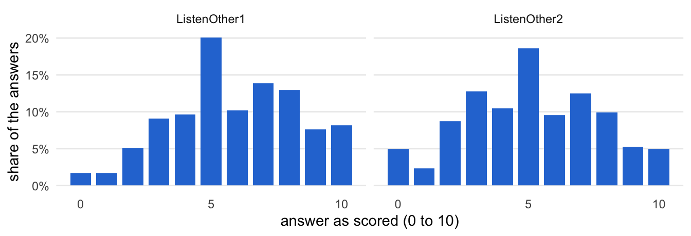
Both items use the whole scale: their means lie in the middle (5.90 and 5.14), the answers are close to symmetric, and at most 8 % answered 10. Nothing points to a ceiling.
Step 3 · How the items hang together
Do the two items agree?
t0 |>
select(num_range("ListenOther", 1:2)) |>
cor(use = "pairwise.complete.obs") |>
round(3) ListenOther1 ListenOther2
ListenOther1 1.000 0.612
ListenOther2 0.612 1.000With two items, their correlation is the whole story (r = .61).
Step 4 · One factor at T0
What does the model look like? Two items cannot identify a factor with free loadings, so both loadings are held equal (tau-equivalent) and the factor variance is set to 1:
lo_full <- t0 |>
cfa(model = "
ListenOther =~ NA*ListenOther1 + L*ListenOther1 + L*ListenOther2
ListenOther ~~ 1*ListenOther
",
data = _, estimator = "MLR", missing = "fiml.x")lo_full |>
cfaPlot("Others Listen to Me, both items (T0)")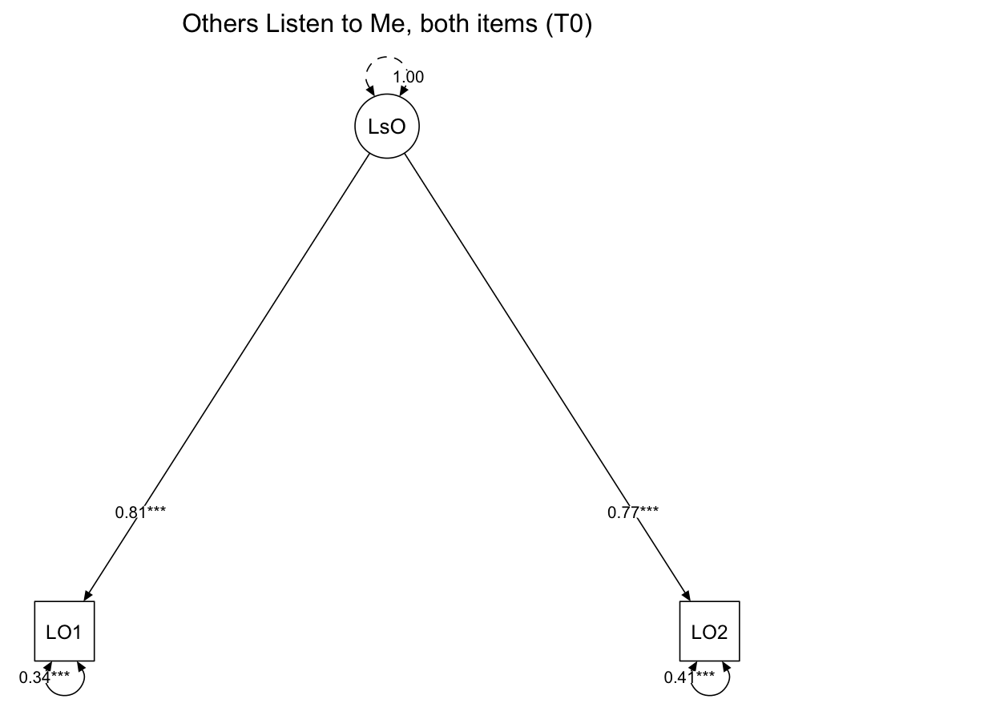
standardizedSolution(lo_full) |>
filter(op == "=~") |>
select(item = rhs, loading = est.std, se, pvalue) |>
mutate(across(where(is.double), \(x) round(x, 3)))| item | loading | se | pvalue |
|---|---|---|---|
| ListenOther1 | 0.811 | 0.037 | 0 |
| ListenOther2 | 0.767 | 0.035 | 0 |
The model has no degrees of freedom left (df = 0): it reproduces the variances and the correlation of the two items exactly, so its fit is perfect by construction and says nothing. What can be judged are the loadings. They are equal in the raw metric; standardized, they differ slightly (.81 and .77), because item 2 spreads a little more.
Step 5 · Where it strains
Is there anything to test? Not with two items: without degrees of freedom there are no modification indices.
Step 6 · The decision
Is the model kept? Yes, with both items.
Step 7 · The decision in both groups
Would each group alone have led to the same model? Before the training both groups are untrained, so the January questionnaires of both settle the model together. Each group on its own should show the same pattern. Both items, in each group:
# the model of Step 4, in each group's January questionnaires
lo_full_groups <- t0_groups |>
map(\(group) update(lo_full, data = group))
lo_full_groups |>
map(\(fit) standardizedSolution(fit) |>
filter(op == "=~") |>
select(item = rhs, loading = est.std)) |>
list_rbind(names_to = "group") |>
pivot_wider(names_from = group, values_from = loading) |>
mutate(across(where(is.double), \(x) round(x, 2)))| item | Control | Experimental |
|---|---|---|
| ListenOther1 | 0.82 | 0.79 |
| ListenOther2 | 0.75 | 0.79 |
In neither group does an item load below .40, as in all persons.
Is the model possible in each group?
lo_full_groups |>
map(fit_table) |>
list_rbind(names_to = "group")| group | admissible | ChiSq | df | p | CFI | TLI | RMSEA | SRMR |
|---|---|---|---|---|---|---|---|---|
| Control | TRUE | 0 | 0 | NA | 1 | 1 | 0 | 0 |
| Experimental | TRUE | 0 | 0 | NA | 1 | 1 | 0 | 0 |
Its solution is possible in both groups; with no degrees of freedom left, it fits by construction.
Control group
The control group, trained between September and December.
Step 8 · The four waves
Does the final model hold over the year? The model at each wave of the group:
lo_con_waves <- control_waves |>
map(\(wave) update(lo_full, data = wave))
lo_con_waves |>
map(\(fit) bind_cols(persons = lavInspect(fit, "nobs"),
fit_table(fit))) |>
list_rbind(names_to = "wave")| wave | persons | admissible | ChiSq | df | p | CFI | TLI | RMSEA | SRMR |
|---|---|---|---|---|---|---|---|---|---|
| T0 | 178 | TRUE | 0 | 0 | NA | 1 | 1 | 0 | 0 |
| T1 | 146 | TRUE | 0 | 0 | NA | 1 | 1 | 0 | 0 |
| T2 | 163 | TRUE | 0 | 0 | NA | 1 | 1 | 0 | 0 |
| T3 | 142 | TRUE | 0 | 0 | NA | 1 | 1 | 0 | 0 |
lo_con_waves |>
map(reliability_check) |>
list_rbind(names_to = "wave")| wave | alpha | omega | AVE | min_load | max_load |
|---|---|---|---|---|---|
| T0 | 0.755 | 0.755 | 0.606 | 0.746 | 0.815 |
| T1 | 0.736 | 0.736 | 0.582 | 0.746 | 0.782 |
| T2 | 0.811 | 0.811 | 0.683 | 0.769 | 0.898 |
| T3 | 0.812 | 0.812 | 0.683 | 0.744 | 0.943 |
plot_loadings_waves(lo_con_waves)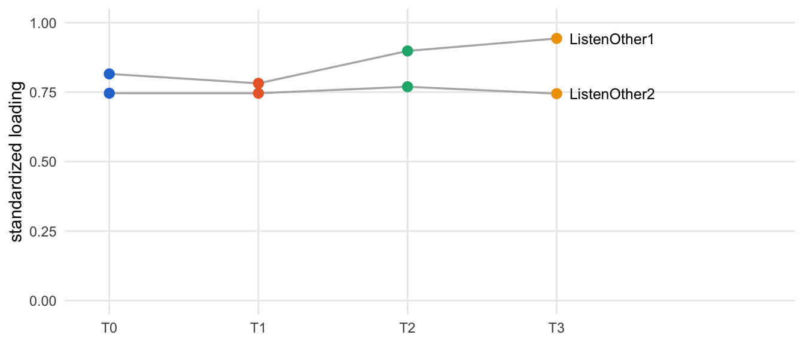
The model is possible at every wave. With no degrees of freedom left, it fits by construction; what can change are its loadings and its reliability: ω lies between .74 and .81, and every item loads at least .74.
Experimental group
The experimental group, trained between January and March; in September and December it holds the fewest questionnaires of the study.
Step 8 · The four waves
Does the final model hold over the year? The model at each wave of the group:
lo_exp_waves <- experimental_waves |>
map(\(wave) update(lo_full, data = wave))
lo_exp_waves |>
map(\(fit) bind_cols(persons = lavInspect(fit, "nobs"),
fit_table(fit))) |>
list_rbind(names_to = "wave")| wave | persons | admissible | ChiSq | df | p | CFI | TLI | RMSEA | SRMR |
|---|---|---|---|---|---|---|---|---|---|
| T0 | 180 | TRUE | 0 | 0 | NA | 1 | 1 | 0 | 0 |
| T1 | 156 | TRUE | 0 | 0 | NA | 1 | 1 | 0 | 0 |
| T2 | 103 | TRUE | 0 | 0 | NA | 1 | 1 | 0 | 0 |
| T3 | 69 | TRUE | 0 | 0 | NA | 1 | 1 | 0 | 0 |
lo_exp_waves |>
map(reliability_check) |>
list_rbind(names_to = "wave")| wave | alpha | omega | AVE | min_load | max_load |
|---|---|---|---|---|---|
| T0 | 0.769 | 0.769 | 0.625 | 0.787 | 0.794 |
| T1 | 0.820 | 0.820 | 0.695 | 0.798 | 0.875 |
| T2 | 0.716 | 0.716 | 0.558 | 0.695 | 0.813 |
| T3 | 0.765 | 0.765 | 0.620 | 0.694 | 0.932 |
plot_loadings_waves(lo_exp_waves)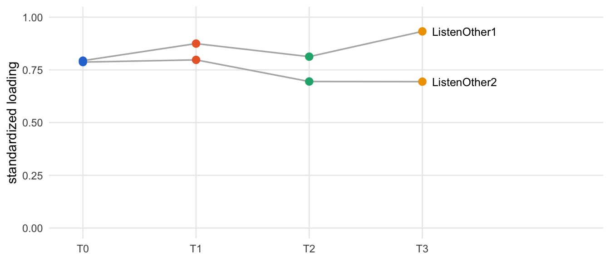
The model is possible at every wave. With no degrees of freedom left, it fits by construction; what can change are its loadings and its reliability: ω lies between .72 and .82, and every item loads at least .69.
Step 9 · What follows
In short:
- T0, both groups: no item loads below .40, as in all persons; the final model is possible in each.
- Control group, four waves: possible at every wave; saturated, so no fit to judge.
- Experimental group, four waves: possible at every wave; saturated, so no fit to judge.
- Reliability: ω between .72 and .82.
- Chapter 7: the same over the four waves and in both groups, with estimates outside their range set at 0 (adjustment A).
Where does the construct go from here? Both items form its score (Chapter 2) and its latent factor in Chapters 7, 8 and 11.
I Listen
Step 1 · The items
Which items measure it?
item_wording |>
filter(item %in% scale_items$ListenSelf) |>
mutate(reversed = item %in% reverse_keyed)| item | text | reversed |
|---|---|---|
| ListenSelf1 | When I listen to a person talking to me, I totally devote myself to exploring their thoughts with them. | FALSE |
| ListenSelf2 | When I listen to a person talking to me, I put aside my thoughts and concerns completely. | FALSE |
Two items on how the respondent listens: devoting oneself to the speaker’s thoughts, and putting one’s own aside. Neither is reverse-keyed.
Step 2 · The answers
How are the answers distributed in January?
t0 |>
describe(num_range("ListenSelf", 1:2))
Descriptive Statistics
----------------------
------------------------------------------------------------------------
Variable Mean Median SD Range IQR Skewness N Missing
------------------------------------------------------------------------
ListenSelf1 7.837 8.000 1.916 10.000 2.000 -0.973 350 8
ListenSelf2 6.880 7.000 2.600 10.000 4.000 -0.781 349 9
------------------------------------------------------------------------t0 |>
select(num_range("ListenSelf", 1:2)) |>
plot_answers()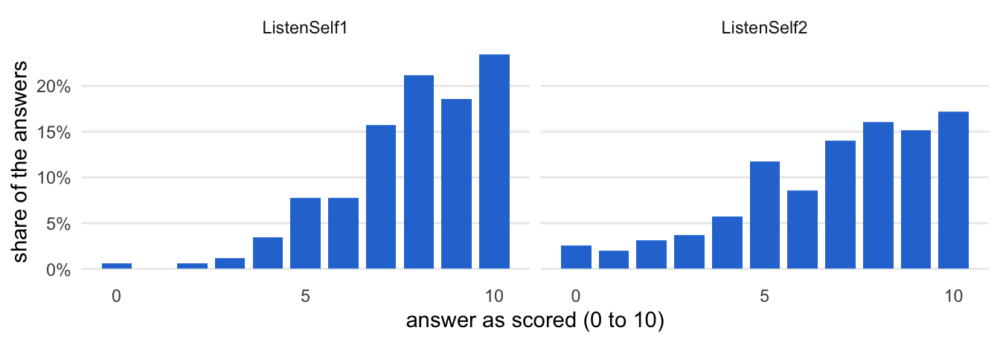
The answers lean towards the upper end, item 1 more than item 2 (means 7.84 and 6.88): 23 % answered 10 to item 1. Both items are skewed to the left, without a ceiling.
Step 3 · How the items hang together
Do the two items agree?
t0 |>
select(num_range("ListenSelf", 1:2)) |>
cor(use = "pairwise.complete.obs") |>
round(3) ListenSelf1 ListenSelf2
ListenSelf1 1.00 0.53
ListenSelf2 0.53 1.00The two items agree only moderately (r = .53).
Step 4 · One factor at T0
What does the model look like? Two items cannot identify a factor with free loadings, so both loadings are held equal (tau-equivalent) and the factor variance is set to 1:
ls_full <- t0 |>
cfa(model = "
ListenSelf =~ NA*ListenSelf1 + L*ListenSelf1 + L*ListenSelf2
ListenSelf ~~ 1*ListenSelf
",
data = _, estimator = "MLR", missing = "fiml.x")ls_full |>
cfaPlot("I Listen, both items (T0)")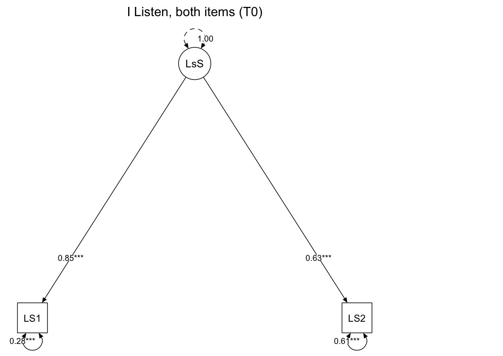
standardizedSolution(ls_full) |>
filter(op == "=~") |>
select(item = rhs, loading = est.std, se, pvalue) |>
mutate(across(where(is.double), \(x) round(x, 3)))| item | loading | se | pvalue |
|---|---|---|---|
| ListenSelf1 | 0.849 | 0.041 | 0 |
| ListenSelf2 | 0.626 | 0.041 | 0 |
As before, df = 0 and the fit says nothing. The standardized loadings differ more than for Others Listen to Me (.85 and .63): with equal raw loadings, the item that spreads more, item 2 (SD 2.60 against 1.92), gets the lower standardized loading.
Step 5 · Where it strains
Is there anything to test? Not with two items: without degrees of freedom there are no modification indices.
Step 6 · The decision
Is the model kept? Yes, with both items.
Step 7 · The decision in both groups
Would each group alone have led to the same model? Before the training both groups are untrained, so the January questionnaires of both settle the model together. Each group on its own should show the same pattern. Both items, in each group:
# the model of Step 4, in each group's January questionnaires
ls_full_groups <- t0_groups |>
map(\(group) update(ls_full, data = group))
ls_full_groups |>
map(\(fit) standardizedSolution(fit) |>
filter(op == "=~") |>
select(item = rhs, loading = est.std)) |>
list_rbind(names_to = "group") |>
pivot_wider(names_from = group, values_from = loading) |>
mutate(across(where(is.double), \(x) round(x, 2)))| item | Control | Experimental |
|---|---|---|
| ListenSelf1 | 0.85 | 0.85 |
| ListenSelf2 | 0.67 | 0.58 |
In neither group does an item load below .40, as in all persons.
Is the model possible in each group?
ls_full_groups |>
map(fit_table) |>
list_rbind(names_to = "group")| group | admissible | ChiSq | df | p | CFI | TLI | RMSEA | SRMR |
|---|---|---|---|---|---|---|---|---|
| Control | TRUE | 0 | 0 | NA | NA | NA | 0 | 0 |
| Experimental | TRUE | 0 | 0 | NA | 1 | 1 | 0 | 0 |
Its solution is possible in both groups; with no degrees of freedom left, it fits by construction.
Control group
The control group, trained between September and December.
Step 8 · The four waves
Does the final model hold over the year? The model at each wave of the group:
ls_con_waves <- control_waves |>
map(\(wave) update(ls_full, data = wave))
ls_con_waves |>
map(\(fit) bind_cols(persons = lavInspect(fit, "nobs"),
fit_table(fit))) |>
list_rbind(names_to = "wave")| wave | persons | admissible | ChiSq | df | p | CFI | TLI | RMSEA | SRMR |
|---|---|---|---|---|---|---|---|---|---|
| T0 | 178 | TRUE | 0 | 0 | NA | NA | NA | 0 | 0 |
| T1 | 146 | TRUE | 0 | 0 | NA | 1 | 1 | 0 | 0 |
| T2 | 165 | TRUE | 0 | 0 | NA | 1 | 1 | 0 | 0 |
| T3 | 142 | TRUE | 0 | 0 | NA | 1 | 1 | 0 | 0 |
ls_con_waves |>
map(reliability_check) |>
list_rbind(names_to = "wave")| wave | alpha | omega | AVE | min_load | max_load |
|---|---|---|---|---|---|
| T0 | 0.716 | 0.716 | 0.557 | 0.674 | 0.849 |
| T1 | 0.792 | 0.792 | 0.656 | 0.734 | 0.917 |
| T2 | 0.675 | 0.675 | 0.509 | 0.594 | 0.956 |
| T3 | 0.714 | 0.714 | 0.556 | 0.626 | 0.979 |
plot_loadings_waves(ls_con_waves)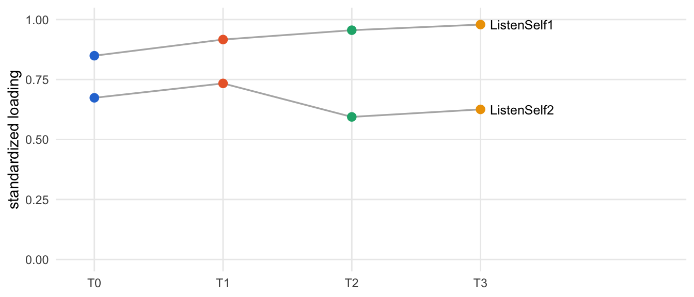
The model is possible at every wave. With no degrees of freedom left, it fits by construction; what can change are its loadings and its reliability: ω lies between .68 and .79, and every item loads at least .59.
Experimental group
The experimental group, trained between January and March; in September and December it holds the fewest questionnaires of the study.
Step 8 · The four waves
Does the final model hold over the year? The model at each wave of the group:
ls_exp_waves <- experimental_waves |>
map(\(wave) update(ls_full, data = wave))
ls_exp_waves |>
map(\(fit) bind_cols(persons = lavInspect(fit, "nobs"),
fit_table(fit))) |>
list_rbind(names_to = "wave")| wave | persons | admissible | ChiSq | df | p | CFI | TLI | RMSEA | SRMR |
|---|---|---|---|---|---|---|---|---|---|
| T0 | 180 | TRUE | 0 | 0 | NA | 1 | 1 | 0 | 0 |
| T1 | 156 | TRUE | 0 | 0 | NA | 1 | 1 | 0 | 0 |
| T2 | 103 | TRUE | 0 | 0 | NA | 1 | 1 | 0 | 0 |
| T3 | 69 | TRUE | 0 | 0 | NA | 1 | 1 | 0 | 0 |
ls_exp_waves |>
map(reliability_check) |>
list_rbind(names_to = "wave")| wave | alpha | omega | AVE | min_load | max_load |
|---|---|---|---|---|---|
| T0 | 0.625 | 0.625 | 0.455 | 0.578 | 0.846 |
| T1 | 0.692 | 0.692 | 0.529 | 0.660 | 0.821 |
| T2 | 0.711 | 0.711 | 0.552 | 0.626 | 0.968 |
| T3 | 0.675 | 0.675 | 0.509 | 0.626 | 0.853 |
plot_loadings_waves(ls_exp_waves)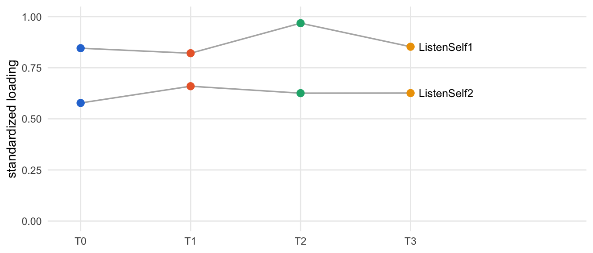
The model is possible at every wave. With no degrees of freedom left, it fits by construction; what can change are its loadings and its reliability: ω lies between .62 and .71, and every item loads at least .58.
Step 9 · What follows
In short:
- T0, both groups: no item loads below .40, as in all persons; the final model is possible in each.
- Control group, four waves: possible at every wave; saturated, so no fit to judge.
- Experimental group, four waves: possible at every wave; saturated, so no fit to judge.
- Reliability: ω between .62 and .79.
- Chapter 7: stops: in the experimental group the intercepts of its items shift over the waves, and with two items no partial model is possible.
Where does the construct go from here? Both items form its score (Chapter 2) and its latent factor in Chapters 7 and 8.
Understood
Step 1 · The item
Which item measures it? A single one:
item_wording |>
filter(item %in% scale_items$Understood) |>
mutate(reversed = item %in% reverse_keyed)| item | text | reversed |
|---|---|---|
| Understood1 | During my interactions with others, I feel they understand me. | FALSE |
Step 2 · The answers
How are the answers distributed in January?
t0 |>
describe(Understood1)
Descriptive Statistics
----------------------
------------------------------------------------------------------------
Variable Mean Median SD Range IQR Skewness N Missing
------------------------------------------------------------------------
Understood1 7.184 7.000 1.969 10.000 3.000 -0.622 358 0
------------------------------------------------------------------------t0 |>
select(Understood1) |>
plot_answers()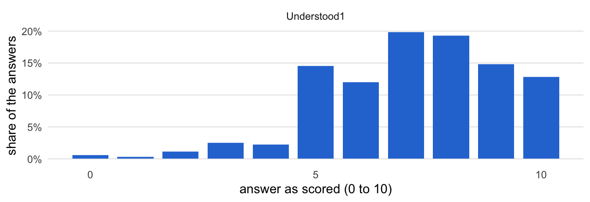
The answers lean to the upper half (mean 7.18), and 13 % answered 10.
Steps 3 to 8 · No factor model
Why not? A single item has nothing to share with other items: there is no correlation to look at, no factor to fit and no reliability to estimate within one wave.
Step 9 · What follows
Where does the construct go from here? Understood stays a manifest score: its item is its score (Chapter 2). In the block model of Chapter 8 it enters as a factor carried by its single item without measurement error; Chapters 7 and 11 leave it out.
Kama Muta
Step 1 · The items
Which items measure it?
item_wording |>
filter(item %in% scale_items$KamaMuta) |>
mutate(reversed = item %in% reverse_keyed)| item | text | reversed |
|---|---|---|
| KamaMuta1 | I tend to feel moved | FALSE |
| KamaMuta2 | I tend to feel touched | FALSE |
Two short items on being moved and being touched; neither is reverse-keyed.
Step 2 · The answers
How are the answers distributed in January?
t0 |>
describe(num_range("KamaMuta", 1:2))
Descriptive Statistics
----------------------
----------------------------------------------------------------------
Variable Mean Median SD Range IQR Skewness N Missing
----------------------------------------------------------------------
KamaMuta1 7.605 8.000 2.073 10.000 2.000 -1.050 354 4
KamaMuta2 7.754 8.000 2.178 10.000 2.000 -1.455 353 5
----------------------------------------------------------------------t0 |>
select(num_range("KamaMuta", 1:2)) |>
plot_answers()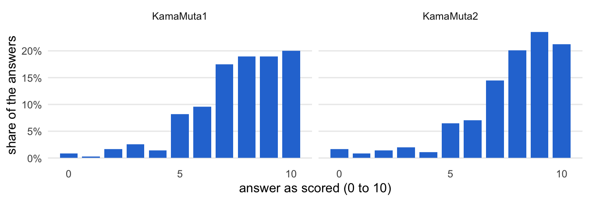
Both items lean to the upper end (means 7.60 and 7.75) and are skewed to the left; about a fifth of the respondents answered 10.
Step 3 · How the items hang together
Do the two items agree?
t0 |>
select(num_range("KamaMuta", 1:2)) |>
cor(use = "pairwise.complete.obs") |>
round(3) KamaMuta1 KamaMuta2
KamaMuta1 1.000 0.642
KamaMuta2 0.642 1.000The two items agree well (r = .64).
Step 4 · One factor at T0
What does the model look like? Two items cannot identify a factor with free loadings, so both loadings are held equal (tau-equivalent) and the factor variance is set to 1:
km_full <- t0 |>
cfa(model = "
KamaMuta =~ NA*KamaMuta1 + L*KamaMuta1 + L*KamaMuta2
KamaMuta ~~ 1*KamaMuta
",
data = _, estimator = "MLR", missing = "fiml.x")km_full |>
cfaPlot("Kama Muta, both items (T0)")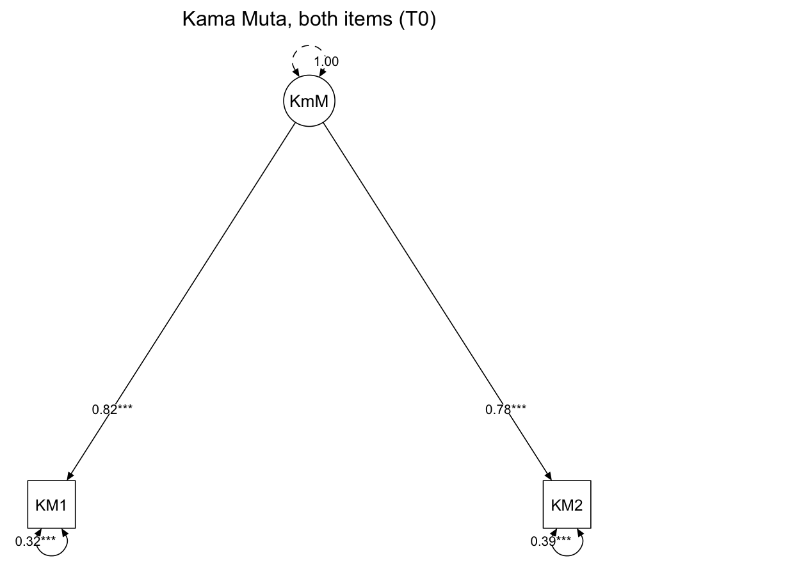
standardizedSolution(km_full) |>
filter(op == "=~") |>
select(item = rhs, loading = est.std, se, pvalue) |>
mutate(across(where(is.double), \(x) round(x, 3)))| item | loading | se | pvalue |
|---|---|---|---|
| KamaMuta1 | 0.822 | 0.036 | 0 |
| KamaMuta2 | 0.781 | 0.046 | 0 |
Again df = 0; the two standardized loadings are close (.82 and .78).
Step 5 · Where it strains
Is there anything to test? Not with two items: without degrees of freedom there are no modification indices.
Step 6 · The decision
Is the model kept? Yes, with both items.
Step 7 · The decision in both groups
Would each group alone have led to the same model? Before the training both groups are untrained, so the January questionnaires of both settle the model together. Each group on its own should show the same pattern. Both items, in each group:
# the model of Step 4, in each group's January questionnaires
km_full_groups <- t0_groups |>
map(\(group) update(km_full, data = group))
km_full_groups |>
map(\(fit) standardizedSolution(fit) |>
filter(op == "=~") |>
select(item = rhs, loading = est.std)) |>
list_rbind(names_to = "group") |>
pivot_wider(names_from = group, values_from = loading) |>
mutate(across(where(is.double), \(x) round(x, 2)))| item | Control | Experimental |
|---|---|---|
| KamaMuta1 | 0.91 | 0.71 |
| KamaMuta2 | 0.85 | 0.69 |
In neither group does an item load below .40, as in all persons.
Is the model possible in each group?
km_full_groups |>
map(fit_table) |>
list_rbind(names_to = "group")| group | admissible | ChiSq | df | p | CFI | TLI | RMSEA | SRMR |
|---|---|---|---|---|---|---|---|---|
| Control | TRUE | 0 | 0 | NA | NA | NA | 0 | 0 |
| Experimental | TRUE | 0 | 0 | NA | NA | NA | 0 | 0 |
Its solution is possible in both groups; with no degrees of freedom left, it fits by construction.
Control group
The control group, trained between September and December.
Step 8 · The four waves
Does the final model hold over the year? The model at each wave of the group:
km_con_waves <- control_waves |>
map(\(wave) update(km_full, data = wave))
km_con_waves |>
map(\(fit) bind_cols(persons = lavInspect(fit, "nobs"),
fit_table(fit))) |>
list_rbind(names_to = "wave")| wave | persons | admissible | ChiSq | df | p | CFI | TLI | RMSEA | SRMR |
|---|---|---|---|---|---|---|---|---|---|
| T0 | 178 | TRUE | 0 | 0 | NA | NA | NA | 0 | 0 |
| T1 | 146 | TRUE | 0 | 0 | NA | NA | NA | 0 | 0 |
| T2 | 165 | TRUE | 0 | 0 | NA | NA | NA | 0 | 0 |
| T3 | 142 | TRUE | 0 | 0 | NA | 1 | 1 | 0 | 0 |
km_con_waves |>
map(reliability_check) |>
list_rbind(names_to = "wave")| wave | alpha | omega | AVE | min_load | max_load |
|---|---|---|---|---|---|
| T0 | 0.875 | 0.875 | 0.777 | 0.853 | 0.914 |
| T1 | 0.835 | 0.835 | 0.717 | 0.822 | 0.874 |
| T2 | 0.826 | 0.826 | 0.704 | 0.838 | 0.839 |
| T3 | 0.666 | 0.666 | 0.499 | 0.674 | 0.744 |
plot_loadings_waves(km_con_waves)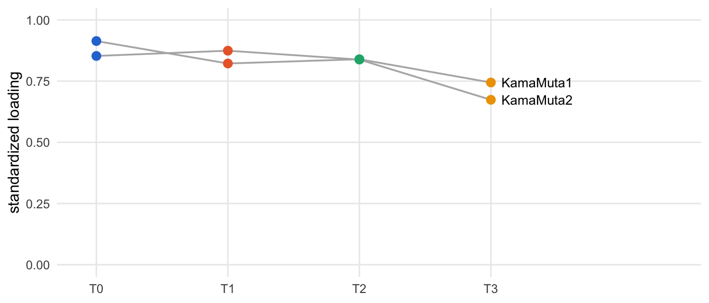
The model is possible at every wave. With no degrees of freedom left, it fits by construction; what can change are its loadings and its reliability: ω lies between .67 and .88, and every item loads at least .67.
Experimental group
The experimental group, trained between January and March; in September and December it holds the fewest questionnaires of the study.
Step 8 · The four waves
Does the final model hold over the year? The model at each wave of the group:
km_exp_waves <- experimental_waves |>
map(\(wave) update(km_full, data = wave))
km_exp_waves |>
map(\(fit) bind_cols(persons = lavInspect(fit, "nobs"),
fit_table(fit))) |>
list_rbind(names_to = "wave")| wave | persons | admissible | ChiSq | df | p | CFI | TLI | RMSEA | SRMR |
|---|---|---|---|---|---|---|---|---|---|
| T0 | 180 | TRUE | 0 | 0 | NA | NA | NA | 0 | 0 |
| T1 | 156 | TRUE | 0 | 0 | NA | NA | NA | 0 | 0 |
| T2 | 103 | TRUE | 0 | 0 | NA | 1 | 1 | 0 | 0 |
| T3 | 68 | TRUE | 0 | 0 | NA | 1 | 1 | 0 | 0 |
km_exp_waves |>
map(reliability_check) |>
list_rbind(names_to = "wave")| wave | alpha | omega | AVE | min_load | max_load |
|---|---|---|---|---|---|
| T0 | 0.660 | 0.660 | 0.493 | 0.692 | 0.713 |
| T1 | 0.535 | 0.535 | 0.365 | 0.543 | 0.692 |
| T2 | 0.923 | 0.923 | 0.857 | 0.923 | 0.928 |
| T3 | 0.665 | 0.665 | 0.498 | 0.628 | 0.822 |
plot_loadings_waves(km_exp_waves)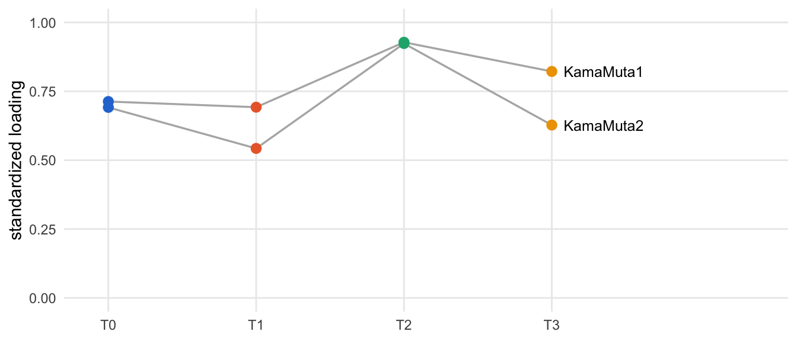
The model is possible at every wave. With no degrees of freedom left, it fits by construction; what can change are its loadings and its reliability: ω lies between .54 and .92, and every item loads at least .54.
Step 9 · What follows
In short:
- T0, both groups: no item loads below .40, as in all persons; the final model is possible in each.
- Control group, four waves: possible at every wave; saturated, so no fit to judge.
- Experimental group, four waves: possible at every wave; saturated, so no fit to judge.
- Reliability: ω between .54 and .92.
- Chapter 7: the same over the four waves and in both groups.
Where does the construct go from here? Both items form its score (Chapter 2) and its latent factor in Chapters 7, 8 and 11.
Positivity Resonance
Step 1 · The items
Which items measure it? Eight items that complete one question stem about how often the respondent experiences moments of positive connection; none is reverse-keyed:
item_wording |>
filter(item %in% scale_items$Resonance) |>
mutate(reversed = item %in% reverse_keyed)| item | text | reversed |
|---|---|---|
| Resonance1 | are able to attune to other people’s words and experiences? | FALSE |
| Resonance2 | experience a ‘flow of conversation’ with other people? | FALSE |
| Resonance3 | feel energized? | FALSE |
| Resonance4 | you and other people share a mutual understanding of one another? | FALSE |
| Resonance5 | you and other people are mutually responsive to one another’s needs? | FALSE |
| Resonance6 | you feel a sense of mutual trust with other people? | FALSE |
| Resonance7 | you and other people mutually focus on the ‘best side’ of one another? | FALSE |
| Resonance8 | you feel ‘in sync’ with other people? | FALSE |
Step 2 · The answers
How are the answers distributed in January?
t0 |>
describe(num_range("Resonance", 1:8))
Descriptive Statistics
----------------------
-----------------------------------------------------------------------
Variable Mean Median SD Range IQR Skewness N Missing
-----------------------------------------------------------------------
Resonance1 7.572 8.000 1.726 10.000 3.000 -0.487 355 3
Resonance2 7.610 8.000 1.798 10.000 2.000 -0.642 351 7
Resonance3 7.266 8.000 2.054 9.000 3.000 -0.525 354 4
Resonance4 7.099 7.000 1.913 10.000 3.000 -0.519 355 3
Resonance5 7.276 8.000 1.776 9.000 3.000 -0.453 355 3
Resonance6 7.642 8.000 1.874 10.000 2.000 -0.888 355 3
Resonance7 7.271 7.000 2.018 10.000 3.000 -0.628 354 4
Resonance8 6.992 7.000 1.992 10.000 3.000 -0.576 354 4
-----------------------------------------------------------------------t0 |>
select(num_range("Resonance", 1:8)) |>
plot_answers()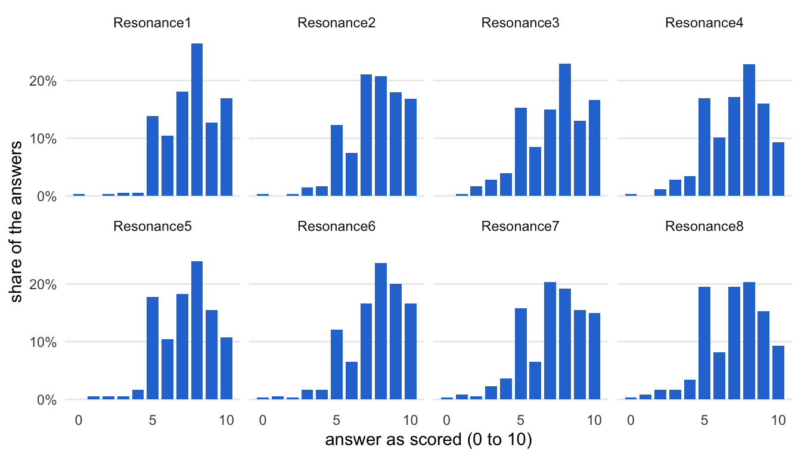
The answers lean towards the upper half of the scale (means 6.99 to 7.64) but stop short of a ceiling: at most 17 % answered 10.
Step 3 · How the items hang together
Which items go together?
t0 |>
select(num_range("Resonance", 1:8)) |>
plot_correlations()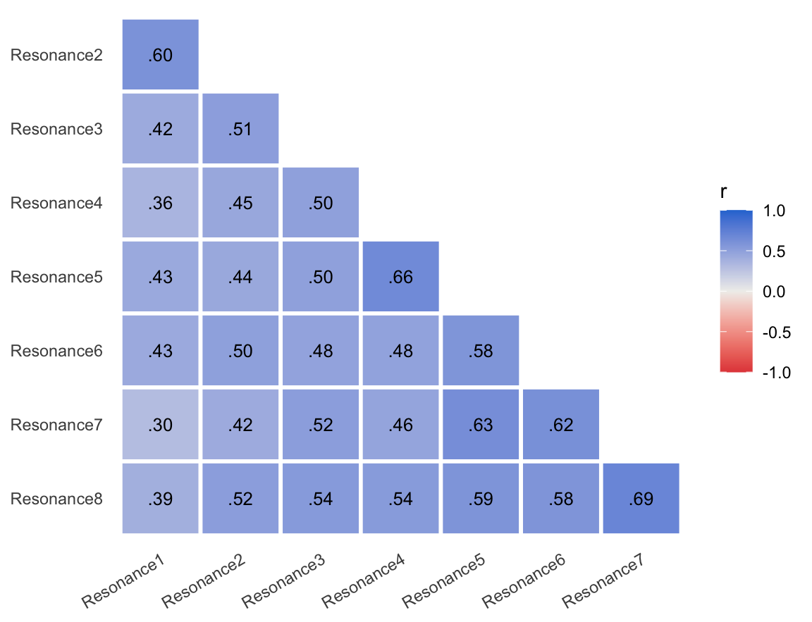
t0 |>
select(num_range("Resonance", 1:8)) |>
principal_components(n = 1) |>
check_itemscale()# Description of (Sub-)ScalesComponent 1
Item | Missings | Mean | SD | Skewness | Difficulty | Discrimination | alpha if deleted
-----------------------------------------------------------------------------------------------
Resonance1 | 0.01 | 7.57 | 1.73 | -0.49 | 0.76 | 0.56 | 0.89
Resonance2 | 0.02 | 7.61 | 1.80 | -0.64 | 0.76 | 0.64 | 0.88
Resonance3 | 0.01 | 7.27 | 2.05 | -0.53 | 0.73 | 0.66 | 0.88
Resonance4 | 0.01 | 7.10 | 1.91 | -0.52 | 0.71 | 0.65 | 0.88
Resonance5 | 0.01 | 7.28 | 1.78 | -0.45 | 0.73 | 0.73 | 0.87
Resonance6 | 0.01 | 7.64 | 1.87 | -0.89 | 0.76 | 0.69 | 0.88
Resonance7 | 0.01 | 7.27 | 2.02 | -0.63 | 0.73 | 0.69 | 0.88
Resonance8 | 0.01 | 6.99 | 1.99 | -0.58 | 0.70 | 0.74 | 0.87
Mean inter-item-correlation = 0.509 Cronbach's alpha = 0.892All items correlate positively, from .30 to .69. Item 1 goes least with the rest (discrimination .56), yet α (.892) would not rise without any item.
Step 4 · One factor at T0
How well does one factor on all eight items fit?
res_full <- t0 |>
cfa(model = "
Resonance =~ Resonance1 + Resonance2 + Resonance3 + Resonance4 +
Resonance5 + Resonance6 + Resonance7 + Resonance8
",
data = _, estimator = "MLR", missing = "fiml.x")res_full |>
cfaPlot("Positivity Resonance, all items (T0)")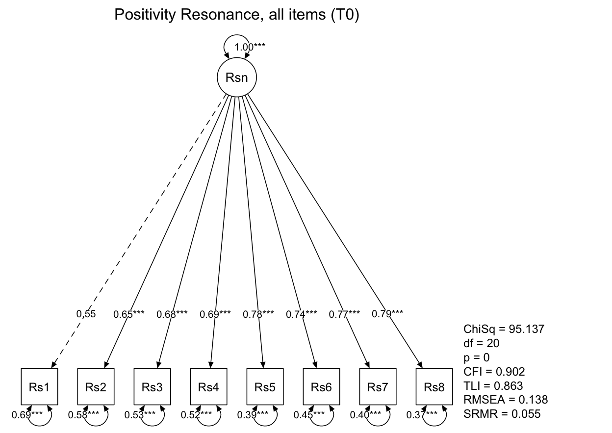
standardizedSolution(res_full) |>
filter(op == "=~") |>
select(item = rhs, loading = est.std, se, pvalue) |>
mutate(across(where(is.double), \(x) round(x, 3)))| item | loading | se | pvalue |
|---|---|---|---|
| Resonance1 | 0.553 | 0.049 | 0 |
| Resonance2 | 0.651 | 0.045 | 0 |
| Resonance3 | 0.683 | 0.037 | 0 |
| Resonance4 | 0.693 | 0.053 | 0 |
| Resonance5 | 0.782 | 0.037 | 0 |
| Resonance6 | 0.745 | 0.040 | 0 |
| Resonance7 | 0.772 | 0.032 | 0 |
| Resonance8 | 0.793 | 0.035 | 0 |
Every item loads clearly (from .55), but the model misses the criteria: CFI = .902, RMSEA = .138.
Step 5 · Where it strains
Which pairs share more than the factor explains? The modification indices of 10 and more:
modindices(res_full, sort. = TRUE, minimum.value = 10) |>
select(lhs, op, rhs, mi, epc = sepc.all) |>
mutate(across(where(is.double), \(x) round(x, 3)))| lhs | op | rhs | mi | epc | |
|---|---|---|---|---|---|
| 27 | Resonance1 | ~~ | Resonance2 | 59.607 | 0.445 |
| 45 | Resonance4 | ~~ | Resonance5 | 35.158 | 0.383 |
| 32 | Resonance1 | ~~ | Resonance7 | 25.157 | -0.305 |
| 54 | Resonance7 | ~~ | Resonance8 | 25.156 | 0.352 |
| 38 | Resonance2 | ~~ | Resonance7 | 14.159 | -0.237 |
| 47 | Resonance4 | ~~ | Resonance7 | 12.130 | -0.223 |
Two pairs stand out (MI = 60 and 35), and both share their content:
item_wording |>
filter(item %in% str_c("Resonance", c(1, 2, 4, 5)))| item | text |
|---|---|
| Resonance1 | are able to attune to other people’s words and experiences? |
| Resonance2 | experience a ‘flow of conversation’ with other people? |
| Resonance4 | you and other people share a mutual understanding of one another? |
| Resonance5 | you and other people are mutually responsive to one another’s needs? |
Items 1 and 2 are both about conversation (attuning to others’ words, a flow of conversation); items 4 and 5 both describe something mutual (understanding, responsiveness).
Step 6 · The decision
What changes? All items stay. The two pairs get a residual covariance, one after the other. First items 1 and 2:
res_1_2 <- t0 |>
cfa(model = "
Resonance =~ Resonance1 + Resonance2 + Resonance3 + Resonance4 +
Resonance5 + Resonance6 + Resonance7 + Resonance8
Resonance1 ~~ Resonance2
",
data = _, estimator = "MLR", missing = "fiml.x")
modindices(res_1_2, sort. = TRUE, minimum.value = 10) |>
select(lhs, op, rhs, mi, epc = sepc.all) |>
mutate(across(where(is.double), \(x) round(x, 3)))| lhs | op | rhs | mi | epc | |
|---|---|---|---|---|---|
| 45 | Resonance4 | ~~ | Resonance5 | 34.829 | 0.386 |
| 54 | Resonance7 | ~~ | Resonance8 | 18.835 | 0.318 |
| 47 | Resonance4 | ~~ | Resonance7 | 17.834 | -0.277 |
Items 4 and 5 now show the largest MI (35), and get their covariance too:
res_final <- t0 |>
cfa(model = "
Resonance =~ Resonance1 + Resonance2 + Resonance3 + Resonance4 +
Resonance5 + Resonance6 + Resonance7 + Resonance8
Resonance1 ~~ Resonance2
Resonance4 ~~ Resonance5
",
data = _, estimator = "MLR", missing = "fiml.x")res_final |>
cfaPlot("Positivity Resonance, final model (T0)")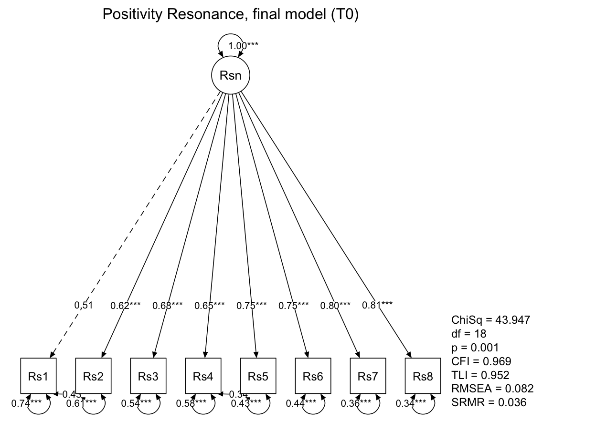
How much does each step improve the fit?
list(`all items` = res_full, `with 1 ~~ 2` = res_1_2, final = res_final) |>
map(fit_table) |>
list_rbind(names_to = "model")| model | admissible | ChiSq | df | p | CFI | TLI | RMSEA | SRMR |
|---|---|---|---|---|---|---|---|---|
| all items | TRUE | 95.14 | 20 | 0.000 | 0.902 | 0.863 | 0.138 | 0.055 |
| with 1 ~~ 2 | TRUE | 61.47 | 19 | 0.000 | 0.947 | 0.922 | 0.105 | 0.040 |
| final | TRUE | 43.95 | 18 | 0.001 | 0.969 | 0.952 | 0.082 | 0.036 |
The first covariance lifts the CFI to .947, not yet enough; the second to .969.
What remains? The modification indices of 10 and more in the final model:
modindices(res_final, sort. = TRUE, minimum.value = 10) |>
select(lhs, op, rhs, mi, epc = sepc.all) |>
mutate(across(where(is.double), \(x) round(x, 3)))| lhs | op | rhs | mi | epc | |
|---|---|---|---|---|---|
| 47 | Resonance4 | ~~ | Resonance7 | 11.565 | -0.205 |
| 54 | Resonance7 | ~~ | Resonance8 | 11.399 | 0.275 |
Two MIs just above 10 remain (at most 11.6); they stay fixed, as the model now meets the criteria.
Step 7 · The decision in both groups
Would each group alone have led to the same model? Before the training both groups are untrained, so the January questionnaires of both settle the model together. Each group on its own should show the same pattern. All eight items, in each group:
# the model of Step 4, in each group's January questionnaires
res_full_groups <- t0_groups |>
map(\(group) update(res_full, data = group))
res_full_groups |>
map(\(fit) standardizedSolution(fit) |>
filter(op == "=~") |>
select(item = rhs, loading = est.std)) |>
list_rbind(names_to = "group") |>
pivot_wider(names_from = group, values_from = loading) |>
mutate(across(where(is.double), \(x) round(x, 2)))| item | Control | Experimental |
|---|---|---|
| Resonance1 | 0.62 | 0.50 |
| Resonance2 | 0.64 | 0.66 |
| Resonance3 | 0.62 | 0.74 |
| Resonance4 | 0.74 | 0.65 |
| Resonance5 | 0.81 | 0.75 |
| Resonance6 | 0.77 | 0.72 |
| Resonance7 | 0.80 | 0.74 |
| Resonance8 | 0.79 | 0.79 |
Where does the model strain in each group? The three largest modification indices:
res_full_groups |>
map(\(fit) modindices(fit, sort. = TRUE) |>
slice_head(n = 3) |>
select(lhs, op, rhs, mi)) |>
list_rbind(names_to = "group") |>
mutate(mi = round(mi, 1))| group | lhs | op | rhs | mi |
|---|---|---|---|---|
| Control | Resonance4 | ~~ | Resonance5 | 19.5 |
| Control | Resonance7 | ~~ | Resonance8 | 19.1 |
| Control | Resonance1 | ~~ | Resonance7 | 14.9 |
| Experimental | Resonance1 | ~~ | Resonance2 | 50.1 |
| Experimental | Resonance4 | ~~ | Resonance5 | 14.1 |
| Experimental | Resonance2 | ~~ | Resonance7 | 12.8 |
In neither group does an item load below .40, as in all persons; the largest modification index joins items 4 and 5 in the control group and items 1 and 2 in the experimental group.
Does the final model hold in each group?
res_final_groups <- t0_groups |>
map(\(group) update(res_final, data = group))
res_final_groups |>
map(fit_table) |>
list_rbind(names_to = "group")| group | admissible | ChiSq | df | p | CFI | TLI | RMSEA | SRMR |
|---|---|---|---|---|---|---|---|---|
| Control | TRUE | 25.58 | 18 | 0.110 | 0.984 | 0.974 | 0.061 | 0.038 |
| Experimental | TRUE | 36.34 | 18 | 0.006 | 0.960 | 0.938 | 0.091 | 0.043 |
It does, in both groups (CFI .960 and above): each group alone would have led to the same model.
Control group
The control group, trained between September and December.
Step 8 · The four waves
Does the final model hold over the year? The model at each wave of the group:
res_con_waves <- control_waves |>
map(\(wave) update(res_final, data = wave))
res_con_waves |>
map(\(fit) bind_cols(persons = lavInspect(fit, "nobs"),
fit_table(fit))) |>
list_rbind(names_to = "wave")| wave | persons | admissible | ChiSq | df | p | CFI | TLI | RMSEA | SRMR |
|---|---|---|---|---|---|---|---|---|---|
| T0 | 177 | TRUE | 25.58 | 18 | 0.110 | 0.984 | 0.974 | 0.061 | 0.038 |
| T1 | 145 | TRUE | 23.11 | 18 | 0.186 | 0.988 | 0.981 | 0.057 | 0.034 |
| T2 | 164 | TRUE | 33.15 | 18 | 0.016 | 0.984 | 0.975 | 0.058 | 0.046 |
| T3 | 141 | TRUE | 55.46 | 18 | 0.000 | 0.914 | 0.866 | 0.150 | 0.064 |
res_con_waves |>
map(reliability_check) |>
list_rbind(names_to = "wave")| wave | alpha | omega | AVE | min_load | max_load |
|---|---|---|---|---|---|
| T0 | 0.900 | 0.878 | 0.530 | 0.582 | 0.826 |
| T1 | 0.896 | 0.869 | 0.530 | 0.425 | 0.880 |
| T2 | 0.882 | 0.862 | 0.507 | 0.266 | 0.826 |
| T3 | 0.904 | 0.859 | 0.534 | 0.530 | 0.877 |
plot_loadings_waves(res_con_waves)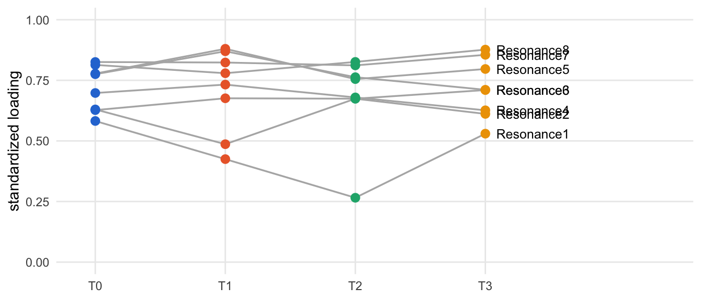
The model is possible at every wave. It falls short of the criteria of Step 5 at T3 through its CFI (.914). Where does it strain at T3?
modindices(res_con_waves$T3, sort. = TRUE) |>
slice_head(n = 3) |>
select(lhs, op, rhs, mi, epc = sepc.all) |>
mutate(across(where(is.double), \(x) round(x, 3)))| lhs | op | rhs | mi | epc |
|---|---|---|---|---|
| Resonance1 | ~~ | Resonance6 | 22.244 | 0.388 |
| Resonance5 | ~~ | Resonance6 | 13.009 | -0.319 |
| Resonance4 | ~~ | Resonance6 | 7.691 | 0.227 |
The largest modification index joins items 1 and 6. ω lies between .86 and .88, and every item loads at least .27.
Experimental group
The experimental group, trained between January and March; in September and December it holds the fewest questionnaires of the study.
Step 8 · The four waves
Does the final model hold over the year? The model at each wave of the group:
res_exp_waves <- experimental_waves |>
map(\(wave) update(res_final, data = wave))
res_exp_waves |>
map(\(fit) bind_cols(persons = lavInspect(fit, "nobs"),
fit_table(fit))) |>
list_rbind(names_to = "wave")| wave | persons | admissible | ChiSq | df | p | CFI | TLI | RMSEA | SRMR |
|---|---|---|---|---|---|---|---|---|---|
| T0 | 180 | TRUE | 36.34 | 18 | 0.006 | 0.960 | 0.938 | 0.091 | 0.043 |
| T1 | 156 | TRUE | 36.21 | 18 | 0.007 | 0.968 | 0.951 | 0.089 | 0.043 |
| T2 | 103 | TRUE | 21.31 | 18 | 0.264 | 0.997 | 0.995 | 0.028 | 0.051 |
| T3 | 69 | TRUE | 41.59 | 18 | 0.001 | 0.944 | 0.913 | 0.131 | 0.048 |
res_exp_waves |>
map(reliability_check) |>
list_rbind(names_to = "wave")| wave | alpha | omega | AVE | min_load | max_load |
|---|---|---|---|---|---|
| T0 | 0.882 | 0.853 | 0.485 | 0.444 | 0.805 |
| T1 | 0.906 | 0.878 | 0.539 | 0.571 | 0.871 |
| T2 | 0.907 | 0.855 | 0.552 | 0.549 | 0.932 |
| T3 | 0.921 | 0.905 | 0.604 | 0.578 | 0.853 |
plot_loadings_waves(res_exp_waves)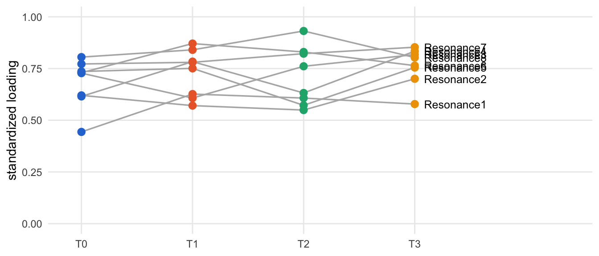
The model is possible at every wave. It falls short of the criteria of Step 5 at T3 through its CFI (.944). Where does it strain at T3?
modindices(res_exp_waves$T3, sort. = TRUE) |>
slice_head(n = 3) |>
select(lhs, op, rhs, mi, epc = sepc.all) |>
mutate(across(where(is.double), \(x) round(x, 3)))| lhs | op | rhs | mi | epc |
|---|---|---|---|---|
| Resonance1 | ~~ | Resonance8 | 12.455 | 0.444 |
| Resonance2 | ~~ | Resonance7 | 7.629 | -0.381 |
| Resonance5 | ~~ | Resonance8 | 6.733 | 0.311 |
The largest modification index joins items 1 and 8. ω lies between .85 and .91, and every item loads at least .44.
Step 9 · What follows
In short:
- T0, both groups: no item loads below .40, as in all persons; the final model fits in each (CFI .960 and above).
- Control group, four waves: possible at every wave; CFI below .95 at T3.
- Experimental group, four waves: possible at every wave; CFI below .95 at T3.
- Reliability: ω between .85 and .91.
- Chapter 7: the same over the four waves and in both groups.
Where does the construct go from here? All eight items form its score (Chapter 2); the latent factor of Chapters 7, 8 and 11 takes them with the two residual covariances, which are carried over to every wave.
Belongingness
Step 1 · The items
Which items measure it?
item_wording |>
filter(item %in% scale_items$Belongingness) |>
mutate(reversed = item %in% reverse_keyed)| item | text | reversed |
|---|---|---|
| Belongingness1 | I have a sense of belonging. | FALSE |
| Belongingness2 | I feel accepted by others. | FALSE |
| Belongingness3 | I feel connected with others. | FALSE |
Three short items on belonging, being accepted and being connected; none is reverse-keyed.
Step 2 · The answers
How are the answers distributed in January?
t0 |>
describe(num_range("Belongingness", 1:3))
Descriptive Statistics
----------------------
---------------------------------------------------------------------------
Variable Mean Median SD Range IQR Skewness N Missing
---------------------------------------------------------------------------
Belongingness1 8.121 9.000 2.004 10.000 3.000 -1.332 354 4
Belongingness2 8.051 8.000 1.826 10.000 2.000 -1.316 354 4
Belongingness3 7.938 8.000 1.772 10.000 2.000 -0.953 354 4
---------------------------------------------------------------------------t0 |>
select(num_range("Belongingness", 1:3)) |>
plot_answers()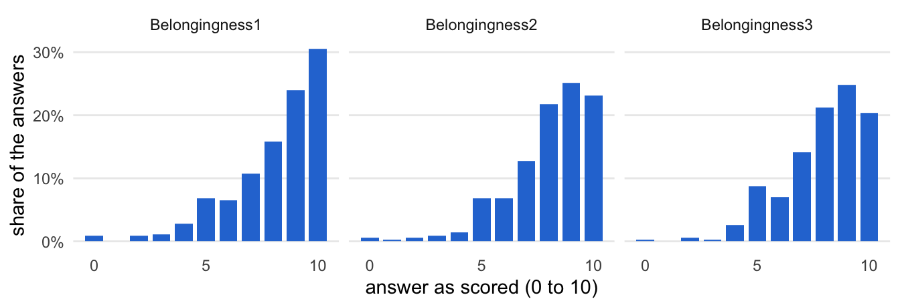
The answers sit high (means 7.94 to 8.12) and are skewed to the left; item 1 reached 10 most often (31 %).
Step 3 · How the items hang together
Which items go together?
t0 |>
select(num_range("Belongingness", 1:3)) |>
plot_correlations()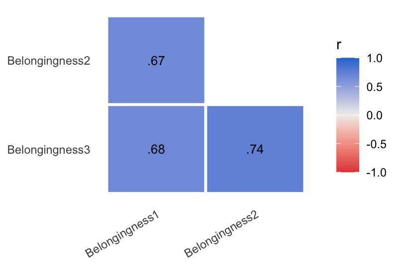
t0 |>
select(num_range("Belongingness", 1:3)) |>
principal_components(n = 1) |>
check_itemscale()# Description of (Sub-)ScalesComponent 1
Item | Missings | Mean | SD | Skewness | Difficulty
---------------------------------------------------------------
Belongingness1 | 0.01 | 8.12 | 2.00 | -1.33 | 0.81
Belongingness2 | 0.01 | 8.05 | 1.83 | -1.32 | 0.81
Belongingness3 | 0.01 | 7.94 | 1.77 | -0.95 | 0.79
Item | Discrimination | alpha if deleted
--------------------------------------------------
Belongingness1 | 0.72 | 0.85
Belongingness2 | 0.77 | 0.80
Belongingness3 | 0.78 | 0.80
Mean inter-item-correlation = 0.695 Cronbach's alpha = 0.870The three items correlate strongly (.67 to .74), and α (.87) would drop without any of them.
Step 4 · One factor at T0
What does the model look like? With three items, one factor with free loadings is just identified: it has as many parameters as the items have variances and covariances to reproduce:
bel_full <- t0 |>
cfa(model = "
Belongingness =~ Belongingness1 + Belongingness2 + Belongingness3
",
data = _, estimator = "MLR", missing = "fiml.x")bel_full |>
cfaPlot("Belongingness, all items (T0)")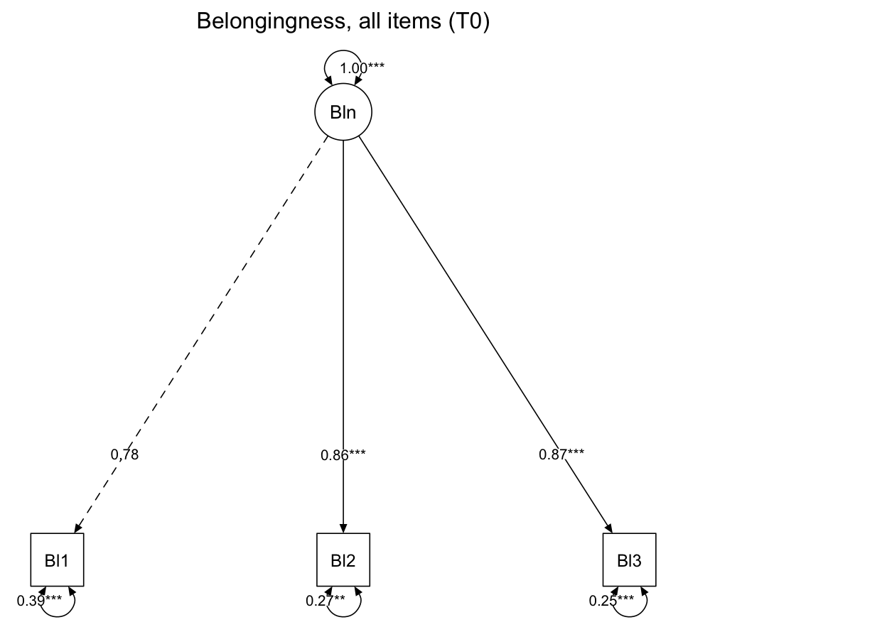
standardizedSolution(bel_full) |>
filter(op == "=~") |>
select(item = rhs, loading = est.std, se, pvalue) |>
mutate(across(where(is.double), \(x) round(x, 3)))| item | loading | se | pvalue |
|---|---|---|---|
| Belongingness1 | 0.782 | 0.038 | 0 |
| Belongingness2 | 0.856 | 0.052 | 0 |
| Belongingness3 | 0.868 | 0.034 | 0 |
Like the two-item models, it has no degrees of freedom left (df = 0), and its fit is perfect by construction. The loadings are all strong, from .78 (item 1) to .87.
Step 5 · Where it strains
Is there anything to test? Not with three items: without degrees of freedom there are no modification indices.
Step 6 · The decision
Is the model kept? Yes, with all three items.
Step 7 · The decision in both groups
Would each group alone have led to the same model? Before the training both groups are untrained, so the January questionnaires of both settle the model together. Each group on its own should show the same pattern. All three items, in each group:
# the model of Step 4, in each group's January questionnaires
bel_full_groups <- t0_groups |>
map(\(group) update(bel_full, data = group))
bel_full_groups |>
map(\(fit) standardizedSolution(fit) |>
filter(op == "=~") |>
select(item = rhs, loading = est.std)) |>
list_rbind(names_to = "group") |>
pivot_wider(names_from = group, values_from = loading) |>
mutate(across(where(is.double), \(x) round(x, 2)))| item | Control | Experimental |
|---|---|---|
| Belongingness1 | 0.82 | 0.74 |
| Belongingness2 | 0.78 | 0.95 |
| Belongingness3 | 0.92 | 0.82 |
In neither group does an item load below .40, as in all persons.
Is the model possible in each group?
bel_full_groups |>
map(fit_table) |>
list_rbind(names_to = "group")| group | admissible | ChiSq | df | p | CFI | TLI | RMSEA | SRMR |
|---|---|---|---|---|---|---|---|---|
| Control | TRUE | 0 | 0 | NA | 1 | 1 | 0 | 0 |
| Experimental | TRUE | 0 | 0 | NA | 1 | 1 | 0 | 0 |
Its solution is possible in both groups; with no degrees of freedom left, it fits by construction.
Control group
The control group, trained between September and December.
Step 8 · The four waves
Does the final model hold over the year? The model at each wave of the group:
bel_con_waves <- control_waves |>
map(\(wave) update(bel_full, data = wave))
bel_con_waves |>
map(\(fit) bind_cols(persons = lavInspect(fit, "nobs"),
fit_table(fit))) |>
list_rbind(names_to = "wave")| wave | persons | admissible | ChiSq | df | p | CFI | TLI | RMSEA | SRMR |
|---|---|---|---|---|---|---|---|---|---|
| T0 | 178 | TRUE | 0 | 0 | NA | 1 | 1 | 0 | 0 |
| T1 | 146 | TRUE | 0 | 0 | NA | 1 | 1 | 0 | 0 |
| T2 | 165 | TRUE | 0 | 0 | NA | 1 | 1 | 0 | 0 |
| T3 | 142 | TRUE | 0 | 0 | NA | 1 | 1 | 0 | 0 |
bel_con_waves |>
map(reliability_check) |>
list_rbind(names_to = "wave")| wave | alpha | omega | AVE | min_load | max_load |
|---|---|---|---|---|---|
| T0 | 0.877 | 0.878 | 0.707 | 0.783 | 0.915 |
| T1 | 0.920 | 0.921 | 0.795 | 0.859 | 0.929 |
| T2 | 0.924 | 0.925 | 0.804 | 0.871 | 0.922 |
| T3 | 0.933 | 0.935 | 0.827 | 0.803 | 0.973 |
plot_loadings_waves(bel_con_waves)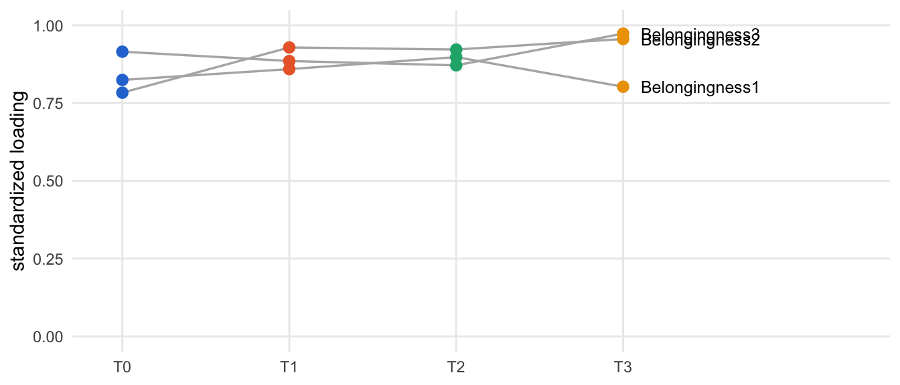
The model is possible at every wave. With no degrees of freedom left, it fits by construction; what can change are its loadings and its reliability: ω lies between .88 and .94, and every item loads at least .78.
Experimental group
The experimental group, trained between January and March; in September and December it holds the fewest questionnaires of the study.
Step 8 · The four waves
Does the final model hold over the year? The model at each wave of the group:
bel_exp_waves <- experimental_waves |>
map(\(wave) update(bel_full, data = wave))
bel_exp_waves |>
map(\(fit) bind_cols(persons = lavInspect(fit, "nobs"),
fit_table(fit))) |>
list_rbind(names_to = "wave")| wave | persons | admissible | ChiSq | df | p | CFI | TLI | RMSEA | SRMR |
|---|---|---|---|---|---|---|---|---|---|
| T0 | 180 | TRUE | 0 | 0 | NA | 1 | 1 | 0 | 0 |
| T1 | 156 | TRUE | 0 | 0 | NA | NA | NA | 0 | 0 |
| T2 | 103 | TRUE | 0 | 0 | NA | 1 | 1 | 0 | 0 |
| T3 | 69 | FALSE | 0 | 0 | NA | 1 | 1 | 0 | 0 |
bel_exp_waves |>
map(reliability_check) |>
list_rbind(names_to = "wave")| wave | alpha | omega | AVE | min_load | max_load |
|---|---|---|---|---|---|
| T0 | 0.865 | 0.867 | 0.686 | 0.736 | 0.948 |
| T1 | 0.870 | 0.873 | 0.698 | 0.719 | 0.950 |
| T2 | 0.861 | 0.862 | 0.676 | 0.805 | 0.849 |
| T3 | 0.892 | 0.897 | 0.746 | 0.732 | 1.036 |
plot_loadings_waves(bel_exp_waves)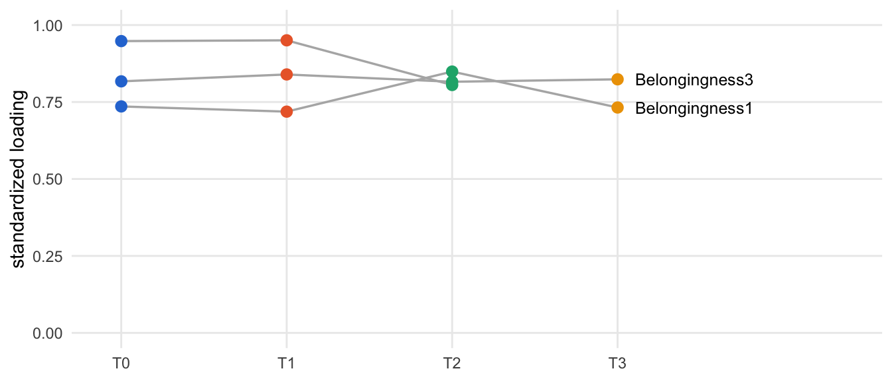
The model is not possible at T3, with 69 questionnaires: a residual variance turns negative. Chapter 7, which takes all four waves of the group at once, settles such a case by its stop rule. At the other waves it fits by construction, with no degrees of freedom left; what can change are its loadings and its reliability: ω lies between .86 and .87, and every item loads at least .72.
Step 9 · What follows
In short:
- T0, both groups: no item loads below .40, as in all persons; the final model is possible in each.
- Control group, four waves: possible at every wave; saturated, so no fit to judge.
- Experimental group, four waves: not possible at T3; saturated, so no fit to judge.
- Reliability: ω between .86 and .94.
- Chapter 7: the same over the four waves and in both groups, with estimates outside their range set at 0 (adjustment A).
Where does the construct go from here? All three items form its score (Chapter 2) and its latent factor in Chapters 7, 8 and 11.
No Alienation
Step 1 · The items
Which items measure it?
item_wording |>
filter(item %in% scale_items$NoAlienation) |>
mutate(reversed = item %in% reverse_keyed)| item | text | reversed |
|---|---|---|
| NoAlienation1 | Nowadays things are so confusing that you sometimes do not know where you stand. | TRUE |
| NoAlienation2 | Nowadays things are so complex that you sometimes do not know what is going on. | TRUE |
Two statements of alienation, asked as agreement and turned around for the analysis (reversed), so that a high value means no alienation.
Step 2 · The answers
How are the answers distributed in January?
t0 |>
describe(num_range("NoAlienation", 1:2))
Descriptive Statistics
----------------------
--------------------------------------------------------------------------
Variable Mean Median SD Range IQR Skewness N Missing
--------------------------------------------------------------------------
NoAlienation1 4.749 4.000 3.238 10.000 6.000 0.227 358 0
NoAlienation2 4.748 5.000 3.141 10.000 6.000 0.203 357 1
--------------------------------------------------------------------------t0 |>
select(num_range("NoAlienation", 1:2)) |>
plot_answers()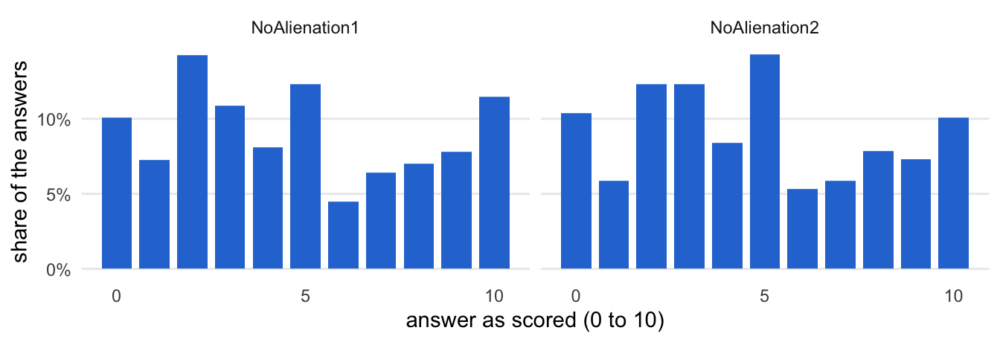
Turned around, both items centre in the middle of the scale (means 4.75 and 4.75) and spread over all of it (SD above 3): respondents differ widely in how lost they feel in a confusing, complex world.
Step 3 · How the items hang together
Do the two items agree?
t0 |>
select(num_range("NoAlienation", 1:2)) |>
cor(use = "pairwise.complete.obs") |>
round(3) NoAlienation1 NoAlienation2
NoAlienation1 1.000 0.834
NoAlienation2 0.834 1.000The two items nearly coincide (r = .83); they are worded almost alike.
Step 4 · One factor at T0
What does the model look like? Two items cannot identify a factor with free loadings, so both loadings are held equal (tau-equivalent) and the factor variance is set to 1:
noalien_full <- t0 |>
cfa(model = "
NoAlienation =~ NA*NoAlienation1 + L*NoAlienation1 + L*NoAlienation2
NoAlienation ~~ 1*NoAlienation
",
data = _, estimator = "MLR", missing = "fiml.x")noalien_full |>
cfaPlot("No Alienation, both items (T0)")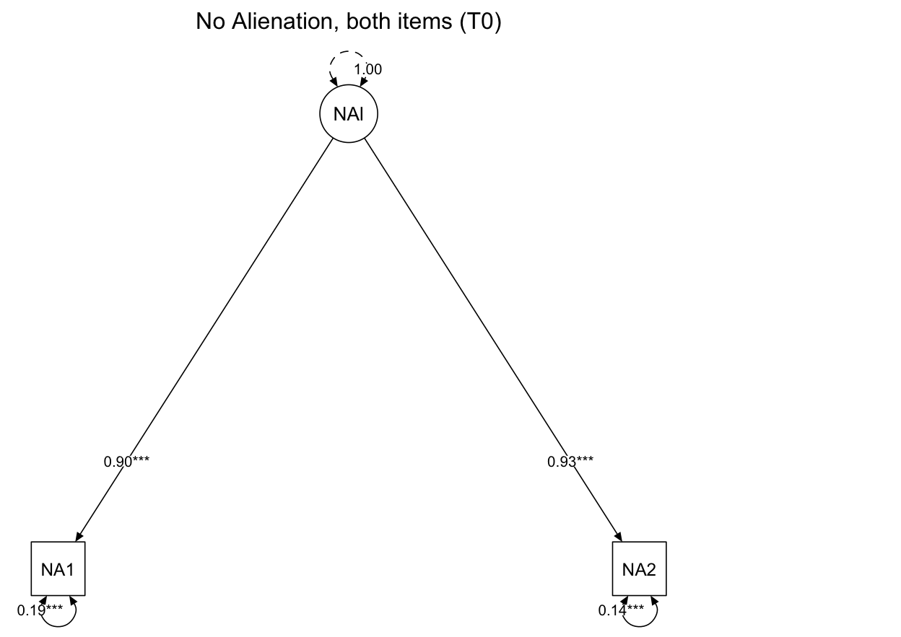
standardizedSolution(noalien_full) |>
filter(op == "=~") |>
select(item = rhs, loading = est.std, se, pvalue) |>
mutate(across(where(is.double), \(x) round(x, 3)))| item | loading | se | pvalue |
|---|---|---|---|
| NoAlienation1 | 0.900 | 0.018 | 0 |
| NoAlienation2 | 0.927 | 0.018 | 0 |
Again df = 0; both standardized loadings are high (.90 and .93).
Step 5 · Where it strains
Is there anything to test? Not with two items: without degrees of freedom there are no modification indices.
Step 6 · The decision
Is the model kept? Yes, with both items.
Step 7 · The decision in both groups
Would each group alone have led to the same model? Before the training both groups are untrained, so the January questionnaires of both settle the model together. Each group on its own should show the same pattern. Both items, in each group:
# the model of Step 4, in each group's January questionnaires
noalien_full_groups <- t0_groups |>
map(\(group) update(noalien_full, data = group))
noalien_full_groups |>
map(\(fit) standardizedSolution(fit) |>
filter(op == "=~") |>
select(item = rhs, loading = est.std)) |>
list_rbind(names_to = "group") |>
pivot_wider(names_from = group, values_from = loading) |>
mutate(across(where(is.double), \(x) round(x, 2)))| item | Control | Experimental |
|---|---|---|
| NoAlienation1 | 0.90 | 0.90 |
| NoAlienation2 | 0.94 | 0.91 |
In neither group does an item load below .40, as in all persons.
Is the model possible in each group?
noalien_full_groups |>
map(fit_table) |>
list_rbind(names_to = "group")| group | admissible | ChiSq | df | p | CFI | TLI | RMSEA | SRMR |
|---|---|---|---|---|---|---|---|---|
| Control | TRUE | 0 | 0 | NA | 1 | 1 | 0 | 0 |
| Experimental | TRUE | 0 | 0 | NA | 1 | 1 | 0 | 0 |
Its solution is possible in both groups; with no degrees of freedom left, it fits by construction.
Control group
The control group, trained between September and December.
Step 8 · The four waves
Does the final model hold over the year? The model at each wave of the group:
noalien_con_waves <- control_waves |>
map(\(wave) update(noalien_full, data = wave))
noalien_con_waves |>
map(\(fit) bind_cols(persons = lavInspect(fit, "nobs"),
fit_table(fit))) |>
list_rbind(names_to = "wave")| wave | persons | admissible | ChiSq | df | p | CFI | TLI | RMSEA | SRMR |
|---|---|---|---|---|---|---|---|---|---|
| T0 | 178 | TRUE | 0 | 0 | NA | 1 | 1 | 0 | 0 |
| T1 | 146 | TRUE | 0 | 0 | NA | 1 | 1 | 0 | 0 |
| T2 | 166 | TRUE | 0 | 0 | NA | 1 | 1 | 0 | 0 |
| T3 | 142 | TRUE | 0 | 0 | NA | NA | NA | 0 | 0 |
noalien_con_waves |>
map(reliability_check) |>
list_rbind(names_to = "wave")| wave | alpha | omega | AVE | min_load | max_load |
|---|---|---|---|---|---|
| T0 | 0.919 | 0.919 | 0.850 | 0.903 | 0.942 |
| T1 | 0.963 | 0.963 | 0.928 | 0.959 | 0.968 |
| T2 | 0.897 | 0.897 | 0.814 | 0.896 | 0.908 |
| T3 | 0.910 | 0.910 | 0.835 | 0.910 | 0.918 |
plot_loadings_waves(noalien_con_waves)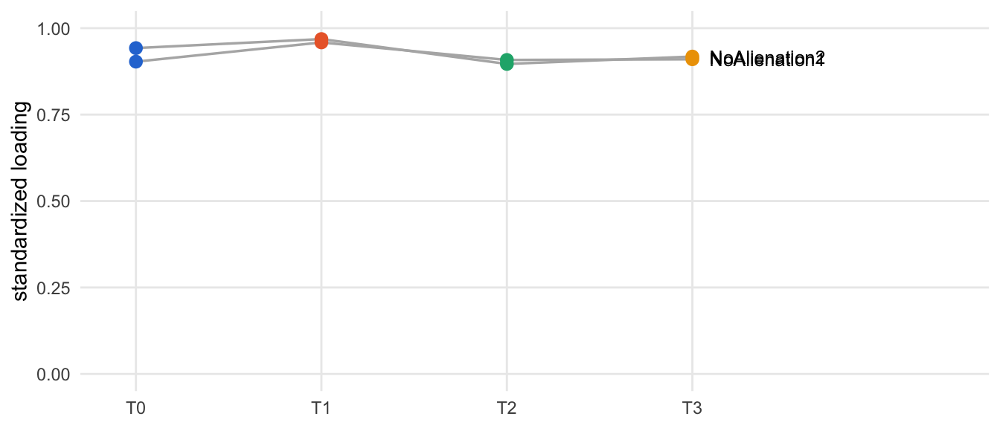
The model is possible at every wave. With no degrees of freedom left, it fits by construction; what can change are its loadings and its reliability: ω lies between .90 and .96, and every item loads at least .90.
Experimental group
The experimental group, trained between January and March; in September and December it holds the fewest questionnaires of the study.
Step 8 · The four waves
Does the final model hold over the year? The model at each wave of the group:
noalien_exp_waves <- experimental_waves |>
map(\(wave) update(noalien_full, data = wave))
noalien_exp_waves |>
map(\(fit) bind_cols(persons = lavInspect(fit, "nobs"),
fit_table(fit))) |>
list_rbind(names_to = "wave")| wave | persons | admissible | ChiSq | df | p | CFI | TLI | RMSEA | SRMR |
|---|---|---|---|---|---|---|---|---|---|
| T0 | 180 | TRUE | 0 | 0 | NA | 1 | 1 | 0 | 0 |
| T1 | 156 | TRUE | 0 | 0 | NA | 1 | 1 | 0 | 0 |
| T2 | 103 | TRUE | 0 | 0 | NA | 1 | 1 | 0 | 0 |
| T3 | 69 | TRUE | 0 | 0 | NA | 1 | 1 | 0 | 0 |
noalien_exp_waves |>
map(reliability_check) |>
list_rbind(names_to = "wave")| wave | alpha | omega | AVE | min_load | max_load |
|---|---|---|---|---|---|
| T0 | 0.900 | 0.900 | 0.818 | 0.897 | 0.912 |
| T1 | 0.916 | 0.916 | 0.845 | 0.909 | 0.930 |
| T2 | 0.920 | 0.920 | 0.852 | 0.890 | 0.960 |
| T3 | 0.963 | 0.963 | 0.929 | 0.954 | 0.974 |
plot_loadings_waves(noalien_exp_waves)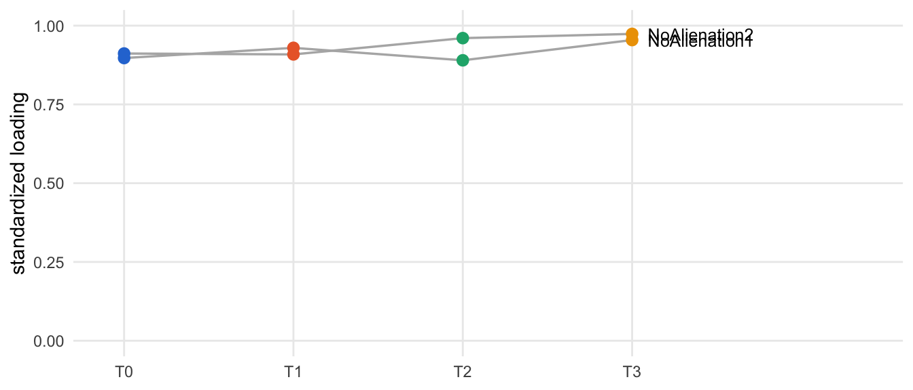
The model is possible at every wave. With no degrees of freedom left, it fits by construction; what can change are its loadings and its reliability: ω lies between .90 and .96, and every item loads at least .89.
Step 9 · What follows
In short:
- T0, both groups: no item loads below .40, as in all persons; the final model is possible in each.
- Control group, four waves: possible at every wave; saturated, so no fit to judge.
- Experimental group, four waves: possible at every wave; saturated, so no fit to judge.
- Reliability: ω between .90 and .96.
- Chapter 7: the same over the four waves and in both groups, with one autocorrelation per item over the waves (adjustment B).
Where does the construct go from here? Both items form its score (Chapter 2) and its latent factor in Chapters 7, 8 and 11.
No Isolation
Step 1 · The items
Which items measure it?
item_wording |>
filter(item %in% scale_items$NoIsolation) |>
mutate(reversed = item %in% reverse_keyed)| item | text | reversed |
|---|---|---|
| NoIsolation1 | Finding real friends is becoming more and more difficult nowadays. | TRUE |
| NoIsolation2 | Relationships are getting more and more unstable. | TRUE |
Two statements about friendships and relationships becoming harder, asked as agreement and turned around (reversed), so that a high value means no isolation.
Step 2 · The answers
How are the answers distributed in January?
t0 |>
describe(num_range("NoIsolation", 1:2))
Descriptive Statistics
----------------------
-------------------------------------------------------------------------
Variable Mean Median SD Range IQR Skewness N Missing
-------------------------------------------------------------------------
NoIsolation1 3.225 2.000 3.326 10.000 5.000 0.834 356 2
NoIsolation2 3.185 2.000 3.082 10.000 5.000 0.792 357 1
-------------------------------------------------------------------------t0 |>
select(num_range("NoIsolation", 1:2)) |>
plot_answers()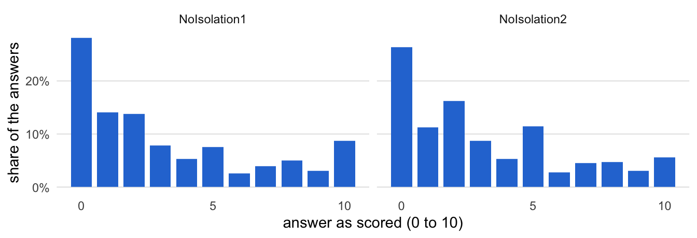
Turned around, the answers lean to the lower half (means 3.22 and 3.18, skewed to the right): most respondents agree that friendships and relationships are getting harder.
Step 3 · How the items hang together
Do the two items agree?
t0 |>
select(num_range("NoIsolation", 1:2)) |>
cor(use = "pairwise.complete.obs") |>
round(3) NoIsolation1 NoIsolation2
NoIsolation1 1.000 0.733
NoIsolation2 0.733 1.000The two items agree well (r = .73).
Step 4 · One factor at T0
What does the model look like? Two items cannot identify a factor with free loadings, so both loadings are held equal (tau-equivalent) and the factor variance is set to 1:
noiso_full <- t0 |>
cfa(model = "
NoIsolation =~ NA*NoIsolation1 + L*NoIsolation1 + L*NoIsolation2
NoIsolation ~~ 1*NoIsolation
",
data = _, estimator = "MLR", missing = "fiml.x")noiso_full |>
cfaPlot("No Isolation, both items (T0)")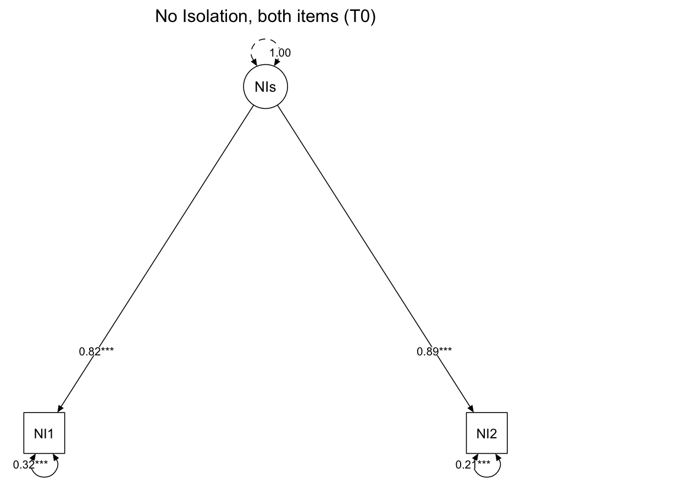
standardizedSolution(noiso_full) |>
filter(op == "=~") |>
select(item = rhs, loading = est.std, se, pvalue) |>
mutate(across(where(is.double), \(x) round(x, 3)))| item | loading | se | pvalue |
|---|---|---|---|
| NoIsolation1 | 0.824 | 0.026 | 0 |
| NoIsolation2 | 0.890 | 0.025 | 0 |
Again df = 0; the standardized loadings are .82 and .89.
Step 5 · Where it strains
Is there anything to test? Not with two items: without degrees of freedom there are no modification indices.
Step 6 · The decision
Is the model kept? Yes, with both items.
Step 7 · The decision in both groups
Would each group alone have led to the same model? Before the training both groups are untrained, so the January questionnaires of both settle the model together. Each group on its own should show the same pattern. Both items, in each group:
# the model of Step 4, in each group's January questionnaires
noiso_full_groups <- t0_groups |>
map(\(group) update(noiso_full, data = group))
noiso_full_groups |>
map(\(fit) standardizedSolution(fit) |>
filter(op == "=~") |>
select(item = rhs, loading = est.std)) |>
list_rbind(names_to = "group") |>
pivot_wider(names_from = group, values_from = loading) |>
mutate(across(where(is.double), \(x) round(x, 2)))| item | Control | Experimental |
|---|---|---|
| NoIsolation1 | 0.84 | 0.81 |
| NoIsolation2 | 0.91 | 0.87 |
In neither group does an item load below .40, as in all persons.
Is the model possible in each group?
noiso_full_groups |>
map(fit_table) |>
list_rbind(names_to = "group")| group | admissible | ChiSq | df | p | CFI | TLI | RMSEA | SRMR |
|---|---|---|---|---|---|---|---|---|
| Control | TRUE | 0 | 0 | NA | 1 | 1 | 0 | 0 |
| Experimental | TRUE | 0 | 0 | NA | 1 | 1 | 0 | 0 |
Its solution is possible in both groups; with no degrees of freedom left, it fits by construction.
Control group
The control group, trained between September and December.
Step 8 · The four waves
Does the final model hold over the year? The model at each wave of the group:
noiso_con_waves <- control_waves |>
map(\(wave) update(noiso_full, data = wave))
noiso_con_waves |>
map(\(fit) bind_cols(persons = lavInspect(fit, "nobs"),
fit_table(fit))) |>
list_rbind(names_to = "wave")| wave | persons | admissible | ChiSq | df | p | CFI | TLI | RMSEA | SRMR |
|---|---|---|---|---|---|---|---|---|---|
| T0 | 177 | TRUE | 0 | 0 | NA | 1 | 1 | 0 | 0 |
| T1 | 146 | TRUE | 0 | 0 | NA | 1 | 1 | 0 | 0 |
| T2 | 166 | TRUE | 0 | 0 | NA | 1 | 1 | 0 | 0 |
| T3 | 142 | TRUE | 0 | 0 | NA | 1 | 1 | 0 | 0 |
noiso_con_waves |>
map(reliability_check) |>
list_rbind(names_to = "wave")| wave | alpha | omega | AVE | min_load | max_load |
|---|---|---|---|---|---|
| T0 | 0.862 | 0.862 | 0.757 | 0.837 | 0.907 |
| T1 | 0.849 | 0.849 | 0.738 | 0.814 | 0.912 |
| T2 | 0.856 | 0.856 | 0.748 | 0.838 | 0.895 |
| T3 | 0.851 | 0.851 | 0.741 | 0.831 | 0.895 |
plot_loadings_waves(noiso_con_waves)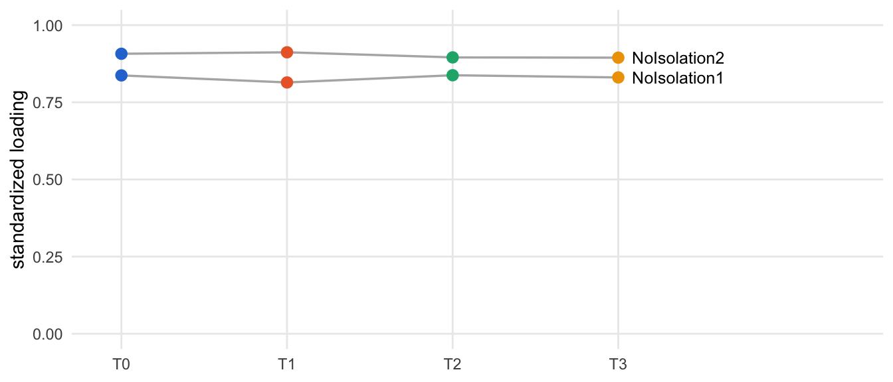
The model is possible at every wave. With no degrees of freedom left, it fits by construction; what can change are its loadings and its reliability: ω lies between .85 and .86, and every item loads at least .81.
Experimental group
The experimental group, trained between January and March; in September and December it holds the fewest questionnaires of the study.
Step 8 · The four waves
Does the final model hold over the year? The model at each wave of the group:
noiso_exp_waves <- experimental_waves |>
map(\(wave) update(noiso_full, data = wave))
noiso_exp_waves |>
map(\(fit) bind_cols(persons = lavInspect(fit, "nobs"),
fit_table(fit))) |>
list_rbind(names_to = "wave")| wave | persons | admissible | ChiSq | df | p | CFI | TLI | RMSEA | SRMR |
|---|---|---|---|---|---|---|---|---|---|
| T0 | 180 | TRUE | 0 | 0 | NA | 1 | 1 | 0 | 0 |
| T1 | 156 | TRUE | 0 | 0 | NA | 1 | 1 | 0 | 0 |
| T2 | 103 | TRUE | 0 | 0 | NA | 1 | 1 | 0 | 0 |
| T3 | 69 | TRUE | 0 | 0 | NA | 1 | 1 | 0 | 0 |
noiso_exp_waves |>
map(reliability_check) |>
list_rbind(names_to = "wave")| wave | alpha | omega | AVE | min_load | max_load |
|---|---|---|---|---|---|
| T0 | 0.828 | 0.828 | 0.706 | 0.812 | 0.872 |
| T1 | 0.860 | 0.860 | 0.755 | 0.834 | 0.908 |
| T2 | 0.864 | 0.864 | 0.761 | 0.853 | 0.892 |
| T3 | 0.747 | 0.747 | 0.596 | 0.737 | 0.813 |
plot_loadings_waves(noiso_exp_waves)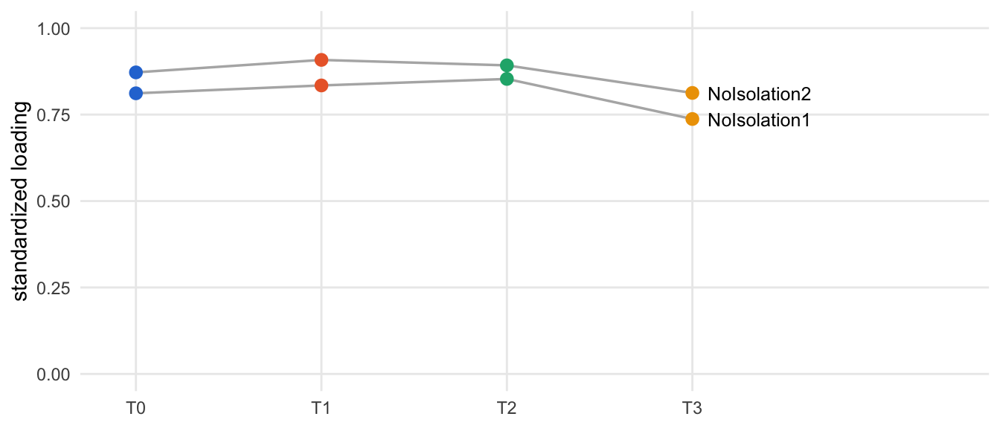
The model is possible at every wave. With no degrees of freedom left, it fits by construction; what can change are its loadings and its reliability: ω lies between .75 and .86, and every item loads at least .74.
Step 9 · What follows
In short:
- T0, both groups: no item loads below .40, as in all persons; the final model is possible in each.
- Control group, four waves: possible at every wave; saturated, so no fit to judge.
- Experimental group, four waves: possible at every wave; saturated, so no fit to judge.
- Reliability: ω between .75 and .86.
- Chapter 7: the same over the four waves and in both groups.
Where does the construct go from here? Both items form its score (Chapter 2) and its latent factor in Chapters 7, 8 and 11.
6.4 Cognitive complexity (H2)
Which constructs? The five scales of the second hypothesis. All five need a revision at T0.
Rogerian Schema
Step 1 · The items
Which items measure it? Nine items that complete a statement about listening in a conversation; items 7 to 9 describe what listening costs and were turned around for the analysis:
item_wording |>
filter(item %in% scale_items$Rogerian) |>
mutate(reversed = item %in% reverse_keyed)| item | text | reversed |
|---|---|---|
| Rogerian1 | gains insight into the speaker’s perspective. | FALSE |
| Rogerian2 | achieves a clear understanding of the speaker’s arguments. | FALSE |
| Rogerian3 | comprehends the speaker’s attitudes, feelings, and perceptions. | FALSE |
| Rogerian4 | facilitates a process that generates new knowledge. | FALSE |
| Rogerian5 | enhances joint creativity. | FALSE |
| Rogerian6 | helps solve disagreements. | FALSE |
| Rogerian7 | interferes with productivity. | TRUE |
| Rogerian8 | makes other people feel uncomfortable. | TRUE |
| Rogerian9 | sometimes derails the team’s work process. | TRUE |
Step 2 · The answers
How are the answers distributed in January?
t0 |>
describe(num_range("Rogerian", 1:9))
Descriptive Statistics
----------------------
----------------------------------------------------------------------
Variable Mean Median SD Range IQR Skewness N Missing
----------------------------------------------------------------------
Rogerian1 8.939 9.000 1.558 10.000 2.000 -2.520 358 0
Rogerian2 8.711 9.000 1.661 10.000 2.000 -2.030 356 2
Rogerian3 8.734 9.000 1.614 10.000 2.000 -1.788 353 5
Rogerian4 8.705 9.000 1.598 10.000 2.000 -1.706 353 5
Rogerian5 8.527 9.000 1.741 10.000 2.000 -1.645 355 3
Rogerian6 8.655 9.000 1.695 10.000 2.000 -1.796 357 1
Rogerian7 8.411 10.000 2.542 10.000 2.000 -1.749 355 3
Rogerian8 8.863 10.000 2.212 10.000 1.000 -2.532 357 1
Rogerian9 8.582 10.000 2.379 10.000 2.000 -2.039 354 4
----------------------------------------------------------------------t0 |>
select(num_range("Rogerian", 1:9)) |>
plot_answers()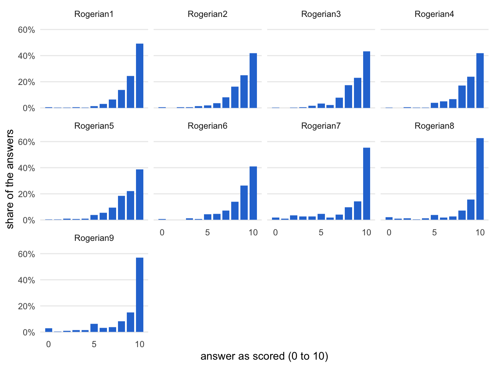
The answers pile up at the top: between 39 % and 63 % answered 10, and every item is skewed to the left. The reverse-keyed items 7 to 9, once turned, reach the top most often.
Step 3 · How the items hang together
Which items go together?
t0 |>
select(num_range("Rogerian", 1:9)) |>
plot_correlations()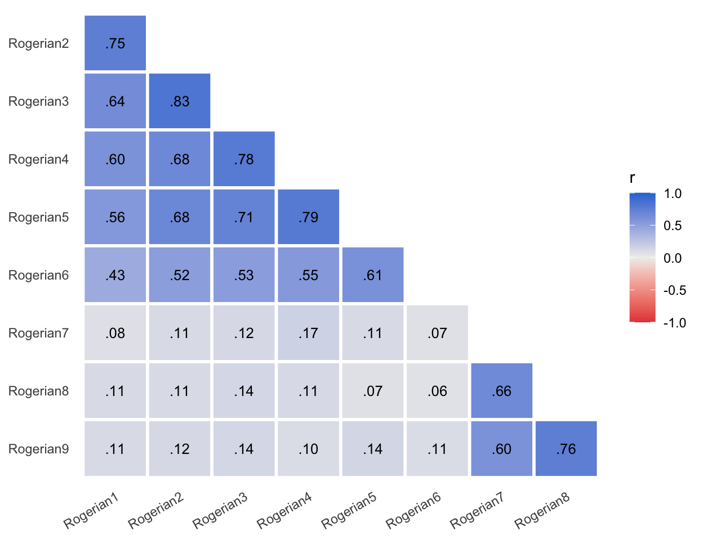
t0 |>
select(num_range("Rogerian", 1:9)) |>
principal_components(n = 1) |>
check_itemscale()# Description of (Sub-)ScalesComponent 1
Item | Missings | Mean | SD | Skewness | Difficulty | Discrimination | alpha if deleted
----------------------------------------------------------------------------------------------
Rogerian1 | 0.00 | 8.94 | 1.56 | -2.52 | 0.89 | 0.56 | 0.80
Rogerian2 | 0.01 | 8.71 | 1.66 | -2.03 | 0.87 | 0.65 | 0.79
Rogerian3 | 0.01 | 8.73 | 1.61 | -1.79 | 0.87 | 0.67 | 0.79
Rogerian4 | 0.01 | 8.71 | 1.60 | -1.71 | 0.87 | 0.66 | 0.79
Rogerian5 | 0.01 | 8.53 | 1.74 | -1.65 | 0.85 | 0.62 | 0.79
Rogerian6 | 0.00 | 8.66 | 1.69 | -1.80 | 0.87 | 0.47 | 0.81
Rogerian7 | 0.01 | 8.41 | 2.54 | -1.75 | 0.84 | 0.39 | 0.83
Rogerian8 | 0.00 | 8.86 | 2.21 | -2.53 | 0.89 | 0.45 | 0.81
Rogerian9 | 0.01 | 8.58 | 2.38 | -2.04 | 0.86 | 0.45 | 0.82
Mean inter-item-correlation = 0.378 Cronbach's alpha = 0.822The heat map shows two blocks. Items 1 to 6 correlate strongly with each other; items 7 to 9 correlate strongly with each other but hardly with the first six (at most .17). The reverse-keyed items measure something of their own.
Step 4 · One factor at T0
How well does one factor on all nine items fit?
rog_full <- t0 |>
cfa(model = "
Rogerian =~ Rogerian1 + Rogerian2 + Rogerian3 + Rogerian4 + Rogerian5 +
Rogerian6 + Rogerian7 + Rogerian8 + Rogerian9
",
data = _, estimator = "MLR", missing = "fiml.x")rog_full |>
cfaPlot("Rogerian Schema, all items (T0)")standardizedSolution(rog_full) |>
filter(op == "=~") |>
select(item = rhs, loading = est.std, se, pvalue) |>
mutate(across(where(is.double), \(x) round(x, 3)))| item | loading | se | pvalue |
|---|---|---|---|
| Rogerian1 | 0.741 | 0.054 | 0.000 |
| Rogerian2 | 0.875 | 0.031 | 0.000 |
| Rogerian3 | 0.908 | 0.022 | 0.000 |
| Rogerian4 | 0.850 | 0.032 | 0.000 |
| Rogerian5 | 0.819 | 0.037 | 0.000 |
| Rogerian6 | 0.621 | 0.080 | 0.000 |
| Rogerian7 | 0.151 | 0.061 | 0.013 |
| Rogerian8 | 0.139 | 0.064 | 0.029 |
| Rogerian9 | 0.160 | 0.061 | 0.008 |
The model fails (CFI = .695, RMSEA = .259): the factor is carried by items 1 to 6, while items 7 to 9 load at most .16.
Step 5 · Where it strains
Which pairs share more than the factor explains? The modification indices of 10 and more:
modindices(rog_full, sort. = TRUE, minimum.value = 10) |>
select(lhs, op, rhs, mi, epc = sepc.all) |>
mutate(across(where(is.double), \(x) round(x, 3)))| lhs | op | rhs | mi | epc | |
|---|---|---|---|---|---|
| 65 | Rogerian8 | ~~ | Rogerian9 | 200.905 | 0.755 |
| 63 | Rogerian7 | ~~ | Rogerian8 | 141.524 | 0.632 |
| 64 | Rogerian7 | ~~ | Rogerian9 | 119.354 | 0.583 |
| 30 | Rogerian1 | ~~ | Rogerian2 | 60.686 | 0.519 |
| 39 | Rogerian2 | ~~ | Rogerian4 | 52.558 | -0.559 |
| 51 | Rogerian4 | ~~ | Rogerian5 | 47.888 | 0.475 |
| 38 | Rogerian2 | ~~ | Rogerian3 | 26.346 | 0.493 |
| 56 | Rogerian5 | ~~ | Rogerian6 | 23.048 | 0.285 |
| 40 | Rogerian2 | ~~ | Rogerian5 | 11.484 | -0.245 |
| 46 | Rogerian3 | ~~ | Rogerian5 | 11.290 | -0.274 |
The three largest MIs all join items 7 to 9: the second block of the heat map, seen from the model.
Step 6 · The decision
What changes? Three steps, each refitted before the next.
Items 7 to 9 leave. They load below .40 and share their variance among themselves; they describe a cost of listening rather than its benefit:
rog_1_6 <- t0 |>
cfa(model = "
Rogerian =~ Rogerian1 + Rogerian2 + Rogerian3 + Rogerian4 + Rogerian5 +
Rogerian6
",
data = _, estimator = "MLR", missing = "fiml.x")
modindices(rog_1_6, sort. = TRUE, minimum.value = 10) |>
select(lhs, op, rhs, mi, epc = sepc.all) |>
mutate(across(where(is.double), \(x) round(x, 3)))| lhs | op | rhs | mi | epc | |
|---|---|---|---|---|---|
| 21 | Rogerian1 | ~~ | Rogerian2 | 60.462 | 0.520 |
| 27 | Rogerian2 | ~~ | Rogerian4 | 53.228 | -0.565 |
| 33 | Rogerian4 | ~~ | Rogerian5 | 47.719 | 0.474 |
| 26 | Rogerian2 | ~~ | Rogerian3 | 25.267 | 0.488 |
| 35 | Rogerian5 | ~~ | Rogerian6 | 22.851 | 0.284 |
| 28 | Rogerian2 | ~~ | Rogerian5 | 12.161 | -0.253 |
| 31 | Rogerian3 | ~~ | Rogerian5 | 11.682 | -0.280 |
Item 2 leaves. Among the six remaining items it takes part in the two largest MIs, with item 1 and with item 4. Its wording nearly repeats items 1 and 3:
item_wording |>
filter(item %in% str_c("Rogerian", c(1, 2, 3)))| item | text |
|---|---|
| Rogerian1 | gains insight into the speaker’s perspective. |
| Rogerian2 | achieves a clear understanding of the speaker’s arguments. |
| Rogerian3 | comprehends the speaker’s attitudes, feelings, and perceptions. |
rog_without_2 <- t0 |>
cfa(model = "
Rogerian =~ Rogerian1 + Rogerian3 + Rogerian4 + Rogerian5 + Rogerian6
",
data = _, estimator = "MLR", missing = "fiml.x")
standardizedSolution(rog_without_2) |>
filter(op == "=~") |>
select(item = rhs, loading = est.std) |>
mutate(across(where(is.double), \(x) round(x, 3)))| item | loading |
|---|---|
| Rogerian1 | 0.683 |
| Rogerian3 | 0.864 |
| Rogerian4 | 0.902 |
| Rogerian5 | 0.858 |
| Rogerian6 | 0.639 |
modindices(rog_without_2, sort. = TRUE, minimum.value = 10) |>
select(lhs, op, rhs, mi, epc = sepc.all) |>
mutate(across(where(is.double), \(x) round(x, 3)))| lhs | op | rhs | mi | epc | |
|---|---|---|---|---|---|
| 27 | Rogerian5 | ~~ | Rogerian6 | 13.885 | 0.246 |
| 18 | Rogerian1 | ~~ | Rogerian3 | 12.065 | 0.238 |
Item 6 leaves. It is now the weakest item and shares residual variance with item 5. The final model keeps items 1, 3, 4 and 5:
rog_final <- t0 |>
cfa(model = "
Rogerian =~ Rogerian1 + Rogerian3 + Rogerian4 + Rogerian5
",
data = _, estimator = "MLR", missing = "fiml.x")rog_final |>
cfaPlot("Rogerian Schema, final model (T0)")How much does each step improve the fit?
list(`all items` = rog_full,
`items 1 to 6` = rog_1_6,
`without item 2` = rog_without_2,
final = rog_final) |>
map(fit_table) |>
list_rbind(names_to = "model")| model | admissible | ChiSq | df | p | CFI | TLI | RMSEA | SRMR |
|---|---|---|---|---|---|---|---|---|
| all items | TRUE | 365.23 | 27 | 0.000 | 0.695 | 0.593 | 0.259 | 0.158 |
| items 1 to 6 | TRUE | 59.05 | 9 | 0.000 | 0.919 | 0.865 | 0.200 | 0.041 |
| without item 2 | TRUE | 9.25 | 5 | 0.099 | 0.989 | 0.978 | 0.081 | 0.022 |
| final | TRUE | 3.54 | 2 | 0.170 | 0.995 | 0.984 | 0.082 | 0.017 |
Each step raises the CFI, from .695 to .919, .989 and .995.
What remains? The modification indices of 10 and more in the final model:
modindices(rog_final, sort. = TRUE, minimum.value = 10) |>
select(lhs, op, rhs, mi, epc = sepc.all) |>
mutate(across(where(is.double), \(x) round(x, 3)))| lhs | op | rhs | mi | epc | |
|---|---|---|---|---|---|
| 20 | Rogerian4 | ~~ | Rogerian5 | 11.875 | 0.523 |
| 15 | Rogerian1 | ~~ | Rogerian3 | 11.875 | 0.247 |
Two equal MIs just above 10 remain (11.9). With four items they are two views of one small misfit, items 1 and 3 against items 4 and 5; they stay fixed, as the model meets the criteria.
Step 7 · The decision in both groups
Would each group alone have led to the same model? Before the training both groups are untrained, so the January questionnaires of both settle the model together. Each group on its own should show the same pattern. All nine items, in each group:
# the model of Step 4, in each group's January questionnaires
rog_full_groups <- t0_groups |>
map(\(group) update(rog_full, data = group))
rog_full_groups |>
map(\(fit) standardizedSolution(fit) |>
filter(op == "=~") |>
select(item = rhs, loading = est.std)) |>
list_rbind(names_to = "group") |>
pivot_wider(names_from = group, values_from = loading) |>
mutate(across(where(is.double), \(x) round(x, 2)))| item | Control | Experimental |
|---|---|---|
| Rogerian1 | 0.84 | 0.61 |
| Rogerian2 | 0.93 | 0.80 |
| Rogerian3 | 0.93 | 0.89 |
| Rogerian4 | 0.86 | 0.85 |
| Rogerian5 | 0.87 | 0.75 |
| Rogerian6 | 0.66 | 0.58 |
| Rogerian7 | 0.06 | 0.25 |
| Rogerian8 | 0.04 | 0.27 |
| Rogerian9 | 0.03 | 0.33 |
Where does the model strain in each group? The three largest modification indices:
rog_full_groups |>
map(\(fit) modindices(fit, sort. = TRUE) |>
slice_head(n = 3) |>
select(lhs, op, rhs, mi)) |>
list_rbind(names_to = "group") |>
mutate(mi = round(mi, 1))| group | lhs | op | rhs | mi |
|---|---|---|---|---|
| Control | Rogerian8 | ~~ | Rogerian9 | 117.7 |
| Control | Rogerian7 | ~~ | Rogerian8 | 98.3 |
| Control | Rogerian7 | ~~ | Rogerian9 | 93.7 |
| Experimental | Rogerian8 | ~~ | Rogerian9 | 78.8 |
| Experimental | Rogerian7 | ~~ | Rogerian8 | 44.2 |
| Experimental | Rogerian7 | ~~ | Rogerian9 | 28.5 |
Both groups show the pattern of all persons: items 7, 8 and 9 load below .40 in each, and the largest modification index joins items 8 and 9 in both.
Does the final model hold in each group?
rog_final_groups <- t0_groups |>
map(\(group) update(rog_final, data = group))
rog_final_groups |>
map(fit_table) |>
list_rbind(names_to = "group")| group | admissible | ChiSq | df | p | CFI | TLI | RMSEA | SRMR |
|---|---|---|---|---|---|---|---|---|
| Control | TRUE | 7.35 | 2 | 0.025 | 0.981 | 0.944 | 0.176 | 0.019 |
| Experimental | TRUE | 2.02 | 2 | 0.365 | 1.000 | 1.014 | 0.000 | 0.020 |
It does, in both groups (CFI .981 and above): each group alone would have led to the same model.
Control group
The control group, trained between September and December.
Step 8 · The four waves
Does the final model hold over the year? The model at each wave of the group:
rog_con_waves <- control_waves |>
map(\(wave) update(rog_final, data = wave))
rog_con_waves |>
map(\(fit) bind_cols(persons = lavInspect(fit, "nobs"),
fit_table(fit))) |>
list_rbind(names_to = "wave")| wave | persons | admissible | ChiSq | df | p | CFI | TLI | RMSEA | SRMR |
|---|---|---|---|---|---|---|---|---|---|
| T0 | 178 | TRUE | 7.35 | 2 | 0.025 | 0.981 | 0.944 | 0.176 | 0.019 |
| T1 | 145 | TRUE | 1.80 | 2 | 0.406 | 1.000 | 1.004 | 0.000 | 0.018 |
| T2 | 165 | TRUE | NA | 2 | NA | 0.849 | 0.547 | 0.358 | 0.073 |
| T3 | 142 | TRUE | 10.52 | 2 | 0.005 | 0.941 | 0.823 | 0.280 | 0.037 |
rog_con_waves |>
map(reliability_check) |>
list_rbind(names_to = "wave")| wave | alpha | omega | AVE | min_load | max_load |
|---|---|---|---|---|---|
| T0 | 0.928 | 0.932 | 0.773 | 0.785 | 0.910 |
| T1 | 0.908 | 0.913 | 0.717 | 0.785 | 0.912 |
| T2 | 0.831 | 0.847 | 0.606 | 0.644 | 0.879 |
| T3 | 0.897 | 0.900 | 0.691 | 0.788 | 0.934 |
plot_loadings_waves(rog_con_waves)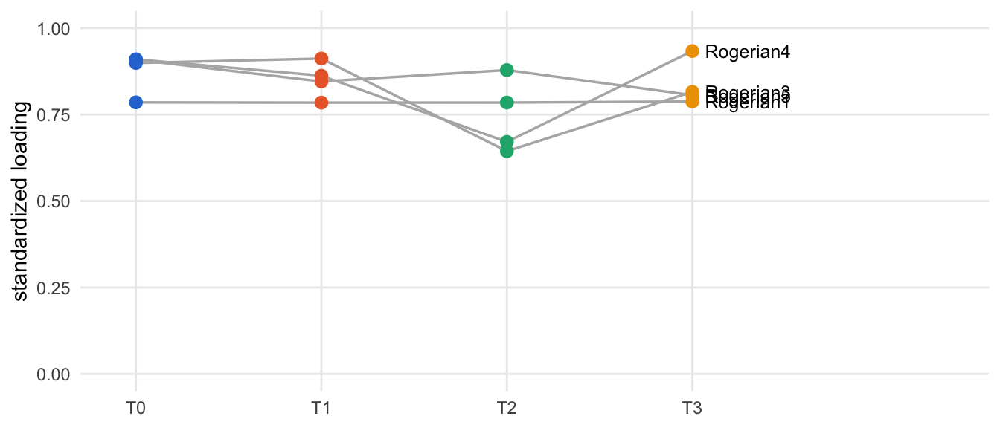
The model is possible at every wave. It falls short of the criteria of Step 5 at T0 through its RMSEA alone, which with two degrees of freedom overstates misfit (Kenny et al., 2015); at T2 and T3 through its CFI (.849 and .941). Where does it strain at T2?
modindices(rog_con_waves$T2, sort. = TRUE) |>
slice_head(n = 3) |>
select(lhs, op, rhs, mi, epc = sepc.all) |>
mutate(across(where(is.double), \(x) round(x, 3)))| lhs | op | rhs | mi | epc |
|---|---|---|---|---|
| Rogerian3 | ~~ | Rogerian4 | 38.712 | 0.591 |
| Rogerian1 | ~~ | Rogerian5 | 38.712 | 1.809 |
| Rogerian1 | ~~ | Rogerian4 | 29.281 | -0.676 |
The largest modification index joins items 3 and 4; with two degrees of freedom left, one misfit shows in several such pairs at once. ω lies between .85 and .93, and every item loads at least .64.
Experimental group
The experimental group, trained between January and March; in September and December it holds the fewest questionnaires of the study.
Step 8 · The four waves
Does the final model hold over the year? The model at each wave of the group:
rog_exp_waves <- experimental_waves |>
map(\(wave) update(rog_final, data = wave))
rog_exp_waves |>
map(\(fit) bind_cols(persons = lavInspect(fit, "nobs"),
fit_table(fit))) |>
list_rbind(names_to = "wave")| wave | persons | admissible | ChiSq | df | p | CFI | TLI | RMSEA | SRMR |
|---|---|---|---|---|---|---|---|---|---|
| T0 | 180 | TRUE | 2.02 | 2 | 0.365 | 1.000 | 1.014 | 0.000 | 0.020 |
| T1 | 156 | TRUE | 8.19 | 2 | 0.017 | 0.970 | 0.911 | 0.154 | 0.032 |
| T2 | 103 | TRUE | 32.53 | 2 | 0.000 | 0.895 | 0.685 | 0.385 | 0.055 |
| T3 | 69 | TRUE | 18.47 | 2 | 0.000 | 0.794 | 0.381 | 0.553 | 0.093 |
rog_exp_waves |>
map(reliability_check) |>
list_rbind(names_to = "wave")| wave | alpha | omega | AVE | min_load | max_load |
|---|---|---|---|---|---|
| T0 | 0.853 | 0.859 | 0.624 | 0.543 | 0.925 |
| T1 | 0.826 | 0.838 | 0.563 | 0.610 | 0.852 |
| T2 | 0.904 | 0.892 | 0.693 | 0.737 | 0.898 |
| T3 | 0.866 | 0.800 | 0.581 | 0.563 | 0.994 |
plot_loadings_waves(rog_exp_waves)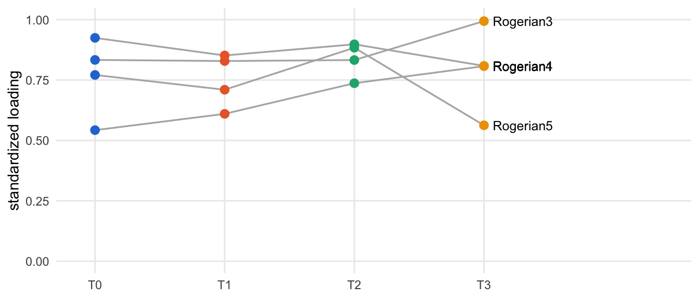
The model is possible at every wave. It falls short of the criteria of Step 5 at T1 through its RMSEA alone, which with two degrees of freedom overstates misfit (Kenny et al., 2015); at T2 and T3 through its CFI (.895 and .794). Where does it strain at T3?
modindices(rog_exp_waves$T3, sort. = TRUE) |>
slice_head(n = 3) |>
select(lhs, op, rhs, mi, epc = sepc.all) |>
mutate(across(where(is.double), \(x) round(x, 3)))| lhs | op | rhs | mi | epc |
|---|---|---|---|---|
| Rogerian4 | ~~ | Rogerian5 | 38.755 | 0.827 |
| Rogerian1 | ~~ | Rogerian3 | 38.755 | 11.038 |
| Rogerian3 | ~~ | Rogerian5 | 15.836 | -2.796 |
The largest modification index joins items 4 and 5; with two degrees of freedom left, one misfit shows in several such pairs at once. ω lies between .80 and .89, and every item loads at least .54.
Step 9 · What follows
In short:
- T0, both groups: the same items load below .40 as in all persons (7, 8 and 9); the final model fits in each (CFI .981 and above).
- Control group, four waves: possible at every wave; CFI below .95 at T2 and T3, RMSEA above .15 at T0.
- Experimental group, four waves: possible at every wave; CFI below .95 at T2 and T3, RMSEA above .15 at T1.
- Reliability: ω between .80 and .93.
- Chapter 7: the same over the four waves and in both groups, with estimates outside their range set at 0 (adjustment A).
Where does the construct go from here? The score of Chapter 2 keeps all nine items, as preregistered; the latent factor of Chapters 7, 8 and 11 rests on items 1, 3, 4 and 5.
Paradox Mindset
Step 1 · The items
Which items measure it? Nine statements about dealing with contradictions and conflicting demands; none is reverse-keyed:
item_wording |>
filter(item %in% scale_items$ParadoxMindset) |>
mutate(reversed = item %in% reverse_keyed)| item | text | reversed |
|---|---|---|
| ParadoxMindset1 | When I consider conflicting perspectives, I gain a better understanding of an issue. | FALSE |
| ParadoxMindset2 | I am comfortable dealing with conflicting demands at the same time. | FALSE |
| ParadoxMindset3 | Accepting contradictions is essential for my success. | FALSE |
| ParadoxMindset4 | Tension between ideas energizes me. | FALSE |
| ParadoxMindset5 | I enjoy it when I manage to pursue contradictory goals. | FALSE |
| ParadoxMindset6 | I often experience myself as simultaneously embracing conflicting demands. | FALSE |
| ParadoxMindset7 | I am comfortable working on tasks that contradict each other. | FALSE |
| ParadoxMindset8 | I feel uplifted when I realize that two opposites can be true. | FALSE |
| ParadoxMindset9 | I feel energized when I manage to address contradictory issues. | FALSE |
Step 2 · The answers
How are the answers distributed in January?
t0 |>
describe(num_range("ParadoxMindset", 1:9))
Descriptive Statistics
----------------------
----------------------------------------------------------------------------
Variable Mean Median SD Range IQR Skewness N Missing
----------------------------------------------------------------------------
ParadoxMindset1 8.073 9.000 2.053 10.000 3.000 -1.435 356 2
ParadoxMindset2 6.826 7.000 2.360 10.000 3.000 -0.692 357 1
ParadoxMindset3 6.794 8.000 2.761 10.000 4.000 -0.904 355 3
ParadoxMindset4 5.199 5.000 3.178 10.000 5.000 -0.226 357 1
ParadoxMindset5 6.054 6.000 2.992 10.000 4.000 -0.476 355 3
ParadoxMindset6 5.645 6.000 2.955 10.000 4.000 -0.343 355 3
ParadoxMindset7 5.789 6.000 2.865 10.000 4.000 -0.283 356 2
ParadoxMindset8 6.947 8.000 2.671 10.000 4.000 -0.970 357 1
ParadoxMindset9 7.873 8.000 2.064 10.000 3.000 -1.044 354 4
----------------------------------------------------------------------------t0 |>
select(num_range("ParadoxMindset", 1:9)) |>
plot_answers()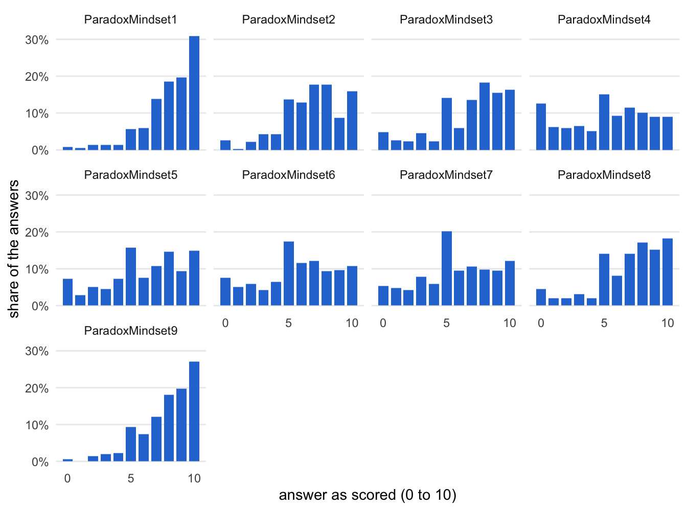
The items differ widely in level: item 4 (“Tension between ideas energizes me”) is answered lowest (mean 5.20), item 1 highest (8.07). No item reaches a ceiling: at most 31 % answered 10.
Step 3 · How the items hang together
Which items go together?
t0 |>
select(num_range("ParadoxMindset", 1:9)) |>
plot_correlations()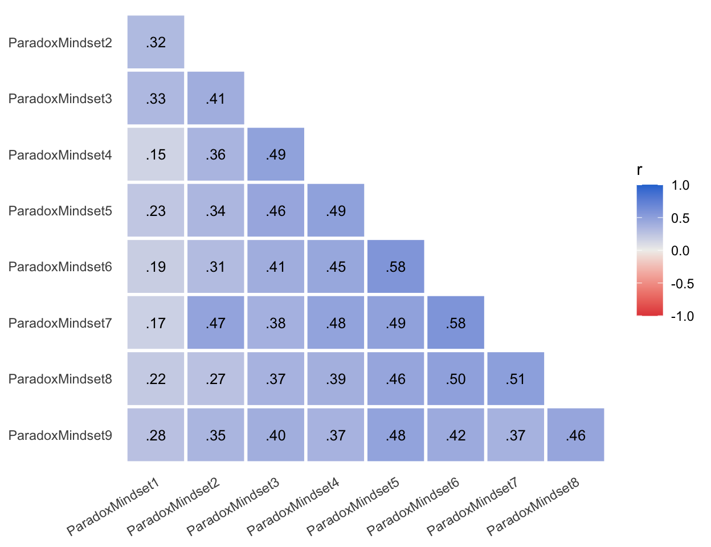
t0 |>
select(num_range("ParadoxMindset", 1:9)) |>
principal_components(n = 1) |>
check_itemscale()# Description of (Sub-)ScalesComponent 1
Item | Missings | Mean | SD | Skewness | Difficulty
----------------------------------------------------------------
ParadoxMindset1 | 0.01 | 8.07 | 2.05 | -1.43 | 0.81
ParadoxMindset2 | 0.00 | 6.83 | 2.36 | -0.69 | 0.68
ParadoxMindset3 | 0.01 | 6.79 | 2.76 | -0.90 | 0.68
ParadoxMindset4 | 0.00 | 5.20 | 3.18 | -0.23 | 0.52
ParadoxMindset5 | 0.01 | 6.05 | 2.99 | -0.48 | 0.61
ParadoxMindset6 | 0.01 | 5.65 | 2.96 | -0.34 | 0.56
ParadoxMindset7 | 0.01 | 5.79 | 2.86 | -0.28 | 0.58
ParadoxMindset8 | 0.00 | 6.95 | 2.67 | -0.97 | 0.69
ParadoxMindset9 | 0.01 | 7.87 | 2.06 | -1.04 | 0.79
Item | Discrimination | alpha if deleted
---------------------------------------------------
ParadoxMindset1 | 0.32 | 0.86
ParadoxMindset2 | 0.52 | 0.84
ParadoxMindset3 | 0.58 | 0.84
ParadoxMindset4 | 0.60 | 0.83
ParadoxMindset5 | 0.66 | 0.83
ParadoxMindset6 | 0.66 | 0.83
ParadoxMindset7 | 0.64 | 0.83
ParadoxMindset8 | 0.58 | 0.84
ParadoxMindset9 | 0.57 | 0.84
Mean inter-item-correlation = 0.386 Cronbach's alpha = 0.852All items correlate positively (.15 to .58), but item 1 goes least with the rest (discrimination .32): without it, α would rise from .852 to .858.
Step 4 · One factor at T0
How well does one factor on all nine items fit?
pm_full <- t0 |>
cfa(model = "
ParadoxMindset =~ ParadoxMindset1 + ParadoxMindset2 + ParadoxMindset3 +
ParadoxMindset4 + ParadoxMindset5 + ParadoxMindset6 +
ParadoxMindset7 + ParadoxMindset8 + ParadoxMindset9
",
data = _, estimator = "MLR", missing = "fiml.x")pm_full |>
cfaPlot("Paradox Mindset, all items (T0)")standardizedSolution(pm_full) |>
filter(op == "=~") |>
select(item = rhs, loading = est.std, se, pvalue) |>
mutate(across(where(is.double), \(x) round(x, 3)))| item | loading | se | pvalue |
|---|---|---|---|
| ParadoxMindset1 | 0.337 | 0.070 | 0 |
| ParadoxMindset2 | 0.531 | 0.054 | 0 |
| ParadoxMindset3 | 0.625 | 0.048 | 0 |
| ParadoxMindset4 | 0.651 | 0.042 | 0 |
| ParadoxMindset5 | 0.738 | 0.038 | 0 |
| ParadoxMindset6 | 0.731 | 0.038 | 0 |
| ParadoxMindset7 | 0.717 | 0.035 | 0 |
| ParadoxMindset8 | 0.650 | 0.052 | 0 |
| ParadoxMindset9 | 0.620 | 0.044 | 0 |
The model comes close to the criteria (CFI = .934, SRMR = .047), but item 1 loads only .34, far below the others (from .53).
Step 5 · Where it strains
Which pairs share more than the factor explains? The modification indices of 10 and more:
modindices(pm_full, sort. = TRUE, minimum.value = 10) |>
select(lhs, op, rhs, mi, epc = sepc.all) |>
mutate(across(where(is.double), \(x) round(x, 3)))| lhs | op | rhs | mi | epc | |
|---|---|---|---|---|---|
| 30 | ParadoxMindset1 | ~~ | ParadoxMindset2 | 11.986 | 0.191 |
| 42 | ParadoxMindset2 | ~~ | ParadoxMindset7 | 10.881 | 0.201 |
| 41 | ParadoxMindset2 | ~~ | ParadoxMindset6 | 10.170 | -0.196 |
Three pairs reach 10, none by much (at most 12.0); item 2 takes part in all three.
Step 6 · The decision
What changes? Three steps, each refitted before the next.
Item 1 leaves. It loads below .40 (Step 4) and goes least with the rest (Step 3):
pm_2_9 <- t0 |>
cfa(model = "
ParadoxMindset =~ ParadoxMindset2 + ParadoxMindset3 + ParadoxMindset4 +
ParadoxMindset5 + ParadoxMindset6 + ParadoxMindset7 +
ParadoxMindset8 + ParadoxMindset9
",
data = _, estimator = "MLR", missing = "fiml.x")
modindices(pm_2_9, sort. = TRUE, minimum.value = 10) |>
select(lhs, op, rhs, mi, epc = sepc.all) |>
mutate(across(where(is.double), \(x) round(x, 3)))| lhs | op | rhs | mi | epc | |
|---|---|---|---|---|---|
| 31 | ParadoxMindset2 | ~~ | ParadoxMindset7 | 11.962 | 0.212 |
Items 2 and 7 get a residual covariance. They now share the largest MI, and both say the same in the same words, “I am comfortable …”:
item_wording |>
filter(item %in% str_c("ParadoxMindset", c(2, 7)))| item | text |
|---|---|
| ParadoxMindset2 | I am comfortable dealing with conflicting demands at the same time. |
| ParadoxMindset7 | I am comfortable working on tasks that contradict each other. |
pm_2_7 <- t0 |>
cfa(model = "
ParadoxMindset =~ ParadoxMindset2 + ParadoxMindset3 + ParadoxMindset4 +
ParadoxMindset5 + ParadoxMindset6 + ParadoxMindset7 +
ParadoxMindset8 + ParadoxMindset9
ParadoxMindset2 ~~ ParadoxMindset7
",
data = _, estimator = "MLR", missing = "fiml.x")
modindices(pm_2_7, sort. = TRUE, minimum.value = 10) |>
select(lhs, op, rhs, mi, epc = sepc.all) |>
mutate(across(where(is.double), \(x) round(x, 3)))| lhs | op | rhs | mi | epc | |
|---|---|---|---|---|---|
| 49 | ParadoxMindset6 | ~~ | ParadoxMindset7 | 11.007 | 0.222 |
| 28 | ParadoxMindset2 | ~~ | ParadoxMindset3 | 10.898 | 0.185 |
Items 4 and 5 get a residual covariance as well. The T0 data do not call for it; its MI after the second step:
modindices(pm_2_7) |>
filter(lhs == "ParadoxMindset4", rhs == "ParadoxMindset5") |>
select(lhs, op, rhs, mi, epc = sepc.all) |>
mutate(across(where(is.double), \(x) round(x, 3)))| lhs | op | rhs | mi | epc |
|---|---|---|---|---|
| ParadoxMindset4 | ~~ | ParadoxMindset5 | 0.091 | 0.02 |
The final model frees it nonetheless:
pm_final <- t0 |>
cfa(model = "
ParadoxMindset =~ ParadoxMindset2 + ParadoxMindset3 + ParadoxMindset4 +
ParadoxMindset5 + ParadoxMindset6 + ParadoxMindset7 +
ParadoxMindset8 + ParadoxMindset9
ParadoxMindset2 ~~ ParadoxMindset7
ParadoxMindset4 ~~ ParadoxMindset5
",
data = _, estimator = "MLR", missing = "fiml.x")pm_final |>
cfaPlot("Paradox Mindset, final model (T0)")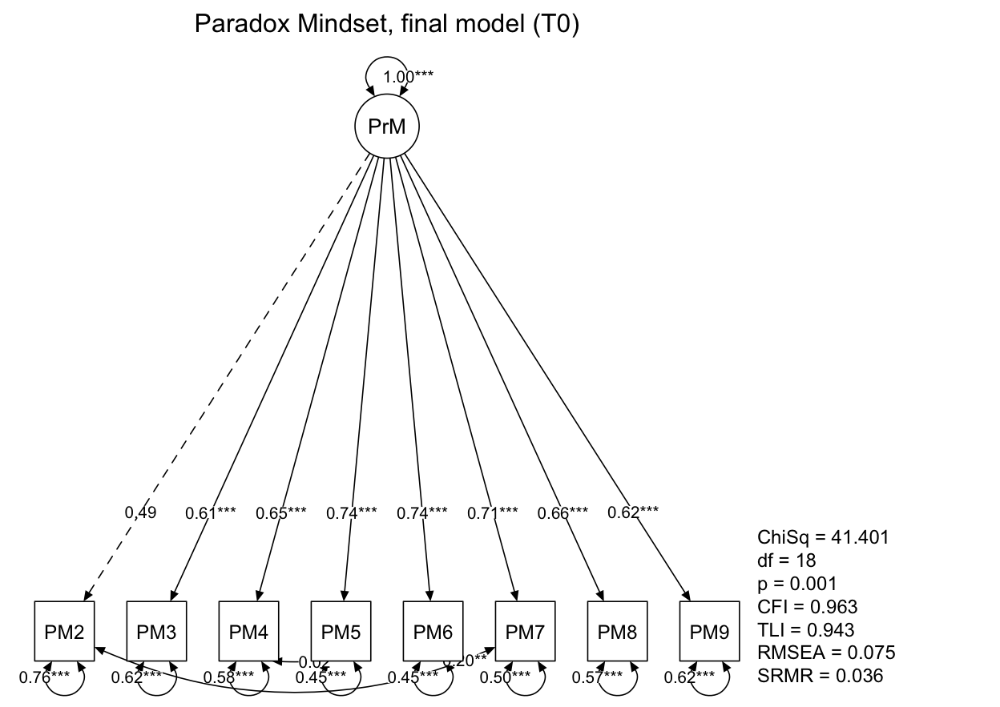
How much does each step improve the fit?
list(`all items` = pm_full,
`items 2 to 9` = pm_2_9,
`with 2 ~~ 7` = pm_2_7,
final = pm_final) |>
map(fit_table) |>
list_rbind(names_to = "model")| model | admissible | ChiSq | df | p | CFI | TLI | RMSEA | SRMR |
|---|---|---|---|---|---|---|---|---|
| all items | TRUE | 71.07 | 27 | 0.000 | 0.934 | 0.912 | 0.085 | 0.047 |
| items 2 to 9 | TRUE | 49.12 | 20 | 0.000 | 0.954 | 0.935 | 0.080 | 0.039 |
| with 2 ~~ 7 | TRUE | 41.48 | 19 | 0.002 | 0.964 | 0.948 | 0.072 | 0.036 |
| final | TRUE | 41.40 | 18 | 0.001 | 0.963 | 0.943 | 0.075 | 0.036 |
Leaving out item 1 lifts the CFI from .934 to .954, the covariance of items 2 and 7 to .964. The covariance of items 4 and 5 (MI = .1 before it was freed) leaves the fit where it was (.963).
What remains? The modification indices of 10 and more in the final model:
modindices(pm_final, sort. = TRUE, minimum.value = 10) |>
select(lhs, op, rhs, mi, epc = sepc.all) |>
mutate(across(where(is.double), \(x) round(x, 3)))| lhs | op | rhs | mi | epc | |
|---|---|---|---|---|---|
| 49 | ParadoxMindset6 | ~~ | ParadoxMindset7 | 10.998 | 0.225 |
| 29 | ParadoxMindset2 | ~~ | ParadoxMindset3 | 10.960 | 0.186 |
Two MIs just above 10 remain (items 2 and 3, items 6 and 7); they stay fixed, as the model meets the criteria.
Step 7 · The decision in both groups
Would each group alone have led to the same model? Before the training both groups are untrained, so the January questionnaires of both settle the model together. Each group on its own should show the same pattern. All nine items, in each group:
# the model of Step 4, in each group's January questionnaires
pm_full_groups <- t0_groups |>
map(\(group) update(pm_full, data = group))
pm_full_groups |>
map(\(fit) standardizedSolution(fit) |>
filter(op == "=~") |>
select(item = rhs, loading = est.std)) |>
list_rbind(names_to = "group") |>
pivot_wider(names_from = group, values_from = loading) |>
mutate(across(where(is.double), \(x) round(x, 2)))| item | Control | Experimental |
|---|---|---|
| ParadoxMindset1 | 0.40 | 0.24 |
| ParadoxMindset2 | 0.60 | 0.47 |
| ParadoxMindset3 | 0.61 | 0.63 |
| ParadoxMindset4 | 0.63 | 0.69 |
| ParadoxMindset5 | 0.84 | 0.63 |
| ParadoxMindset6 | 0.75 | 0.72 |
| ParadoxMindset7 | 0.75 | 0.69 |
| ParadoxMindset8 | 0.69 | 0.60 |
| ParadoxMindset9 | 0.62 | 0.61 |
Where does the model strain in each group? The three largest modification indices:
pm_full_groups |>
map(\(fit) modindices(fit, sort. = TRUE) |>
slice_head(n = 3) |>
select(lhs, op, rhs, mi)) |>
list_rbind(names_to = "group") |>
mutate(mi = round(mi, 1))| group | lhs | op | rhs | mi |
|---|---|---|---|---|
| Control | ParadoxMindset2 | ~~ | ParadoxMindset6 | 10.3 |
| Control | ParadoxMindset1 | ~~ | ParadoxMindset2 | 9.1 |
| Control | ParadoxMindset3 | ~~ | ParadoxMindset4 | 7.9 |
| Experimental | ParadoxMindset1 | ~~ | ParadoxMindset4 | 7.3 |
| Experimental | ParadoxMindset1 | ~~ | ParadoxMindset3 | 5.9 |
| Experimental | ParadoxMindset7 | ~~ | ParadoxMindset9 | 4.9 |
Both groups show the pattern of all persons: item 1 loads below .40 in each; the largest modification index joins items 2 and 6 in the control group and items 1 and 4 in the experimental group.
Does the final model hold in each group?
pm_final_groups <- t0_groups |>
map(\(group) update(pm_final, data = group))
pm_final_groups |>
map(fit_table) |>
list_rbind(names_to = "group")| group | admissible | ChiSq | df | p | CFI | TLI | RMSEA | SRMR |
|---|---|---|---|---|---|---|---|---|
| Control | TRUE | 40.5 | 18 | 0.002 | 0.95 | 0.923 | 0.096 | 0.047 |
| Experimental | TRUE | 15.9 | 18 | 0.599 | 1.00 | 1.012 | 0.000 | 0.032 |
It does, in both groups (CFI .950 and above): each group alone would have led to the same model.
Control group
The control group, trained between September and December.
Step 8 · The four waves
Does the final model hold over the year? The model at each wave of the group:
pm_con_waves <- control_waves |>
map(\(wave) update(pm_final, data = wave))
pm_con_waves |>
map(\(fit) bind_cols(persons = lavInspect(fit, "nobs"),
fit_table(fit))) |>
list_rbind(names_to = "wave")| wave | persons | admissible | ChiSq | df | p | CFI | TLI | RMSEA | SRMR |
|---|---|---|---|---|---|---|---|---|---|
| T0 | 178 | TRUE | 40.50 | 18 | 0.002 | 0.950 | 0.923 | 0.096 | 0.047 |
| T1 | 145 | TRUE | 33.06 | 18 | 0.016 | 0.950 | 0.922 | 0.096 | 0.054 |
| T2 | 165 | TRUE | 34.16 | 18 | 0.012 | 0.955 | 0.930 | 0.092 | 0.044 |
| T3 | 142 | TRUE | 31.59 | 18 | 0.025 | 0.957 | 0.934 | 0.099 | 0.048 |
pm_con_waves |>
map(reliability_check) |>
list_rbind(names_to = "wave")| wave | alpha | omega | AVE | min_load | max_load |
|---|---|---|---|---|---|
| T0 | 0.876 | 0.863 | 0.485 | 0.558 | 0.848 |
| T1 | 0.865 | 0.842 | 0.451 | 0.453 | 0.778 |
| T2 | 0.880 | 0.878 | 0.506 | 0.455 | 0.799 |
| T3 | 0.888 | 0.897 | 0.537 | 0.496 | 0.862 |
plot_loadings_waves(pm_con_waves)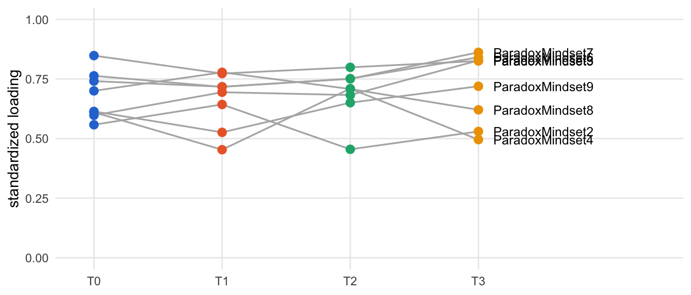
The model is possible at every wave. It meets the criteria of Step 5 at every wave. ω lies between .84 and .90, and every item loads at least .45.
Experimental group
The experimental group, trained between January and March; in September and December it holds the fewest questionnaires of the study.
Step 8 · The four waves
Does the final model hold over the year? The model at each wave of the group:
pm_exp_waves <- experimental_waves |>
map(\(wave) update(pm_final, data = wave))
pm_exp_waves |>
map(\(fit) bind_cols(persons = lavInspect(fit, "nobs"),
fit_table(fit))) |>
list_rbind(names_to = "wave")| wave | persons | admissible | ChiSq | df | p | CFI | TLI | RMSEA | SRMR |
|---|---|---|---|---|---|---|---|---|---|
| T0 | 180 | TRUE | 15.90 | 18 | 0.599 | 1.000 | 1.012 | 0.000 | 0.032 |
| T1 | 156 | TRUE | 24.51 | 18 | 0.139 | 0.972 | 0.956 | 0.061 | 0.043 |
| T2 | 103 | TRUE | 40.69 | 18 | 0.002 | 0.911 | 0.861 | 0.128 | 0.058 |
| T3 | 69 | TRUE | 55.24 | 18 | 0.000 | 0.859 | 0.781 | 0.173 | 0.075 |
pm_exp_waves |>
map(reliability_check) |>
list_rbind(names_to = "wave")| wave | alpha | omega | AVE | min_load | max_load |
|---|---|---|---|---|---|
| T0 | 0.838 | 0.839 | 0.413 | 0.432 | 0.732 |
| T1 | 0.834 | 0.812 | 0.392 | 0.527 | 0.734 |
| T2 | 0.867 | 0.862 | 0.452 | 0.511 | 0.759 |
| T3 | 0.851 | 0.801 | 0.398 | 0.427 | 0.918 |
plot_loadings_waves(pm_exp_waves)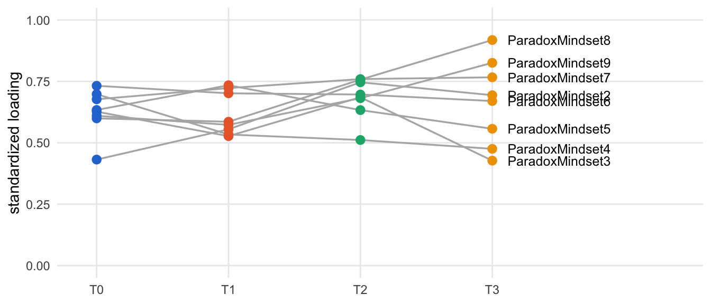
The model is possible at every wave. It falls short of the criteria of Step 5 at T2 and T3 through its CFI (.911 and .859). Where does it strain at T3?
modindices(pm_exp_waves$T3, sort. = TRUE) |>
slice_head(n = 3) |>
select(lhs, op, rhs, mi, epc = sepc.all) |>
mutate(across(where(is.double), \(x) round(x, 3)))| lhs | op | rhs | mi | epc |
|---|---|---|---|---|
| ParadoxMindset5 | ~~ | ParadoxMindset6 | 18.402 | 0.553 |
| ParadoxMindset8 | ~~ | ParadoxMindset9 | 15.324 | 1.117 |
| ParadoxMindset6 | ~~ | ParadoxMindset8 | 11.326 | -0.673 |
The largest modification index joins items 5 and 6. ω lies between .80 and .86, and every item loads at least .43.
Step 9 · What follows
In short:
- T0, both groups: the same items load below .40 as in all persons (1); the final model fits in each (CFI .950 and above).
- Control group, four waves: possible at every wave; within the criteria of Step 5 at every wave.
- Experimental group, four waves: possible at every wave; CFI below .95 at T2 and T3.
- Reliability: ω between .80 and .90.
- Chapter 7: the same over the four waves and in both groups.
Where does the construct go from here? The score of Chapter 2 keeps all nine items, as preregistered; the latent factor of Chapters 7, 8 and 11 rests on items 2 to 9, with the two residual covariances at every wave.
Intellectual Humility
Step 1 · The items
Which items measure it? Six statements about questioning one’s own opinions and being open to other views; none is reverse-keyed:
item_wording |>
filter(item %in% scale_items$IntellectualHumility) |>
mutate(reversed = item %in% reverse_keyed)| item | text | reversed |
|---|---|---|
| IntellectualHumility1 | I question my own opinions, positions, and viewpoints because they could be wrong. | FALSE |
| IntellectualHumility2 | I reconsider my opinions when presented with new evidence. | FALSE |
| IntellectualHumility3 | I recognize the value in opinions that are different from my own. | FALSE |
| IntellectualHumility4 | I accept that my beliefs and attitudes may be wrong. | FALSE |
| IntellectualHumility5 | In the face of conflicting evidence, I am open to changing my opinions. | FALSE |
| IntellectualHumility6 | I like finding out new information that differs from what I already think is true. | FALSE |
Step 2 · The answers
How are the answers distributed in January?
t0 |>
describe(num_range("IntellectualHumility", 1:6))
Descriptive Statistics
----------------------
----------------------------------------------------------------------------------
Variable Mean Median SD Range IQR Skewness N Missing
----------------------------------------------------------------------------------
IntellectualHumility1 8.546 9.000 1.946 10.000 2.000 -1.987 355 3
IntellectualHumility2 8.713 9.000 1.787 10.000 2.000 -2.153 355 3
IntellectualHumility3 8.635 9.000 1.578 9.000 2.000 -1.605 356 2
IntellectualHumility4 8.766 9.000 1.834 10.000 2.000 -2.249 354 4
IntellectualHumility5 8.479 9.000 1.903 10.000 2.000 -1.770 355 3
IntellectualHumility6 8.747 9.000 1.818 10.000 2.000 -2.152 356 2
----------------------------------------------------------------------------------t0 |>
select(num_range("IntellectualHumility", 1:6)) |>
plot_answers()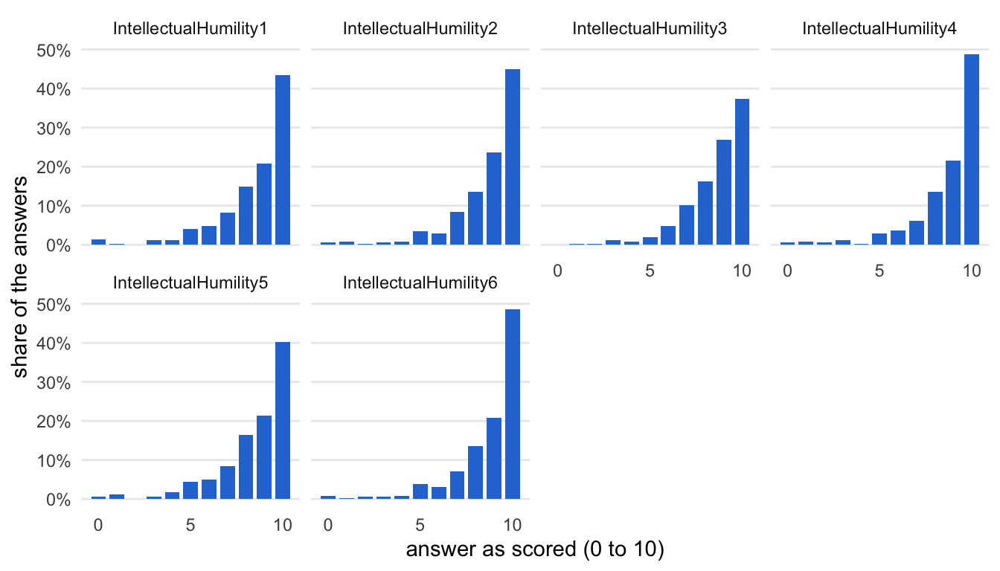
The answers pile up at the top: means from 8.48 to 8.77, and between 37 % and 49 % answered 10. Every item is skewed to the left.
Step 3 · How the items hang together
Which items go together?
t0 |>
select(num_range("IntellectualHumility", 1:6)) |>
plot_correlations()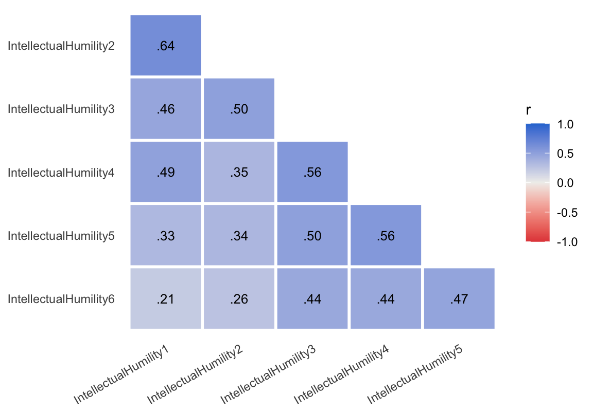
t0 |>
select(num_range("IntellectualHumility", 1:6)) |>
principal_components(n = 1) |>
check_itemscale()# Description of (Sub-)ScalesComponent 1
Item | Missings | Mean | SD | Skewness | Difficulty
----------------------------------------------------------------------
IntellectualHumility1 | 0.01 | 8.55 | 1.95 | -1.99 | 0.85
IntellectualHumility2 | 0.01 | 8.71 | 1.79 | -2.15 | 0.87
IntellectualHumility3 | 0.01 | 8.63 | 1.58 | -1.60 | 0.86
IntellectualHumility4 | 0.01 | 8.77 | 1.83 | -2.25 | 0.88
IntellectualHumility5 | 0.01 | 8.48 | 1.90 | -1.77 | 0.85
IntellectualHumility6 | 0.01 | 8.75 | 1.82 | -2.15 | 0.87
Item | Discrimination | alpha if deleted
---------------------------------------------------------
IntellectualHumility1 | 0.57 | 0.80
IntellectualHumility2 | 0.56 | 0.80
IntellectualHumility3 | 0.68 | 0.78
IntellectualHumility4 | 0.66 | 0.78
IntellectualHumility5 | 0.59 | 0.79
IntellectualHumility6 | 0.48 | 0.81
Mean inter-item-correlation = 0.436 Cronbach's alpha = 0.820The items correlate between .21 and .64, most strongly items 1 and 2. Item 6 goes least with the rest, but α would not rise without any item.
Step 4 · One factor at T0
How well does one factor on all six items fit?
ih_full <- t0 |>
cfa(model = "
IntellectualHumility =~ IntellectualHumility1 + IntellectualHumility2 +
IntellectualHumility3 + IntellectualHumility4 +
IntellectualHumility5 + IntellectualHumility6
",
data = _, estimator = "MLR", missing = "fiml.x")ih_full |>
cfaPlot("Intellectual Humility, all items (T0)")standardizedSolution(ih_full) |>
filter(op == "=~") |>
select(item = rhs, loading = est.std, se, pvalue) |>
mutate(across(where(is.double), \(x) round(x, 3)))| item | loading | se | pvalue |
|---|---|---|---|
| IntellectualHumility1 | 0.634 | 0.085 | 0 |
| IntellectualHumility2 | 0.614 | 0.089 | 0 |
| IntellectualHumility3 | 0.761 | 0.064 | 0 |
| IntellectualHumility4 | 0.742 | 0.051 | 0 |
| IntellectualHumility5 | 0.668 | 0.056 | 0 |
| IntellectualHumility6 | 0.551 | 0.082 | 0 |
All items load clearly (from .55), but the model misses the criteria (CFI = .855, RMSEA = .181).
Step 5 · Where it strains
Which pairs share more than the factor explains? The modification indices of 10 and more:
modindices(ih_full, sort. = TRUE, minimum.value = 10) |>
select(lhs, op, rhs, mi, epc = sepc.all) |>
mutate(across(where(is.double), \(x) round(x, 3)))| lhs | op | rhs | mi | epc | |
|---|---|---|---|---|---|
| 21 | IntellectualHumility1 | ~~ | IntellectualHumility2 | 81.905 | 0.572 |
| 27 | IntellectualHumility2 | ~~ | IntellectualHumility4 | 25.366 | -0.355 |
| 25 | IntellectualHumility1 | ~~ | IntellectualHumility6 | 22.489 | -0.291 |
| 24 | IntellectualHumility1 | ~~ | IntellectualHumility5 | 15.397 | -0.258 |
| 35 | IntellectualHumility5 | ~~ | IntellectualHumility6 | 13.311 | 0.228 |
| 33 | IntellectualHumility4 | ~~ | IntellectualHumility5 | 10.940 | 0.247 |
One pair dominates: items 1 and 2 (MI = 82), more than three times the next (25). They say nearly the same, reconsidering one’s own opinions:
item_wording |>
filter(item %in% str_c("IntellectualHumility", c(1, 2)))| item | text |
|---|---|
| IntellectualHumility1 | I question my own opinions, positions, and viewpoints because they could be wrong. |
| IntellectualHumility2 | I reconsider my opinions when presented with new evidence. |
Step 6 · The decision
What changes? Item 2 leaves, the weaker of the two (Step 4: .61 against .63). The final model keeps items 1 and 3 to 6:
ih_final <- t0 |>
cfa(model = "
IntellectualHumility =~ IntellectualHumility1 + IntellectualHumility3 +
IntellectualHumility4 + IntellectualHumility5 +
IntellectualHumility6
",
data = _, estimator = "MLR", missing = "fiml.x")ih_final |>
cfaPlot("Intellectual Humility, final model (T0)")How much does it improve the fit?
list(`all items` = ih_full,
final = ih_final) |>
map(fit_table) |>
list_rbind(names_to = "model")| model | admissible | ChiSq | df | p | CFI | TLI | RMSEA | SRMR |
|---|---|---|---|---|---|---|---|---|
| all items | TRUE | 46.15 | 9 | 0.00 | 0.855 | 0.759 | 0.181 | 0.070 |
| final | TRUE | 8.51 | 5 | 0.13 | 0.978 | 0.955 | 0.080 | 0.037 |
Without item 2, the CFI rises from .855 to .978.
What remains? The modification indices of 10 and more in the final model:
modindices(ih_final, sort. = TRUE, minimum.value = 10) |>
select(lhs, op, rhs, mi, epc = sepc.all) |>
mutate(across(where(is.double), \(x) round(x, 3)))| lhs | op | rhs | mi | epc | |
|---|---|---|---|---|---|
| 21 | IntellectualHumility1 | ~~ | IntellectualHumility6 | 12.985 | -0.219 |
One MI above 10 remains (items 1 and 6, MI = 13); it stays fixed, as the model meets the criteria.
Step 7 · The decision in both groups
Would each group alone have led to the same model? Before the training both groups are untrained, so the January questionnaires of both settle the model together. Each group on its own should show the same pattern. All six items, in each group:
# the model of Step 4, in each group's January questionnaires
ih_full_groups <- t0_groups |>
map(\(group) update(ih_full, data = group))
ih_full_groups |>
map(\(fit) standardizedSolution(fit) |>
filter(op == "=~") |>
select(item = rhs, loading = est.std)) |>
list_rbind(names_to = "group") |>
pivot_wider(names_from = group, values_from = loading) |>
mutate(across(where(is.double), \(x) round(x, 2)))| item | Control | Experimental |
|---|---|---|
| IntellectualHumility1 | 0.61 | 0.66 |
| IntellectualHumility2 | 0.63 | 0.58 |
| IntellectualHumility3 | 0.81 | 0.68 |
| IntellectualHumility4 | 0.80 | 0.69 |
| IntellectualHumility5 | 0.74 | 0.61 |
| IntellectualHumility6 | 0.63 | 0.50 |
Where does the model strain in each group? The three largest modification indices:
ih_full_groups |>
map(\(fit) modindices(fit, sort. = TRUE) |>
slice_head(n = 3) |>
select(lhs, op, rhs, mi)) |>
list_rbind(names_to = "group") |>
mutate(mi = round(mi, 1))| group | lhs | op | rhs | mi |
|---|---|---|---|---|
| Control | IntellectualHumility1 | ~~ | IntellectualHumility2 | 46.7 |
| Control | IntellectualHumility1 | ~~ | IntellectualHumility6 | 26.6 |
| Control | IntellectualHumility5 | ~~ | IntellectualHumility6 | 10.9 |
| Experimental | IntellectualHumility1 | ~~ | IntellectualHumility2 | 37.5 |
| Experimental | IntellectualHumility2 | ~~ | IntellectualHumility4 | 16.9 |
| Experimental | IntellectualHumility1 | ~~ | IntellectualHumility5 | 11.3 |
In neither group does an item load below .40, as in all persons, and the largest modification index joins items 1 and 2 in both.
Does the final model hold in each group?
ih_final_groups <- t0_groups |>
map(\(group) update(ih_final, data = group))
ih_final_groups |>
map(fit_table) |>
list_rbind(names_to = "group")| group | admissible | ChiSq | df | p | CFI | TLI | RMSEA | SRMR |
|---|---|---|---|---|---|---|---|---|
| Control | TRUE | 11.34 | 5 | 0.045 | 0.953 | 0.905 | 0.134 | 0.051 |
| Experimental | TRUE | 3.88 | 5 | 0.567 | 1.000 | 1.034 | 0.000 | 0.034 |
It does, in both groups (CFI .953 and above): each group alone would have led to the same model.
Control group
The control group, trained between September and December.
Step 8 · The four waves
Does the final model hold over the year? The model at each wave of the group:
ih_con_waves <- control_waves |>
map(\(wave) update(ih_final, data = wave))
ih_con_waves |>
map(\(fit) bind_cols(persons = lavInspect(fit, "nobs"),
fit_table(fit))) |>
list_rbind(names_to = "wave")| wave | persons | admissible | ChiSq | df | p | CFI | TLI | RMSEA | SRMR |
|---|---|---|---|---|---|---|---|---|---|
| T0 | 177 | TRUE | 11.34 | 5 | 0.045 | 0.953 | 0.905 | 0.134 | 0.051 |
| T1 | 145 | TRUE | 14.88 | 5 | 0.011 | 0.939 | 0.877 | 0.143 | 0.047 |
| T2 | 165 | TRUE | 13.39 | 5 | 0.020 | 0.958 | 0.917 | 0.115 | 0.041 |
| T3 | 141 | TRUE | 8.33 | 5 | 0.139 | 0.986 | 0.972 | 0.082 | 0.023 |
ih_con_waves |>
map(reliability_check) |>
list_rbind(names_to = "wave")| wave | alpha | omega | AVE | min_load | max_load |
|---|---|---|---|---|---|
| T0 | 0.830 | 0.844 | 0.513 | 0.537 | 0.832 |
| T1 | 0.802 | 0.806 | 0.456 | 0.578 | 0.800 |
| T2 | 0.773 | 0.767 | 0.416 | 0.419 | 0.847 |
| T3 | 0.864 | 0.866 | 0.564 | 0.656 | 0.918 |
plot_loadings_waves(ih_con_waves)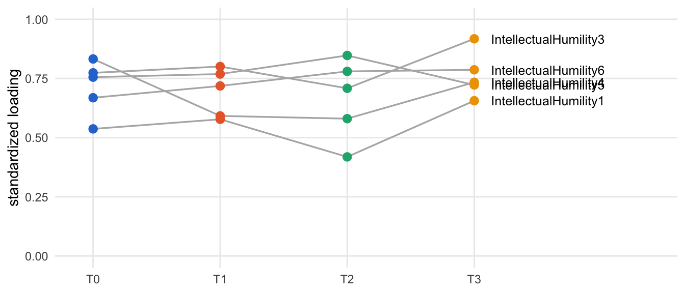
The model is possible at every wave. It falls short of the criteria of Step 5 at T1 through its CFI (.939). Where does it strain at T1?
modindices(ih_con_waves$T1, sort. = TRUE) |>
slice_head(n = 3) |>
select(lhs, op, rhs, mi, epc = sepc.all) |>
mutate(across(where(is.double), \(x) round(x, 3)))| lhs | op | rhs | mi | epc |
|---|---|---|---|---|
| IntellectualHumility1 | ~~ | IntellectualHumility3 | 13.574 | 0.443 |
| IntellectualHumility5 | ~~ | IntellectualHumility6 | 13.363 | 0.505 |
| IntellectualHumility1 | ~~ | IntellectualHumility5 | 9.173 | -0.339 |
The largest modification index joins items 1 and 3. ω lies between .77 and .87, and every item loads at least .42.
Experimental group
The experimental group, trained between January and March; in September and December it holds the fewest questionnaires of the study.
Step 8 · The four waves
Does the final model hold over the year? The model at each wave of the group:
ih_exp_waves <- experimental_waves |>
map(\(wave) update(ih_final, data = wave))
ih_exp_waves |>
map(\(fit) bind_cols(persons = lavInspect(fit, "nobs"),
fit_table(fit))) |>
list_rbind(names_to = "wave")| wave | persons | admissible | ChiSq | df | p | CFI | TLI | RMSEA | SRMR |
|---|---|---|---|---|---|---|---|---|---|
| T0 | 180 | TRUE | 3.88 | 5 | 0.567 | 1.000 | 1.034 | 0.000 | 0.034 |
| T1 | 156 | TRUE | 12.97 | 5 | 0.024 | 0.936 | 0.872 | 0.118 | 0.048 |
| T2 | 103 | TRUE | 10.55 | 5 | 0.061 | 0.978 | 0.956 | 0.115 | 0.037 |
| T3 | 69 | TRUE | 9.62 | 5 | 0.087 | 0.959 | 0.917 | 0.097 | 0.048 |
ih_exp_waves |>
map(reliability_check) |>
list_rbind(names_to = "wave")| wave | alpha | omega | AVE | min_load | max_load |
|---|---|---|---|---|---|
| T0 | 0.756 | 0.763 | 0.393 | 0.513 | 0.750 |
| T1 | 0.728 | 0.723 | 0.361 | 0.355 | 0.795 |
| T2 | 0.884 | 0.882 | 0.607 | 0.562 | 0.878 |
| T3 | 0.739 | 0.749 | 0.390 | 0.437 | 0.887 |
plot_loadings_waves(ih_exp_waves)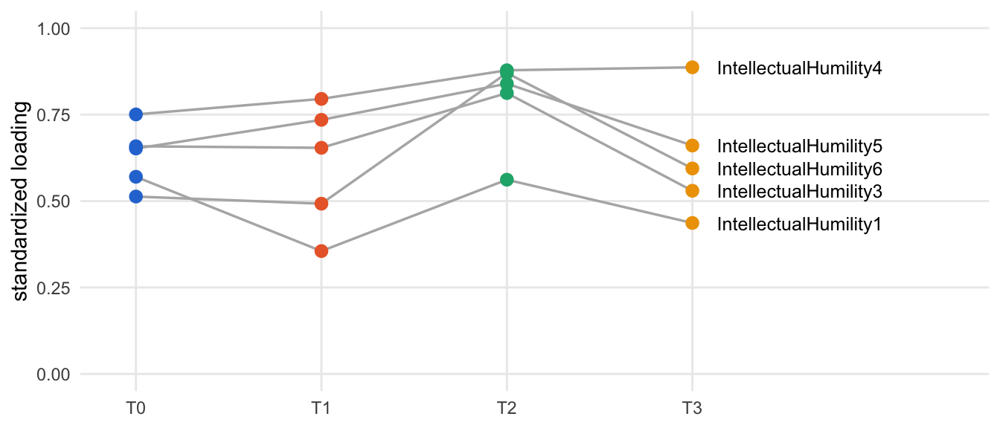
The model is possible at every wave. It falls short of the criteria of Step 5 at T1 through its CFI (.936). Where does it strain at T1?
modindices(ih_exp_waves$T1, sort. = TRUE) |>
slice_head(n = 3) |>
select(lhs, op, rhs, mi, epc = sepc.all) |>
mutate(across(where(is.double), \(x) round(x, 3)))| lhs | op | rhs | mi | epc |
|---|---|---|---|---|
| IntellectualHumility1 | ~~ | IntellectualHumility4 | 13.306 | -0.415 |
| IntellectualHumility1 | ~~ | IntellectualHumility3 | 9.769 | 0.288 |
| IntellectualHumility4 | ~~ | IntellectualHumility5 | 3.010 | 0.414 |
The largest modification index joins items 1 and 4. ω lies between .72 and .88, and every item loads at least .35.
Step 9 · What follows
In short:
- T0, both groups: no item loads below .40, as in all persons; the final model fits in each (CFI .953 and above).
- Control group, four waves: possible at every wave; CFI below .95 at T1.
- Experimental group, four waves: possible at every wave; CFI below .95 at T1.
- Reliability: ω between .72 and .88.
- Chapter 7: the same over the four waves and in both groups.
Where does the construct go from here? The score of Chapter 2 keeps all six items, as preregistered; the latent factor of Chapters 7, 8 and 11 rests on items 1 and 3 to 6.
Tolerance Diversity
Step 1 · The items
Which items measure it? Four statements about Roma/Sinti women and one about meeting people of a different background; item 1 was asked the other way round and turned for the analysis:
item_wording |>
filter(item %in% scale_items$ToleranceDiversity) |>
mutate(reversed = item %in% reverse_keyed)| item | text | reversed |
|---|---|---|
| ToleranceDiversity1 | Roma/Sinti women threaten the values of Serbia. | TRUE |
| ToleranceDiversity2 | Roma/Sinti women enrich the prosperity of Serbia. | FALSE |
| ToleranceDiversity3 | I would not mind Roma/Sinti women in my residential area. | FALSE |
| ToleranceDiversity4 | I sympathize with Roma/Sinti women. | FALSE |
| ToleranceDiversity5 | I enjoy meeting people whose background is different from mine. | FALSE |
Step 2 · The answers
How are the answers distributed in January?
t0 |>
describe(num_range("ToleranceDiversity", 1:5))
Descriptive Statistics
----------------------
--------------------------------------------------------------------------------
Variable Mean Median SD Range IQR Skewness N Missing
--------------------------------------------------------------------------------
ToleranceDiversity1 9.285 10.000 1.768 10.000 0.000 -3.085 355 3
ToleranceDiversity2 5.225 5.000 3.173 10.000 5.000 -0.017 355 3
ToleranceDiversity3 8.682 10.000 2.674 10.000 1.000 -2.313 355 3
ToleranceDiversity4 7.725 9.000 2.689 10.000 4.000 -1.230 353 5
ToleranceDiversity5 8.309 9.000 2.332 10.000 3.000 -1.603 356 2
--------------------------------------------------------------------------------t0 |>
select(num_range("ToleranceDiversity", 1:5)) |>
plot_answers()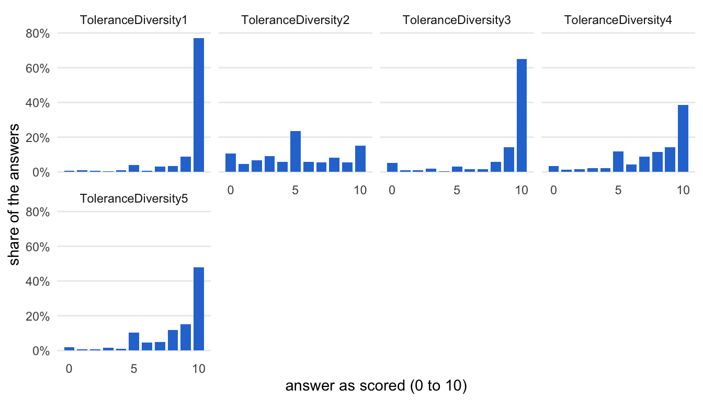
The items differ widely in level. Turned around, item 1 sits at the ceiling: 77 % answered 10, that is, rejected that Roma/Sinti women threaten the values of Serbia. Item 2 (they enrich its prosperity) lies in the middle (mean 5.23).
Step 3 · How the items hang together
Which items go together?
t0 |>
select(num_range("ToleranceDiversity", 1:5)) |>
plot_correlations()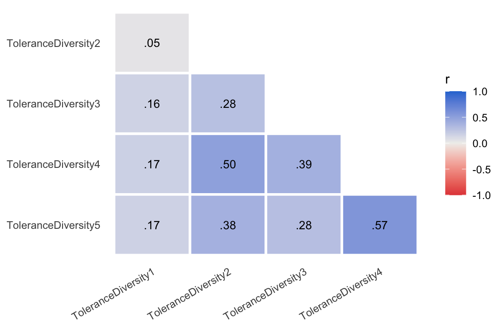
t0 |>
select(num_range("ToleranceDiversity", 1:5)) |>
principal_components(n = 1) |>
check_itemscale()# Description of (Sub-)ScalesComponent 1
Item | Missings | Mean | SD | Skewness | Difficulty
--------------------------------------------------------------------
ToleranceDiversity1 | 0.01 | 9.28 | 1.77 | -3.09 | 0.93
ToleranceDiversity2 | 0.01 | 5.23 | 3.17 | -0.02 | 0.52
ToleranceDiversity3 | 0.01 | 8.68 | 2.67 | -2.31 | 0.87
ToleranceDiversity4 | 0.01 | 7.73 | 2.69 | -1.23 | 0.77
ToleranceDiversity5 | 0.01 | 8.31 | 2.33 | -1.60 | 0.83
Item | Discrimination | alpha if deleted
-------------------------------------------------------
ToleranceDiversity1 | 0.18 | 0.72
ToleranceDiversity2 | 0.46 | 0.64
ToleranceDiversity3 | 0.40 | 0.66
ToleranceDiversity4 | 0.65 | 0.54
ToleranceDiversity5 | 0.55 | 0.60
Mean inter-item-correlation = 0.300 Cronbach's alpha = 0.691Item 1 hardly goes with the rest (discrimination .18; its correlations start at .05), and without it α would rise from .691 to .724.
Step 4 · One factor at T0
How well does one factor on all five items fit?
td_full <- t0 |>
cfa(model = "
ToleranceDiversity =~ ToleranceDiversity1 + ToleranceDiversity2 +
ToleranceDiversity3 + ToleranceDiversity4 +
ToleranceDiversity5
",
data = _, estimator = "MLR", missing = "fiml.x")td_full |>
cfaPlot("Tolerance Diversity, all items (T0)")standardizedSolution(td_full) |>
filter(op == "=~") |>
select(item = rhs, loading = est.std, se, pvalue) |>
mutate(across(where(is.double), \(x) round(x, 3)))| item | loading | se | pvalue |
|---|---|---|---|
| ToleranceDiversity1 | 0.203 | 0.062 | 0.001 |
| ToleranceDiversity2 | 0.578 | 0.043 | 0.000 |
| ToleranceDiversity3 | 0.453 | 0.069 | 0.000 |
| ToleranceDiversity4 | 0.866 | 0.040 | 0.000 |
| ToleranceDiversity5 | 0.658 | 0.049 | 0.000 |
The model fits (CFI = .995, SRMR = .024), yet item 1 hardly loads (.20).
Step 5 · Where it strains
Which pairs share more than the factor explains? The modification indices of 10 and more:
modindices(td_full, sort. = TRUE, minimum.value = 10) |>
select(lhs, op, rhs, mi, epc = sepc.all) |>
mutate(across(where(is.double), \(x) round(x, 3)))| lhs | op | rhs | mi | epc |
|---|
No pair reaches an MI of 10: the model strains nowhere. The weak point is item 1 alone.
Step 6 · The decision
What changes? Item 1 leaves: it barely measures the factor, and as the one reverse-keyed item, nearly everyone answered it at the top. The final model keeps items 2 to 5:
td_final <- t0 |>
cfa(model = "
ToleranceDiversity =~ ToleranceDiversity2 + ToleranceDiversity3 +
ToleranceDiversity4 + ToleranceDiversity5
",
data = _, estimator = "MLR", missing = "fiml.x")td_final |>
cfaPlot("Tolerance Diversity, final model (T0)")How does the fit change?
list(`all items` = td_full,
final = td_final) |>
map(fit_table) |>
list_rbind(names_to = "model")| model | admissible | ChiSq | df | p | CFI | TLI | RMSEA | SRMR |
|---|---|---|---|---|---|---|---|---|
| all items | TRUE | 6.54 | 5 | 0.258 | 0.995 | 0.99 | 0.03 | 0.024 |
| final | TRUE | 0.38 | 2 | 0.826 | 1.000 | 1.02 | 0.00 | 0.007 |
The fit, already good, stays good (CFI = 1.000, SRMR = .007).
Step 7 · The decision in both groups
Would each group alone have led to the same model? Before the training both groups are untrained, so the January questionnaires of both settle the model together. Each group on its own should show the same pattern. All five items, in each group:
# the model of Step 4, in each group's January questionnaires
td_full_groups <- t0_groups |>
map(\(group) update(td_full, data = group))
td_full_groups |>
map(\(fit) standardizedSolution(fit) |>
filter(op == "=~") |>
select(item = rhs, loading = est.std)) |>
list_rbind(names_to = "group") |>
pivot_wider(names_from = group, values_from = loading) |>
mutate(across(where(is.double), \(x) round(x, 2)))| item | Control | Experimental |
|---|---|---|
| ToleranceDiversity1 | 0.28 | 0.14 |
| ToleranceDiversity2 | 0.66 | 0.49 |
| ToleranceDiversity3 | 0.34 | 0.59 |
| ToleranceDiversity4 | 0.91 | 0.82 |
| ToleranceDiversity5 | 0.66 | 0.66 |
Where does the model strain in each group? The three largest modification indices:
td_full_groups |>
map(\(fit) modindices(fit, sort. = TRUE) |>
slice_head(n = 3) |>
select(lhs, op, rhs, mi)) |>
list_rbind(names_to = "group") |>
mutate(mi = round(mi, 1))| group | lhs | op | rhs | mi |
|---|---|---|---|---|
| Control | ToleranceDiversity1 | ~~ | ToleranceDiversity2 | 2.4 |
| Control | ToleranceDiversity1 | ~~ | ToleranceDiversity3 | 1.4 |
| Control | ToleranceDiversity2 | ~~ | ToleranceDiversity5 | 1.2 |
| Experimental | ToleranceDiversity1 | ~~ | ToleranceDiversity2 | 1.7 |
| Experimental | ToleranceDiversity1 | ~~ | ToleranceDiversity3 | 1.1 |
| Experimental | ToleranceDiversity1 | ~~ | ToleranceDiversity5 | 1.1 |
Below .40 load items 1 and 3 in the control group and item 1 in the experimental group (in all persons: item 1), and the largest modification index joins items 1 and 2 in both.
Does the final model hold in each group?
td_final_groups <- t0_groups |>
map(\(group) update(td_final, data = group))
td_final_groups |>
map(fit_table) |>
list_rbind(names_to = "group")| group | admissible | ChiSq | df | p | CFI | TLI | RMSEA | SRMR |
|---|---|---|---|---|---|---|---|---|
| Control | TRUE | 0.90 | 2 | 0.637 | 1 | 1.025 | 0 | 0.014 |
| Experimental | TRUE | 1.04 | 2 | 0.595 | 1 | 1.022 | 0 | 0.014 |
It does, in both groups (CFI 1.000 and above): the model settled on both groups together fits each of them.
Control group
The control group, trained between September and December.
Step 8 · The four waves
Does the final model hold over the year? The model at each wave of the group:
td_con_waves <- control_waves |>
map(\(wave) update(td_final, data = wave))
td_con_waves |>
map(\(fit) bind_cols(persons = lavInspect(fit, "nobs"),
fit_table(fit))) |>
list_rbind(names_to = "wave")| wave | persons | admissible | ChiSq | df | p | CFI | TLI | RMSEA | SRMR |
|---|---|---|---|---|---|---|---|---|---|
| T0 | 178 | TRUE | 0.90 | 2 | 0.637 | 1.000 | 1.025 | 0.000 | 0.014 |
| T1 | 146 | TRUE | 2.84 | 2 | 0.242 | 0.989 | 0.967 | 0.056 | 0.032 |
| T2 | 166 | TRUE | 1.74 | 2 | 0.419 | 1.000 | 1.010 | 0.000 | 0.028 |
| T3 | 142 | TRUE | 3.67 | 2 | 0.160 | 0.970 | 0.910 | 0.111 | 0.042 |
td_con_waves |>
map(reliability_check) |>
list_rbind(names_to = "wave")| wave | alpha | omega | AVE | min_load | max_load |
|---|---|---|---|---|---|
| T0 | 0.722 | 0.760 | 0.469 | 0.334 | 0.901 |
| T1 | 0.654 | 0.674 | 0.343 | 0.466 | 0.723 |
| T2 | 0.650 | 0.698 | 0.373 | 0.418 | 0.892 |
| T3 | 0.697 | 0.727 | 0.401 | 0.459 | 0.783 |
plot_loadings_waves(td_con_waves)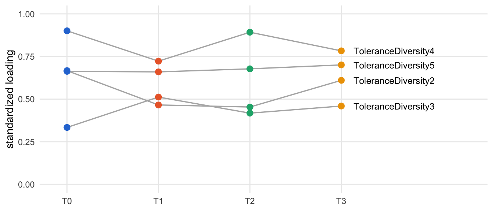
The model is possible at every wave. It meets the criteria of Step 5 at every wave. ω lies between .67 and .76, and every item loads at least .33.
Experimental group
The experimental group, trained between January and March; in September and December it holds the fewest questionnaires of the study.
Step 8 · The four waves
Does the final model hold over the year? The model at each wave of the group:
td_exp_waves <- experimental_waves |>
map(\(wave) update(td_final, data = wave))
td_exp_waves |>
map(\(fit) bind_cols(persons = lavInspect(fit, "nobs"),
fit_table(fit))) |>
list_rbind(names_to = "wave")| wave | persons | admissible | ChiSq | df | p | CFI | TLI | RMSEA | SRMR |
|---|---|---|---|---|---|---|---|---|---|
| T0 | 179 | TRUE | 1.04 | 2 | 0.595 | 1.000 | 1.022 | 0.000 | 0.014 |
| T1 | 154 | TRUE | 0.79 | 2 | 0.675 | 1.000 | 1.037 | 0.000 | 0.012 |
| T2 | 103 | TRUE | 29.48 | 2 | 0.000 | 0.880 | 0.640 | 0.209 | 0.061 |
| T3 | 69 | TRUE | 9.15 | 2 | 0.010 | 0.897 | 0.690 | 0.228 | 0.067 |
td_exp_waves |>
map(reliability_check) |>
list_rbind(names_to = "wave")| wave | alpha | omega | AVE | min_load | max_load |
|---|---|---|---|---|---|
| T0 | 0.723 | 0.724 | 0.404 | 0.494 | 0.829 |
| T1 | 0.705 | 0.712 | 0.386 | 0.454 | 0.801 |
| T2 | 0.639 | 0.705 | 0.376 | 0.282 | 0.750 |
| T3 | 0.736 | 0.764 | 0.467 | 0.517 | 0.909 |
plot_loadings_waves(td_exp_waves)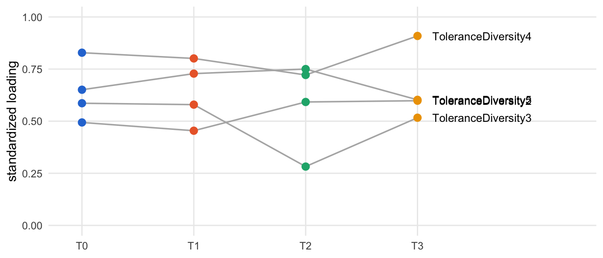
The model is possible at every wave. It falls short of the criteria of Step 5 at T2 and T3 through its CFI (.880 and .897). Where does it strain at T2?
modindices(td_exp_waves$T2, sort. = TRUE) |>
slice_head(n = 3) |>
select(lhs, op, rhs, mi, epc = sepc.all) |>
mutate(across(where(is.double), \(x) round(x, 3)))| lhs | op | rhs | mi | epc |
|---|---|---|---|---|
| ToleranceDiversity2 | ~~ | ToleranceDiversity3 | 7.732 | -0.314 |
| ToleranceDiversity4 | ~~ | ToleranceDiversity5 | 7.732 | -1.715 |
| ToleranceDiversity3 | ~~ | ToleranceDiversity5 | 7.168 | 0.379 |
The largest modification index joins items 2 and 3; with two degrees of freedom left, one misfit shows in several such pairs at once. ω lies between .70 and .76, and every item loads at least .28.
Step 9 · What follows
In short:
- T0, both groups: below .40 load items 1 and 3 in the control and item 1 in the experimental group (all persons: item 1); the final model fits in each (CFI 1.000 and above).
- Control group, four waves: possible at every wave; within the criteria of Step 5 at every wave.
- Experimental group, four waves: possible at every wave; CFI below .95 at T2 and T3.
- Reliability: ω between .67 and .76.
- Chapter 7: the same over the four waves and in both groups, except for item 2 in the experimental group (partial invariance).
Where does the construct go from here? The score of Chapter 2 keeps all five items, as preregistered; the latent factor of Chapters 7, 8 and 11 rests on items 2 to 5.
Women Attitude
Step 1 · The items
Which items measure it? Nine statements that every woman should be free to choose, from school and work to marriage and children; none is reverse-keyed:
item_wording |>
filter(item %in% scale_items$womenAttitude) |>
mutate(reversed = item %in% reverse_keyed)| item | text | reversed |
|---|---|---|
| womenAttitude1 | Every woman should be free to choose whether to complete secondary school. | FALSE |
| womenAttitude2 | Every woman should be free to choose whether to work for pay. | FALSE |
| womenAttitude3 | Every woman should be free to choose to prioritize her work for pay over domestic duties. | FALSE |
| womenAttitude4 | Every woman should be free to choose what to do with any money that she earns. | FALSE |
| womenAttitude5 | Every woman should be free to choose to purchase land, a house, or other valuable goods. | FALSE |
| womenAttitude6 | Every woman should be free to choose when to get married. | FALSE |
| womenAttitude7 | Every woman should be free to choose to divorce or end her marriage. | FALSE |
| womenAttitude8 | Every woman should be free to choose whether and when to have children. | FALSE |
| womenAttitude9 | Every woman should be free to choose not to have any more children. | FALSE |
Step 2 · The answers
How are the answers distributed in January?
t0 |>
describe(num_range("womenAttitude", 1:9))
Descriptive Statistics
----------------------
---------------------------------------------------------------------------
Variable Mean Median SD Range IQR Skewness N Missing
---------------------------------------------------------------------------
womenAttitude1 8.560 10.000 2.896 10.000 1.000 -2.095 357 1
womenAttitude2 9.560 10.000 1.241 10.000 0.000 -4.408 357 1
womenAttitude3 9.361 10.000 1.469 10.000 1.000 -3.438 357 1
womenAttitude4 9.435 10.000 1.414 10.000 0.000 -3.871 356 2
womenAttitude5 9.663 10.000 1.009 10.000 0.000 -4.743 356 2
womenAttitude6 9.874 10.000 0.635 10.000 0.000 -11.368 357 1
womenAttitude7 9.836 10.000 0.678 8.000 0.000 -7.175 354 4
womenAttitude8 9.622 10.000 1.287 10.000 0.000 -4.765 357 1
womenAttitude9 9.664 10.000 1.309 10.000 0.000 -5.462 357 1
---------------------------------------------------------------------------t0 |>
select(num_range("womenAttitude", 1:9)) |>
plot_answers()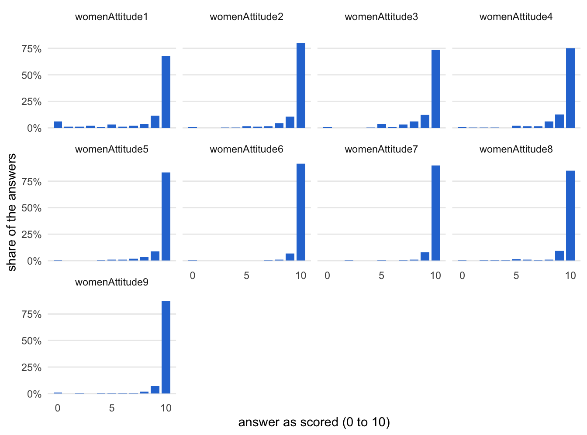
Which items sit at the ceiling? Of all items of the questionnaire, those with a T0 mean above 9.7:
t0 |>
summarise(across(all_of(item_names), \(x) mean(x, na.rm = TRUE))) |>
pivot_longer(everything(), names_to = "item", values_to = "M_T0") |>
filter(M_T0 > 9.7) |>
mutate(M_T0 = round(M_T0, 2))| item | M_T0 |
|---|---|
| womenAttitude6 | 9.87 |
| womenAttitude7 | 9.84 |
The answers crowd the top of the scale: between 68 % and 92 % answered 10. Items 6 and 7 (marriage and divorce) are the only two of all 102 items with a T0 mean above 9.7; they left the score already in Chapter 2.
Step 3 · How the items hang together
Which items go together?
t0 |>
select(num_range("womenAttitude", 1:9)) |>
plot_correlations()t0 |>
select(num_range("womenAttitude", 1:9)) |>
principal_components(n = 1) |>
check_itemscale()# Description of (Sub-)ScalesComponent 1
Item | Missings | Mean | SD | Skewness | Difficulty
---------------------------------------------------------------
womenAttitude1 | 0.00 | 8.56 | 2.90 | -2.09 | 0.86
womenAttitude2 | 0.00 | 9.56 | 1.24 | -4.41 | 0.96
womenAttitude3 | 0.00 | 9.36 | 1.47 | -3.44 | 0.94
womenAttitude4 | 0.01 | 9.44 | 1.41 | -3.87 | 0.94
womenAttitude5 | 0.01 | 9.66 | 1.01 | -4.74 | 0.97
womenAttitude6 | 0.00 | 9.87 | 0.63 | -11.37 | 0.99
womenAttitude7 | 0.01 | 9.84 | 0.68 | -7.17 | 0.98
womenAttitude8 | 0.00 | 9.62 | 1.29 | -4.76 | 0.96
womenAttitude9 | 0.00 | 9.66 | 1.31 | -5.46 | 0.97
Item | Discrimination | alpha if deleted
--------------------------------------------------
womenAttitude1 | 0.23 | 0.75
womenAttitude2 | 0.43 | 0.63
womenAttitude3 | 0.34 | 0.65
womenAttitude4 | 0.51 | 0.61
womenAttitude5 | 0.52 | 0.62
womenAttitude6 | 0.20 | 0.67
womenAttitude7 | 0.41 | 0.65
womenAttitude8 | 0.51 | 0.61
womenAttitude9 | 0.46 | 0.62
Mean inter-item-correlation = 0.248 Cronbach's alpha = 0.670The heat map shows a core: items 4, 5, 8 and 9 correlate between .40 and .71, and item 7 joins items 8 and 9. Items 1 to 3 correlate weakly among themselves and hardly with the rest, as does item 6. Without item 1, α would rise from .670 to .749.
Step 4 · One factor at T0
How well does one factor on all nine items fit?
wa_full <- t0 |>
cfa(model = "
womenAttitude =~ womenAttitude1 + womenAttitude2 + womenAttitude3 +
womenAttitude4 + womenAttitude5 + womenAttitude6 +
womenAttitude7 + womenAttitude8 + womenAttitude9
",
data = _, estimator = "MLR", missing = "fiml.x")wa_full |>
cfaPlot("Women Attitude, all items (T0)")standardizedSolution(wa_full) |>
filter(op == "=~") |>
select(item = rhs, loading = est.std, se, pvalue) |>
mutate(across(where(is.double), \(x) round(x, 3)))| item | loading | se | pvalue |
|---|---|---|---|
| womenAttitude1 | 0.092 | 0.068 | 0.173 |
| womenAttitude2 | 0.255 | 0.104 | 0.015 |
| womenAttitude3 | 0.182 | 0.090 | 0.044 |
| womenAttitude4 | 0.669 | 0.130 | 0.000 |
| womenAttitude5 | 0.573 | 0.149 | 0.000 |
| womenAttitude6 | 0.232 | 0.130 | 0.074 |
| womenAttitude7 | 0.565 | 0.136 | 0.000 |
| womenAttitude8 | 0.861 | 0.073 | 0.000 |
| womenAttitude9 | 0.795 | 0.100 | 0.000 |
The model fails (CFI = .765, RMSEA = .138). Four items load below .40: items 1 to 3 (school and work) and item 6 (marriage); the factor is carried by items 4, 5 and 7 to 9.
Step 5 · Where it strains
Which pairs share more than the factor explains? The modification indices of 10 and more:
modindices(wa_full, sort. = TRUE, minimum.value = 10) |>
select(lhs, op, rhs, mi, epc = sepc.all) |>
mutate(across(where(is.double), \(x) round(x, 3)))| lhs | op | rhs | mi | epc | |
|---|---|---|---|---|---|
| 51 | womenAttitude4 | ~~ | womenAttitude5 | 55.392 | 0.452 |
| 30 | womenAttitude1 | ~~ | womenAttitude2 | 45.041 | 0.357 |
| 46 | womenAttitude3 | ~~ | womenAttitude5 | 30.810 | 0.307 |
| 38 | womenAttitude2 | ~~ | womenAttitude3 | 29.744 | 0.291 |
| 60 | womenAttitude6 | ~~ | womenAttitude7 | 22.999 | 0.266 |
| 53 | womenAttitude4 | ~~ | womenAttitude7 | 22.096 | -0.285 |
| 31 | womenAttitude1 | ~~ | womenAttitude3 | 20.504 | 0.240 |
| 65 | womenAttitude8 | ~~ | womenAttitude9 | 13.087 | 0.514 |
| 64 | womenAttitude7 | ~~ | womenAttitude9 | 10.651 | 0.228 |
Many pairs strain, and they follow the content: items 4 and 5 (money and property) most (MI = 55), then items 1 to 3 among themselves (school and work), 6 and 7 (marriage and divorce), and 8 and 9 (children).
Step 6 · The decision
What changes? Three steps, each refitted before the next.
Items 6 and 7 leave. They sit at the ceiling (Step 2) and are out of the score already:
wa_without_6_7 <- t0 |>
cfa(model = "
womenAttitude =~ womenAttitude1 + womenAttitude2 + womenAttitude3 +
womenAttitude4 + womenAttitude5 + womenAttitude8 +
womenAttitude9
",
data = _, estimator = "MLR", missing = "fiml.x")
standardizedSolution(wa_without_6_7) |>
filter(op == "=~") |>
select(item = rhs, loading = est.std) |>
mutate(across(where(is.double), \(x) round(x, 3)))| item | loading |
|---|---|
| womenAttitude1 | 0.104 |
| womenAttitude2 | 0.248 |
| womenAttitude3 | 0.193 |
| womenAttitude4 | 0.716 |
| womenAttitude5 | 0.611 |
| womenAttitude8 | 0.840 |
| womenAttitude9 | 0.768 |
Items 1 to 3 leave. They still load below .40:
wa_4589 <- t0 |>
cfa(model = "
womenAttitude =~ womenAttitude4 + womenAttitude5 + womenAttitude8 +
womenAttitude9
",
data = _, estimator = "MLR", missing = "fiml.x")
modindices(wa_4589, sort. = TRUE, minimum.value = 10) |>
select(lhs, op, rhs, mi, epc = sepc.all) |>
mutate(across(where(is.double), \(x) round(x, 3)))| lhs | op | rhs | mi | epc | |
|---|---|---|---|---|---|
| 15 | womenAttitude4 | ~~ | womenAttitude5 | 54.171 | 0.472 |
| 20 | womenAttitude8 | ~~ | womenAttitude9 | 54.171 | 1.450 |
| 17 | womenAttitude4 | ~~ | womenAttitude9 | 12.967 | -0.352 |
| 18 | womenAttitude5 | ~~ | womenAttitude8 | 12.967 | -0.353 |
Items 4 and 5 get a residual covariance. With four items, the two largest MIs are equal: one misfit, seen from both sides (items 4 and 5, money and property, against items 8 and 9, children). One residual covariance removes it, and either pair fits the same; the final model frees that of items 4 and 5:
wa_final <- t0 |>
cfa(model = "
womenAttitude =~ womenAttitude4 + womenAttitude5 + womenAttitude8 +
womenAttitude9
womenAttitude4 ~~ womenAttitude5
",
data = _, estimator = "MLR", missing = "fiml.x")
wa_8_9 <- t0 |>
cfa(model = "
womenAttitude =~ womenAttitude4 + womenAttitude5 + womenAttitude8 +
womenAttitude9
womenAttitude8 ~~ womenAttitude9
",
data = _, estimator = "MLR", missing = "fiml.x")wa_final |>
cfaPlot("Women Attitude, final model (T0)")How much does each step improve the fit?
list(`all items` = wa_full,
`without 6 and 7` = wa_without_6_7,
`items 4, 5, 8, 9` = wa_4589,
final = wa_final,
`8 ~~ 9 instead` = wa_8_9) |>
map(fit_table) |>
list_rbind(names_to = "model")| model | admissible | ChiSq | df | p | CFI | TLI | RMSEA | SRMR |
|---|---|---|---|---|---|---|---|---|
| all items | TRUE | 94.30 | 27 | 0.000 | 0.765 | 0.687 | 0.138 | 0.094 |
| without 6 and 7 | TRUE | 96.83 | 14 | 0.000 | 0.769 | 0.653 | 0.173 | 0.101 |
| items 4, 5, 8, 9 | TRUE | 15.43 | 2 | 0.000 | 0.914 | 0.743 | 0.250 | 0.056 |
| final | TRUE | 0.00 | 1 | 0.941 | 1.000 | 1.036 | 0.000 | 0.001 |
| 8 ~~ 9 instead | TRUE | 0.00 | 1 | 0.941 | 1.000 | 1.036 | 0.000 | 0.001 |
Each step raises the CFI, from .765 to .769, .914 and 1.000; freeing items 8 and 9 instead gives exactly the same fit. With one degree of freedom left, no MI remains.
Step 7 · The decision in both groups
Would each group alone have led to the same model? Before the training both groups are untrained, so the January questionnaires of both settle the model together. Each group on its own should show the same pattern. All nine items, in each group:
# the model of Step 4, in each group's January questionnaires
wa_full_groups <- t0_groups |>
map(\(group) update(wa_full, data = group))
wa_full_groups |>
map(\(fit) standardizedSolution(fit) |>
filter(op == "=~") |>
select(item = rhs, loading = est.std)) |>
list_rbind(names_to = "group") |>
pivot_wider(names_from = group, values_from = loading) |>
mutate(across(where(is.double), \(x) round(x, 2)))| item | Control | Experimental |
|---|---|---|
| womenAttitude1 | 0.06 | 0.17 |
| womenAttitude2 | 0.16 | 0.37 |
| womenAttitude3 | 0.15 | 0.23 |
| womenAttitude4 | 0.68 | 0.68 |
| womenAttitude5 | 0.62 | 0.53 |
| womenAttitude6 | 0.51 | 0.12 |
| womenAttitude7 | 0.65 | 0.54 |
| womenAttitude8 | 0.98 | 0.69 |
| womenAttitude9 | 0.91 | 0.68 |
Where does the model strain in each group? The three largest modification indices:
wa_full_groups |>
map(\(fit) modindices(fit, sort. = TRUE) |>
slice_head(n = 3) |>
select(lhs, op, rhs, mi)) |>
list_rbind(names_to = "group") |>
mutate(mi = round(mi, 1))| group | lhs | op | rhs | mi |
|---|---|---|---|---|
| Control | womenAttitude4 | ~~ | womenAttitude5 | 93.4 |
| Control | womenAttitude4 | ~~ | womenAttitude7 | 44.3 |
| Control | womenAttitude5 | ~~ | womenAttitude7 | 42.4 |
| Experimental | womenAttitude3 | ~~ | womenAttitude5 | 31.2 |
| Experimental | womenAttitude1 | ~~ | womenAttitude2 | 20.7 |
| Experimental | womenAttitude8 | ~~ | womenAttitude9 | 17.7 |
Below .40 load items 1, 2 and 3 in the control group and items 1, 2, 3 and 6 in the experimental group (in all persons: items 1, 2, 3 and 6); the largest modification index joins items 4 and 5 in the control group and items 3 and 5 in the experimental group.
Does the final model hold in each group?
wa_final_groups <- t0_groups |>
map(\(group) update(wa_final, data = group))
wa_final_groups |>
map(fit_table) |>
list_rbind(names_to = "group")| group | admissible | ChiSq | df | p | CFI | TLI | RMSEA | SRMR |
|---|---|---|---|---|---|---|---|---|
| Control | FALSE | NA | 1 | NA | 0.974 | 0.844 | 0.282 | 0.040 |
| Experimental | TRUE | 0.14 | 1 | 0.708 | 1.000 | 1.036 | 0.000 | 0.004 |
In the control group, however, the solution is not possible: a residual variance turns negative in the January questionnaires of that group alone. Chapter 7, which takes all four waves of a group at once, settles such a case by its stop rule.
Control group
The control group, trained between September and December.
Step 8 · The four waves
Does the final model hold over the year? The model at each wave of the group:
wa_con_waves <- control_waves |>
map(\(wave) update(wa_final, data = wave))
wa_con_waves |>
map(\(fit) bind_cols(persons = lavInspect(fit, "nobs"),
fit_table(fit))) |>
list_rbind(names_to = "wave")| wave | persons | admissible | ChiSq | df | p | CFI | TLI | RMSEA | SRMR |
|---|---|---|---|---|---|---|---|---|---|
| T0 | 177 | FALSE | NA | 1 | NA | 0.974 | 0.844 | 0.282 | 0.040 |
| T1 | 145 | TRUE | 0.04 | 1 | 0.846 | 1.000 | 1.005 | 0.000 | 0.000 |
| T2 | 166 | FALSE | 0.59 | 1 | 0.442 | 1.000 | 1.014 | 0.000 | 0.005 |
| T3 | 142 | TRUE | 0.82 | 1 | 0.365 | 1.000 | 1.030 | 0.000 | 0.016 |
wa_con_waves |>
map(reliability_check) |>
list_rbind(names_to = "wave")| wave | alpha | omega | AVE | min_load | max_load |
|---|---|---|---|---|---|
| T0 | 0.894 | 0.782 | 0.657 | 0.517 | 1.063 |
| T1 | 0.920 | 0.890 | 0.740 | 0.600 | 1.000 |
| T2 | 0.874 | 0.808 | 0.602 | 0.608 | 1.001 |
| T3 | 0.644 | 0.593 | 0.288 | 0.392 | 0.859 |
plot_loadings_waves(wa_con_waves)The model is not possible at T0 and T2, with 177 and 166 questionnaires: a residual variance turns negative. Chapter 7, which takes all four waves of the group at once, settles such a case by its stop rule. It meets the criteria of Step 5 at every possible wave. ω lies between .59 and .89 at the possible waves, and every item loads at least .39.
Experimental group
The experimental group, trained between January and March; in September and December it holds the fewest questionnaires of the study.
Step 8 · The four waves
Does the final model hold over the year? The model at each wave of the group:
wa_exp_waves <- experimental_waves |>
map(\(wave) update(wa_final, data = wave))
wa_exp_waves |>
map(\(fit) bind_cols(persons = lavInspect(fit, "nobs"),
fit_table(fit))) |>
list_rbind(names_to = "wave")| wave | persons | admissible | ChiSq | df | p | CFI | TLI | RMSEA | SRMR |
|---|---|---|---|---|---|---|---|---|---|
| T0 | 180 | TRUE | 0.14 | 1 | 0.708 | 1.000 | 1.036 | 0.000 | 0.004 |
| T1 | 156 | TRUE | NA | 1 | NA | 0.953 | 0.720 | 0.249 | 0.044 |
| T2 | 103 | TRUE | 3.38 | 1 | 0.066 | 0.994 | 0.963 | 0.087 | 0.020 |
| T3 | 69 | FALSE | 7.47 | 1 | 0.006 | 1.000 | 1.000 | 0.012 | 0.006 |
wa_exp_waves |>
map(reliability_check) |>
list_rbind(names_to = "wave")| wave | alpha | omega | AVE | min_load | max_load |
|---|---|---|---|---|---|
| T0 | 0.737 | 0.731 | 0.459 | 0.359 | 0.781 |
| T1 | 0.794 | 0.716 | 0.525 | 0.388 | 0.921 |
| T2 | 0.789 | 0.755 | 0.506 | 0.443 | 0.877 |
| T3 | 0.748 | 0.732 | 0.466 | 0.503 | 1.152 |
plot_loadings_waves(wa_exp_waves)The model is not possible at T3, with 69 questionnaires: a residual variance turns negative. Chapter 7, which takes all four waves of the group at once, settles such a case by its stop rule. It falls short of the criteria of Step 5 at T1 through its RMSEA alone, which with one degree of freedom overstates misfit (Kenny et al., 2015). ω lies between .72 and .76 at the possible waves, and every item loads at least .36.
Step 9 · What follows
In short:
- T0, both groups: below .40 load items 1, 2 and 3 in the control and items 1, 2, 3 and 6 in the experimental group (all persons: items 1, 2, 3 and 6); the final model is not possible in the control group.
- Control group, four waves: not possible at T0 and T2; within the criteria of Step 5 at every possible wave.
- Experimental group, four waves: not possible at T3; RMSEA above .15 at T1.
- Reliability: ω between .59 and .89.
- Chapter 7: stops: in the control group no model is possible, neither with the items as they are nor taken as ordinal.
Where does the construct go from here? The score of Chapter 2 keeps seven items, all but 6 and 7; the latent factor of Chapters 7 and 8 rests on items 4, 5, 8 and 9, with the residual covariance of items 4 and 5 at every wave.
6.5 Well-being (H3)
Which constructs? The ten scales of the third hypothesis. Two of them, Flourishing and Empowerment, need a revision at T0.
Flourishing
Step 1 · The items
Which items measure it? Seven questions on life satisfaction, happiness, optimism, mental health, depression, anxiety and emotional control, each with its own anchors; items 5 and 6 (depression, anxiety) were turned around for the analysis:
item_wording |>
filter(item %in% scale_items$Flourishing) |>
mutate(reversed = item %in% reverse_keyed)| item | text | reversed |
|---|---|---|
| Flourishing1 | Overall, how satisfied are you with life as a whole these days? (0 = Not satisfied at all, 10 = Completely satisfied) | FALSE |
| Flourishing2 | On average, how happy have you felt during the last 7 days? (0 = Extremely unhappy, 10 = Extremely happy) | FALSE |
| Flourishing3 | I expect more good things in my life than bad (0 = Strongly disagree, 10 = Strongly agree) | FALSE |
| Flourishing4 | How would you rate your overall mental health? (0 = Poor, 10 = Excellent) | FALSE |
| Flourishing5 | Are you depressed? (0 = Not at all depressed, 10 = Very depressed) | TRUE |
| Flourishing6 | Do you have anxiety that keeps you from doing the things in life that you need to do? (0 = Never, 10 = Always) | TRUE |
| Flourishing7 | In stressful situations, I manage my emotions so that I am still in control of myself (0 = Strongly disagree, 10 = Strongly agree | FALSE |
Step 2 · The answers
How are the answers distributed in January?
t0 |>
describe(num_range("Flourishing", 1:7))
Descriptive Statistics
----------------------
-------------------------------------------------------------------------
Variable Mean Median SD Range IQR Skewness N Missing
-------------------------------------------------------------------------
Flourishing1 7.320 8.000 2.108 10.000 3.000 -0.896 356 2
Flourishing2 7.202 8.000 2.121 10.000 3.000 -0.734 357 1
Flourishing3 8.437 9.000 1.844 10.000 2.000 -1.435 355 3
Flourishing4 7.992 8.000 1.709 10.000 2.000 -1.131 354 4
Flourishing5 7.447 9.000 2.992 10.000 5.000 -1.031 356 2
Flourishing6 6.640 8.000 3.107 10.000 5.000 -0.596 356 2
Flourishing7 7.289 8.000 2.563 10.000 3.500 -0.901 357 1
-------------------------------------------------------------------------t0 |>
select(num_range("Flourishing", 1:7)) |>
plot_answers()The items differ in level and spread. The turned items 5 and 6 spread widest (SD 2.99 and 3.11), item 3 (expecting more good things than bad) sits highest (mean 8.44). No item reaches a ceiling: at most 39 % answered 10.
Step 3 · How the items hang together
Which items go together?
t0 |>
select(num_range("Flourishing", 1:7)) |>
plot_correlations()t0 |>
select(num_range("Flourishing", 1:7)) |>
principal_components(n = 1) |>
check_itemscale()# Description of (Sub-)ScalesComponent 1
Item | Missings | Mean | SD | Skewness | Difficulty | Discrimination | alpha if deleted
-------------------------------------------------------------------------------------------------
Flourishing1 | 0.01 | 7.32 | 2.11 | -0.90 | 0.73 | 0.58 | 0.72
Flourishing2 | 0.00 | 7.20 | 2.12 | -0.73 | 0.72 | 0.62 | 0.71
Flourishing3 | 0.01 | 8.44 | 1.84 | -1.44 | 0.84 | 0.45 | 0.74
Flourishing4 | 0.01 | 7.99 | 1.71 | -1.13 | 0.80 | 0.64 | 0.72
Flourishing5 | 0.01 | 7.45 | 2.99 | -1.03 | 0.74 | 0.54 | 0.72
Flourishing6 | 0.01 | 6.64 | 3.11 | -0.60 | 0.66 | 0.44 | 0.76
Flourishing7 | 0.00 | 7.29 | 2.56 | -0.90 | 0.73 | 0.30 | 0.78
Mean inter-item-correlation = 0.349 Cronbach's alpha = 0.765The correlations range from .14 to .73. Item 7 (managing emotions under stress) goes least with the rest, and α would rise slightly without it (from .765 to .776).
Step 4 · One factor at T0
How well does one factor on all seven items fit?
fl_full <- t0 |>
cfa(model = "
Flourishing =~ Flourishing1 + Flourishing2 + Flourishing3 +
Flourishing4 + Flourishing5 + Flourishing6 + Flourishing7
",
data = _, estimator = "MLR", missing = "fiml.x")fl_full |>
cfaPlot("Flourishing, all items (T0)")standardizedSolution(fl_full) |>
filter(op == "=~") |>
select(item = rhs, loading = est.std, se, pvalue) |>
mutate(across(where(is.double), \(x) round(x, 3)))| item | loading | se | pvalue |
|---|---|---|---|
| Flourishing1 | 0.820 | 0.046 | 0 |
| Flourishing2 | 0.845 | 0.032 | 0 |
| Flourishing3 | 0.535 | 0.064 | 0 |
| Flourishing4 | 0.683 | 0.047 | 0 |
| Flourishing5 | 0.444 | 0.063 | 0 |
| Flourishing6 | 0.340 | 0.069 | 0 |
| Flourishing7 | 0.327 | 0.063 | 0 |
The model fails (CFI = .798, RMSEA = .179). Items 6 and 7 load below .40, item 5 barely above (.44).
Step 5 · Where it strains
Which pairs share more than the factor explains? The modification indices of 10 and more:
modindices(fl_full, sort. = TRUE, minimum.value = 10) |>
select(lhs, op, rhs, mi, epc = sepc.all) |>
mutate(across(where(is.double), \(x) round(x, 3)))| lhs | op | rhs | mi | epc | |
|---|---|---|---|---|---|
| 42 | Flourishing5 | ~~ | Flourishing6 | 108.929 | 0.572 |
| 24 | Flourishing1 | ~~ | Flourishing2 | 52.527 | 1.127 |
| 41 | Flourishing4 | ~~ | Flourishing7 | 15.062 | 0.226 |
| 39 | Flourishing4 | ~~ | Flourishing5 | 10.835 | 0.195 |
| 29 | Flourishing1 | ~~ | Flourishing7 | 10.695 | -0.218 |
| 31 | Flourishing2 | ~~ | Flourishing4 | 10.224 | -0.316 |
| 32 | Flourishing2 | ~~ | Flourishing5 | 10.202 | -0.237 |
Two pairs dominate. The turned items 5 and 6 (MI = 109) share what the factor does not explain: both ask about suffering (depression, anxiety), in the same reversed direction. Items 1 and 2 (MI = 53) share their content, life satisfaction and happiness:
item_wording |>
filter(item %in% str_c("Flourishing", c(1, 2, 5, 6)))| item | text |
|---|---|
| Flourishing1 | Overall, how satisfied are you with life as a whole these days? (0 = Not satisfied at all, 10 = Completely satisfied) |
| Flourishing2 | On average, how happy have you felt during the last 7 days? (0 = Extremely unhappy, 10 = Extremely happy) |
| Flourishing5 | Are you depressed? (0 = Not at all depressed, 10 = Very depressed) |
| Flourishing6 | Do you have anxiety that keeps you from doing the things in life that you need to do? (0 = Never, 10 = Always) |
Step 6 · The decision
What changes? Two steps, each refitted before the next.
Items 5, 6 and 7 leave. They load weakest, and items 5 and 6 form a pair of their own:
fl_1_4 <- t0 |>
cfa(model = "
Flourishing =~ Flourishing1 + Flourishing2 + Flourishing3 + Flourishing4
",
data = _, estimator = "MLR", missing = "fiml.x")
modindices(fl_1_4, sort. = TRUE) |>
select(lhs, op, rhs, mi, epc = sepc.all) |>
mutate(across(where(is.double), \(x) round(x, 3)))| lhs | op | rhs | mi | epc | |
|---|---|---|---|---|---|
| 19 | Flourishing2 | ~~ | Flourishing4 | 3.055 | -0.220 |
| 16 | Flourishing1 | ~~ | Flourishing3 | 3.055 | -0.145 |
| 15 | Flourishing1 | ~~ | Flourishing2 | 2.672 | 0.512 |
| 20 | Flourishing3 | ~~ | Flourishing4 | 2.672 | 0.097 |
| 18 | Flourishing2 | ~~ | Flourishing3 | 0.269 | 0.047 |
| 17 | Flourishing1 | ~~ | Flourishing4 | 0.269 | 0.059 |
Items 1 and 2 get a residual covariance. Among the four items it is small (MI = 2.7), but the pair stood out in the full model and shares its content (life satisfaction, happiness); the final model frees it:
fl_final <- t0 |>
cfa(model = "
Flourishing =~ Flourishing1 + Flourishing2 + Flourishing3 + Flourishing4
Flourishing1 ~~ Flourishing2
",
data = _, estimator = "MLR", missing = "fiml.x")fl_final |>
cfaPlot("Flourishing, final model (T0)")How much does each step improve the fit?
list(`all items` = fl_full,
`items 1 to 4` = fl_1_4,
final = fl_final) |>
map(fit_table) |>
list_rbind(names_to = "model")| model | admissible | ChiSq | df | p | CFI | TLI | RMSEA | SRMR |
|---|---|---|---|---|---|---|---|---|
| all items | TRUE | 130.97 | 14 | 0.000 | 0.798 | 0.698 | 0.179 | 0.088 |
| items 1 to 4 | TRUE | 2.85 | 2 | 0.241 | 0.997 | 0.991 | 0.048 | 0.016 |
| final | TRUE | 1.46 | 1 | 0.227 | 0.999 | 0.993 | 0.042 | 0.008 |
Leaving out items 5 to 7 lifts the CFI from .798 to .997; the covariance of items 1 and 2 adds little (.999). With one degree of freedom left, no MI remains.
Step 7 · The decision in both groups
Would each group alone have led to the same model? Before the training both groups are untrained, so the January questionnaires of both settle the model together. Each group on its own should show the same pattern. All seven items, in each group:
# the model of Step 4, in each group's January questionnaires
fl_full_groups <- t0_groups |>
map(\(group) update(fl_full, data = group))
fl_full_groups |>
map(\(fit) standardizedSolution(fit) |>
filter(op == "=~") |>
select(item = rhs, loading = est.std)) |>
list_rbind(names_to = "group") |>
pivot_wider(names_from = group, values_from = loading) |>
mutate(across(where(is.double), \(x) round(x, 2)))| item | Control | Experimental |
|---|---|---|
| Flourishing1 | 0.84 | 0.80 |
| Flourishing2 | 0.85 | 0.84 |
| Flourishing3 | 0.53 | 0.54 |
| Flourishing4 | 0.64 | 0.73 |
| Flourishing5 | 0.45 | 0.43 |
| Flourishing6 | 0.31 | 0.36 |
| Flourishing7 | 0.32 | 0.34 |
Where does the model strain in each group? The three largest modification indices:
fl_full_groups |>
map(\(fit) modindices(fit, sort. = TRUE) |>
slice_head(n = 3) |>
select(lhs, op, rhs, mi)) |>
list_rbind(names_to = "group") |>
mutate(mi = round(mi, 1))| group | lhs | op | rhs | mi |
|---|---|---|---|---|
| Control | Flourishing5 | ~~ | Flourishing6 | 78.0 |
| Control | Flourishing1 | ~~ | Flourishing2 | 27.0 |
| Control | Flourishing2 | ~~ | Flourishing4 | 8.1 |
| Experimental | Flourishing5 | ~~ | Flourishing6 | 34.7 |
| Experimental | Flourishing1 | ~~ | Flourishing2 | 22.3 |
| Experimental | Flourishing1 | ~~ | Flourishing7 | 9.1 |
Both groups show the pattern of all persons: items 6 and 7 load below .40 in each, and the largest modification index joins items 5 and 6 in both.
Does the final model hold in each group?
fl_final_groups <- t0_groups |>
map(\(group) update(fl_final, data = group))
fl_final_groups |>
map(fit_table) |>
list_rbind(names_to = "group")| group | admissible | ChiSq | df | p | CFI | TLI | RMSEA | SRMR |
|---|---|---|---|---|---|---|---|---|
| Control | TRUE | 0.93 | 1 | 0.334 | 1 | 1.001 | 0 | 0.008 |
| Experimental | TRUE | 0.65 | 1 | 0.421 | 1 | 1.007 | 0 | 0.007 |
It does, in both groups (CFI 1.000 and above): each group alone would have led to the same model.
Control group
The control group, trained between September and December.
Step 8 · The four waves
Does the final model hold over the year? The model at each wave of the group:
fl_con_waves <- control_waves |>
map(\(wave) update(fl_final, data = wave))
fl_con_waves |>
map(\(fit) bind_cols(persons = lavInspect(fit, "nobs"),
fit_table(fit))) |>
list_rbind(names_to = "wave")| wave | persons | admissible | ChiSq | df | p | CFI | TLI | RMSEA | SRMR |
|---|---|---|---|---|---|---|---|---|---|
| T0 | 178 | TRUE | 0.93 | 1 | 0.334 | 1.000 | 1.001 | 0.000 | 0.008 |
| T1 | 146 | TRUE | 5.15 | 1 | 0.023 | 0.994 | 0.962 | 0.112 | 0.010 |
| T2 | 166 | TRUE | 1.80 | 1 | 0.180 | 0.993 | 0.957 | 0.097 | 0.018 |
| T3 | 142 | TRUE | 0.49 | 1 | 0.483 | 1.000 | 1.008 | 0.000 | 0.006 |
fl_con_waves |>
map(reliability_check) |>
list_rbind(names_to = "wave")| wave | alpha | omega | AVE | min_load | max_load |
|---|---|---|---|---|---|
| T0 | 0.808 | 0.748 | 0.487 | 0.598 | 0.733 |
| T1 | 0.837 | 0.740 | 0.503 | 0.696 | 0.721 |
| T2 | 0.786 | 0.675 | 0.429 | 0.544 | 0.729 |
| T3 | 0.851 | 0.884 | 0.649 | 0.568 | 0.928 |
plot_loadings_waves(fl_con_waves)The model is possible at every wave. It meets the criteria of Step 5 at every wave. ω lies between .68 and .88, and every item loads at least .54.
Experimental group
The experimental group, trained between January and March; in September and December it holds the fewest questionnaires of the study.
Step 8 · The four waves
Does the final model hold over the year? The model at each wave of the group:
fl_exp_waves <- experimental_waves |>
map(\(wave) update(fl_final, data = wave))
fl_exp_waves |>
map(\(fit) bind_cols(persons = lavInspect(fit, "nobs"),
fit_table(fit))) |>
list_rbind(names_to = "wave")| wave | persons | admissible | ChiSq | df | p | CFI | TLI | RMSEA | SRMR |
|---|---|---|---|---|---|---|---|---|---|
| T0 | 180 | TRUE | 0.65 | 1 | 0.421 | 1 | 1.007 | 0 | 0.007 |
| T1 | 156 | TRUE | 0.08 | 1 | 0.779 | 1 | 1.034 | 0 | 0.003 |
| T2 | 103 | TRUE | 0.03 | 1 | 0.862 | 1 | 1.059 | 0 | 0.002 |
| T3 | 69 | TRUE | 0.63 | 1 | 0.426 | 1 | 1.047 | 0 | 0.013 |
fl_exp_waves |>
map(reliability_check) |>
list_rbind(names_to = "wave")| wave | alpha | omega | AVE | min_load | max_load |
|---|---|---|---|---|---|
| T0 | 0.813 | 0.829 | 0.566 | 0.516 | 0.865 |
| T1 | 0.832 | 0.764 | 0.511 | 0.653 | 0.833 |
| T2 | 0.778 | 0.645 | 0.396 | 0.542 | 0.753 |
| T3 | 0.754 | 0.611 | 0.368 | 0.529 | 0.729 |
plot_loadings_waves(fl_exp_waves)The model is possible at every wave. It meets the criteria of Step 5 at every wave. ω lies between .61 and .83, and every item loads at least .52.
Step 9 · What follows
In short:
- T0, both groups: the same items load below .40 as in all persons (6 and 7); the final model fits in each (CFI 1.000 and above).
- Control group, four waves: possible at every wave; within the criteria of Step 5 at every wave.
- Experimental group, four waves: possible at every wave; within the criteria of Step 5 at every wave.
- Reliability: ω between .61 and .88.
- Chapter 7: the same over the four waves and in both groups.
Where does the construct go from here? The score of Chapter 2 keeps all seven items, as preregistered; the latent factor of Chapters 7, 8 and 11 rests on items 1 to 4, with the residual covariance of items 1 and 2 at every wave.
Autonomy Satisfaction
Step 1 · The items
Which items measure it?
item_wording |>
filter(item %in% scale_items$AutonomySatisfaction) |>
mutate(reversed = item %in% reverse_keyed)| item | text | reversed |
|---|---|---|
| AutonomySatisfaction1 | I feel a sense of choice and freedom in the things I undertake. | FALSE |
| AutonomySatisfaction3 | I feel my choices express who I really am | FALSE |
| AutonomySatisfaction4 | I feel I have been doing what really interests me | FALSE |
| AutonomySatisfaction2 | I feel that my decisions reflect what I really want | FALSE |
Four items on acting by one’s own choice, from the need-satisfaction scale; none is reverse-keyed.
Step 2 · The answers
How are the answers distributed in January?
t0 |>
describe(num_range("AutonomySatisfaction", 1:4))
Descriptive Statistics
----------------------
----------------------------------------------------------------------------------
Variable Mean Median SD Range IQR Skewness N Missing
----------------------------------------------------------------------------------
AutonomySatisfaction1 8.668 9.000 1.676 9.000 2.000 -1.799 355 3
AutonomySatisfaction2 8.110 8.000 1.793 10.000 3.000 -1.148 356 2
AutonomySatisfaction3 8.154 9.000 1.966 10.000 3.000 -1.362 356 2
AutonomySatisfaction4 7.617 8.000 2.227 10.000 3.000 -0.966 355 3
----------------------------------------------------------------------------------t0 |>
select(num_range("AutonomySatisfaction", 1:4)) |>
plot_answers()The answers sit high (means 7.62 to 8.67) and lean to the left; item 1 (a sense of choice and freedom) reached 10 most often (42 %).
Step 3 · How the items hang together
Which items go together?
t0 |>
select(num_range("AutonomySatisfaction", 1:4)) |>
plot_correlations()t0 |>
select(num_range("AutonomySatisfaction", 1:4)) |>
principal_components(n = 1) |>
check_itemscale()# Description of (Sub-)ScalesComponent 1
Item | Missings | Mean | SD | Skewness | Difficulty
----------------------------------------------------------------------
AutonomySatisfaction1 | 0.01 | 8.67 | 1.68 | -1.80 | 0.87
AutonomySatisfaction2 | 0.01 | 8.11 | 1.79 | -1.15 | 0.81
AutonomySatisfaction3 | 0.01 | 8.15 | 1.97 | -1.36 | 0.82
AutonomySatisfaction4 | 0.01 | 7.62 | 2.23 | -0.97 | 0.76
Item | Discrimination | alpha if deleted
---------------------------------------------------------
AutonomySatisfaction1 | 0.43 | 0.72
AutonomySatisfaction2 | 0.63 | 0.62
AutonomySatisfaction3 | 0.55 | 0.67
AutonomySatisfaction4 | 0.53 | 0.68
Mean inter-item-correlation = 0.415 Cronbach's alpha = 0.736The four items correlate moderately (.31 to .51); item 1 goes least with the rest, but α would drop without any of them.
Step 4 · One factor at T0
How well does one factor on all four items fit?
asat_full <- t0 |>
cfa(model = "
AutonomySatisfaction =~ AutonomySatisfaction1 + AutonomySatisfaction2 +
AutonomySatisfaction3 + AutonomySatisfaction4
",
data = _, estimator = "MLR", missing = "fiml.x")asat_full |>
cfaPlot("Autonomy Satisfaction, all items (T0)")standardizedSolution(asat_full) |>
filter(op == "=~") |>
select(item = rhs, loading = est.std, se, pvalue) |>
mutate(across(where(is.double), \(x) round(x, 3)))| item | loading | se | pvalue |
|---|---|---|---|
| AutonomySatisfaction1 | 0.509 | 0.058 | 0 |
| AutonomySatisfaction2 | 0.789 | 0.044 | 0 |
| AutonomySatisfaction3 | 0.650 | 0.063 | 0 |
| AutonomySatisfaction4 | 0.641 | 0.059 | 0 |
The model fits (CFI = 1.000, SRMR = .008); item 1 loads weakest (.51).
Step 5 · Where it strains
Which pairs share more than the factor explains? The modification indices of 10 and more:
modindices(asat_full, sort. = TRUE, minimum.value = 10) |>
select(lhs, op, rhs, mi, epc = sepc.all) |>
mutate(across(where(is.double), \(x) round(x, 3)))| lhs | op | rhs | mi | epc |
|---|
No pair reaches an MI of 10.
Step 6 · The decision
Is the model kept? Yes, with all four items and no residual covariance.
Step 7 · The decision in both groups
Would each group alone have led to the same model? Before the training both groups are untrained, so the January questionnaires of both settle the model together. Each group on its own should show the same pattern. All four items, in each group:
# the model of Step 4, in each group's January questionnaires
asat_full_groups <- t0_groups |>
map(\(group) update(asat_full, data = group))
asat_full_groups |>
map(\(fit) standardizedSolution(fit) |>
filter(op == "=~") |>
select(item = rhs, loading = est.std)) |>
list_rbind(names_to = "group") |>
pivot_wider(names_from = group, values_from = loading) |>
mutate(across(where(is.double), \(x) round(x, 2)))| item | Control | Experimental |
|---|---|---|
| AutonomySatisfaction1 | 0.59 | 0.44 |
| AutonomySatisfaction2 | 0.75 | 0.83 |
| AutonomySatisfaction3 | 0.62 | 0.66 |
| AutonomySatisfaction4 | 0.72 | 0.57 |
Where does the model strain in each group? The three largest modification indices:
asat_full_groups |>
map(\(fit) modindices(fit, sort. = TRUE) |>
slice_head(n = 3) |>
select(lhs, op, rhs, mi)) |>
list_rbind(names_to = "group") |>
mutate(mi = round(mi, 1))| group | lhs | op | rhs | mi |
|---|---|---|---|---|
| Control | AutonomySatisfaction2 | ~~ | AutonomySatisfaction4 | 1.9 |
| Control | AutonomySatisfaction1 | ~~ | AutonomySatisfaction3 | 1.9 |
| Control | AutonomySatisfaction1 | ~~ | AutonomySatisfaction4 | 0.8 |
| Experimental | AutonomySatisfaction1 | ~~ | AutonomySatisfaction4 | 0.2 |
| Experimental | AutonomySatisfaction2 | ~~ | AutonomySatisfaction3 | 0.2 |
| Experimental | AutonomySatisfaction3 | ~~ | AutonomySatisfaction4 | 0.1 |
In neither group does an item load below .40, as in all persons; the largest modification index joins items 2 and 4 in the control group and items 1 and 4 in the experimental group.
Is the model possible in each group?
asat_full_groups |>
map(fit_table) |>
list_rbind(names_to = "group")| group | admissible | ChiSq | df | p | CFI | TLI | RMSEA | SRMR |
|---|---|---|---|---|---|---|---|---|
| Control | TRUE | 1.41 | 2 | 0.494 | 1 | 1.013 | 0 | 0.016 |
| Experimental | TRUE | 0.07 | 2 | 0.966 | 1 | 1.115 | 0 | 0.006 |
It does, in both groups (CFI 1.000 and above): each group alone would have led to the same model.
Control group
The control group, trained between September and December.
Step 8 · The four waves
Does the final model hold over the year? The model at each wave of the group:
asat_con_waves <- control_waves |>
map(\(wave) update(asat_full, data = wave))
asat_con_waves |>
map(\(fit) bind_cols(persons = lavInspect(fit, "nobs"),
fit_table(fit))) |>
list_rbind(names_to = "wave")| wave | persons | admissible | ChiSq | df | p | CFI | TLI | RMSEA | SRMR |
|---|---|---|---|---|---|---|---|---|---|
| T0 | 178 | TRUE | 1.41 | 2 | 0.494 | 1.000 | 1.013 | 0.000 | 0.016 |
| T1 | 146 | TRUE | 1.35 | 2 | 0.510 | 1.000 | 1.018 | 0.000 | 0.013 |
| T2 | 166 | TRUE | 0.79 | 2 | 0.675 | 1.000 | 1.012 | 0.000 | 0.012 |
| T3 | 142 | TRUE | 3.10 | 2 | 0.213 | 0.994 | 0.981 | 0.063 | 0.021 |
asat_con_waves |>
map(reliability_check) |>
list_rbind(names_to = "wave")| wave | alpha | omega | AVE | min_load | max_load |
|---|---|---|---|---|---|
| T0 | 0.763 | 0.769 | 0.462 | 0.588 | 0.750 |
| T1 | 0.661 | 0.678 | 0.351 | 0.394 | 0.806 |
| T2 | 0.766 | 0.781 | 0.494 | 0.468 | 0.834 |
| T3 | 0.785 | 0.791 | 0.503 | 0.577 | 0.841 |
plot_loadings_waves(asat_con_waves)The model is possible at every wave. It meets the criteria of Step 5 at every wave. ω lies between .68 and .79, and every item loads at least .39.
Experimental group
The experimental group, trained between January and March; in September and December it holds the fewest questionnaires of the study.
Step 8 · The four waves
Does the final model hold over the year? The model at each wave of the group:
asat_exp_waves <- experimental_waves |>
map(\(wave) update(asat_full, data = wave))
asat_exp_waves |>
map(\(fit) bind_cols(persons = lavInspect(fit, "nobs"),
fit_table(fit))) |>
list_rbind(names_to = "wave")| wave | persons | admissible | ChiSq | df | p | CFI | TLI | RMSEA | SRMR |
|---|---|---|---|---|---|---|---|---|---|
| T0 | 180 | TRUE | 0.07 | 2 | 0.966 | 1.000 | 1.115 | 0.000 | 0.006 |
| T1 | 156 | TRUE | 2.23 | 2 | 0.328 | 0.998 | 0.993 | 0.030 | 0.025 |
| T2 | 103 | TRUE | 0.58 | 2 | 0.750 | 1.000 | 1.029 | 0.000 | 0.008 |
| T3 | 69 | TRUE | 6.62 | 2 | 0.036 | 0.944 | 0.831 | 0.108 | 0.041 |
asat_exp_waves |>
map(reliability_check) |>
list_rbind(names_to = "wave")| wave | alpha | omega | AVE | min_load | max_load |
|---|---|---|---|---|---|
| T0 | 0.711 | 0.726 | 0.409 | 0.441 | 0.832 |
| T1 | 0.716 | 0.721 | 0.419 | 0.423 | 0.832 |
| T2 | 0.781 | 0.797 | 0.512 | 0.528 | 0.782 |
| T3 | 0.635 | 0.666 | 0.367 | 0.346 | 0.685 |
plot_loadings_waves(asat_exp_waves)The model is possible at every wave. It falls short of the criteria of Step 5 at T3 through its CFI (.944). Where does it strain at T3?
modindices(asat_exp_waves$T3, sort. = TRUE) |>
slice_head(n = 3) |>
select(lhs, op, rhs, mi, epc = sepc.all) |>
mutate(across(where(is.double), \(x) round(x, 3)))| lhs | op | rhs | mi | epc |
|---|---|---|---|---|
| AutonomySatisfaction1 | ~~ | AutonomySatisfaction2 | 2.828 | -0.282 |
| AutonomySatisfaction3 | ~~ | AutonomySatisfaction4 | 2.828 | -0.558 |
| AutonomySatisfaction1 | ~~ | AutonomySatisfaction4 | 1.460 | 0.175 |
The largest modification index joins items 1 and 2; with two degrees of freedom left, one misfit shows in several such pairs at once. ω lies between .67 and .80, and every item loads at least .35.
Step 9 · What follows
In short:
- T0, both groups: no item loads below .40, as in all persons; the final model fits in each (CFI 1.000 and above).
- Control group, four waves: possible at every wave; within the criteria of Step 5 at every wave.
- Experimental group, four waves: possible at every wave; CFI below .95 at T3.
- Reliability: ω between .67 and .80.
- Chapter 7: the same over the four waves and in both groups, except for item 2 in the control group (partial invariance).
Where does the construct go from here? All four items form its score (Chapter 2) and its latent factor in Chapters 7, 8 and 11.
Competence Satisfaction
Step 1 · The items
Which items measure it?
item_wording |>
filter(item %in% scale_items$CompetenceSatisfaction) |>
mutate(reversed = item %in% reverse_keyed)| item | text | reversed |
|---|---|---|
| CompetenceSatisfaction2 | I feel capable at what I do. | FALSE |
| CompetenceSatisfaction3 | I feel competent to achieve my goals | FALSE |
| CompetenceSatisfaction4 | I feel I can successfully complete difficult tasks | FALSE |
| CompetenceSatisfaction1 | I feel confident that I can do things well | FALSE |
Four items on feeling capable, from the need-satisfaction scale; none is reverse-keyed.
Step 2 · The answers
How are the answers distributed in January?
t0 |>
describe(num_range("CompetenceSatisfaction", 1:4))
Descriptive Statistics
----------------------
------------------------------------------------------------------------------------
Variable Mean Median SD Range IQR Skewness N Missing
------------------------------------------------------------------------------------
CompetenceSatisfaction1 8.702 9.000 1.442 8.000 2.000 -1.434 356 2
CompetenceSatisfaction2 8.666 9.000 1.427 7.000 2.000 -1.279 356 2
CompetenceSatisfaction3 8.500 9.000 1.449 8.000 2.000 -1.051 356 2
CompetenceSatisfaction4 8.415 9.000 1.567 10.000 2.000 -1.249 357 1
------------------------------------------------------------------------------------t0 |>
select(num_range("CompetenceSatisfaction", 1:4)) |>
plot_answers()The answers sit high (means 8.41 to 8.70) and lean to the left; about a third of the respondents answered 10.
Step 3 · How the items hang together
Which items go together?
t0 |>
select(num_range("CompetenceSatisfaction", 1:4)) |>
plot_correlations()t0 |>
select(num_range("CompetenceSatisfaction", 1:4)) |>
principal_components(n = 1) |>
check_itemscale()# Description of (Sub-)ScalesComponent 1
Item | Missings | Mean | SD | Skewness | Difficulty
------------------------------------------------------------------------
CompetenceSatisfaction1 | 0.01 | 8.70 | 1.44 | -1.43 | 0.87
CompetenceSatisfaction2 | 0.01 | 8.67 | 1.43 | -1.28 | 0.87
CompetenceSatisfaction3 | 0.01 | 8.50 | 1.45 | -1.05 | 0.85
CompetenceSatisfaction4 | 0.00 | 8.41 | 1.57 | -1.25 | 0.84
Item | Discrimination | alpha if deleted
-----------------------------------------------------------
CompetenceSatisfaction1 | 0.65 | 0.82
CompetenceSatisfaction2 | 0.73 | 0.79
CompetenceSatisfaction3 | 0.65 | 0.82
CompetenceSatisfaction4 | 0.71 | 0.80
Mean inter-item-correlation = 0.582 Cronbach's alpha = 0.847The four items correlate between .52 and .67, and α would drop without any of them.
Step 4 · One factor at T0
How well does one factor on all four items fit?
csat_full <- t0 |>
cfa(model = "
CompetenceSatisfaction =~ CompetenceSatisfaction1 +
CompetenceSatisfaction2 +
CompetenceSatisfaction3 +
CompetenceSatisfaction4
",
data = _, estimator = "MLR", missing = "fiml.x")csat_full |>
cfaPlot("Competence Satisfaction, all items (T0)")standardizedSolution(csat_full) |>
filter(op == "=~") |>
select(item = rhs, loading = est.std, se, pvalue) |>
mutate(across(where(is.double), \(x) round(x, 3)))| item | loading | se | pvalue |
|---|---|---|---|
| CompetenceSatisfaction1 | 0.712 | 0.048 | 0 |
| CompetenceSatisfaction2 | 0.826 | 0.033 | 0 |
| CompetenceSatisfaction3 | 0.706 | 0.042 | 0 |
| CompetenceSatisfaction4 | 0.802 | 0.055 | 0 |
The model meets the criteria (CFI = .977, SRMR = .023); only the RMSEA is high (.137), as it tends to be with two degrees of freedom.
Step 5 · Where it strains
Which pairs share more than the factor explains? The modification indices of 10 and more:
modindices(csat_full, sort. = TRUE, minimum.value = 10) |>
select(lhs, op, rhs, mi, epc = sepc.all) |>
mutate(across(where(is.double), \(x) round(x, 3)))| lhs | op | rhs | mi | epc | |
|---|---|---|---|---|---|
| 17 | CompetenceSatisfaction1 | ~~ | CompetenceSatisfaction4 | 15.622 | -0.358 |
| 18 | CompetenceSatisfaction2 | ~~ | CompetenceSatisfaction3 | 15.622 | -0.382 |
Two MIs reach 10, and they are equal (15.6). With four items they are two views of the same small misfit (items 1 and 4 against items 2 and 3), not two separate dependences, and neither pair shares more content than the others.
Step 6 · The decision
Is the model kept? Yes, with all four items and no residual covariance.
Step 7 · The decision in both groups
Would each group alone have led to the same model? Before the training both groups are untrained, so the January questionnaires of both settle the model together. Each group on its own should show the same pattern. All four items, in each group:
# the model of Step 4, in each group's January questionnaires
csat_full_groups <- t0_groups |>
map(\(group) update(csat_full, data = group))
csat_full_groups |>
map(\(fit) standardizedSolution(fit) |>
filter(op == "=~") |>
select(item = rhs, loading = est.std)) |>
list_rbind(names_to = "group") |>
pivot_wider(names_from = group, values_from = loading) |>
mutate(across(where(is.double), \(x) round(x, 2)))| item | Control | Experimental |
|---|---|---|
| CompetenceSatisfaction1 | 0.78 | 0.63 |
| CompetenceSatisfaction2 | 0.86 | 0.78 |
| CompetenceSatisfaction3 | 0.69 | 0.73 |
| CompetenceSatisfaction4 | 0.67 | 0.92 |
Where does the model strain in each group? The three largest modification indices:
csat_full_groups |>
map(\(fit) modindices(fit, sort. = TRUE) |>
slice_head(n = 3) |>
select(lhs, op, rhs, mi)) |>
list_rbind(names_to = "group") |>
mutate(mi = round(mi, 1))| group | lhs | op | rhs | mi |
|---|---|---|---|---|
| Control | CompetenceSatisfaction2 | ~~ | CompetenceSatisfaction3 | 4.5 |
| Control | CompetenceSatisfaction1 | ~~ | CompetenceSatisfaction4 | 4.5 |
| Control | CompetenceSatisfaction2 | ~~ | CompetenceSatisfaction4 | 3.0 |
| Experimental | CompetenceSatisfaction1 | ~~ | CompetenceSatisfaction4 | 12.0 |
| Experimental | CompetenceSatisfaction2 | ~~ | CompetenceSatisfaction3 | 12.0 |
| Experimental | CompetenceSatisfaction3 | ~~ | CompetenceSatisfaction4 | 7.0 |
In neither group does an item load below .40, as in all persons; the largest modification index joins items 2 and 3 in the control group and items 1 and 4 in the experimental group.
Is the model possible in each group?
csat_full_groups |>
map(fit_table) |>
list_rbind(names_to = "group")| group | admissible | ChiSq | df | p | CFI | TLI | RMSEA | SRMR |
|---|---|---|---|---|---|---|---|---|
| Control | TRUE | 4.2 | 2 | 0.123 | 0.989 | 0.966 | 0.094 | 0.019 |
| Experimental | TRUE | 7.7 | 2 | 0.021 | 0.971 | 0.913 | 0.161 | 0.030 |
It does, in both groups (CFI .971 and above): each group alone would have led to the same model.
Control group
The control group, trained between September and December.
Step 8 · The four waves
Does the final model hold over the year? The model at each wave of the group:
csat_con_waves <- control_waves |>
map(\(wave) update(csat_full, data = wave))
csat_con_waves |>
map(\(fit) bind_cols(persons = lavInspect(fit, "nobs"),
fit_table(fit))) |>
list_rbind(names_to = "wave")| wave | persons | admissible | ChiSq | df | p | CFI | TLI | RMSEA | SRMR |
|---|---|---|---|---|---|---|---|---|---|
| T0 | 177 | TRUE | 4.20 | 2 | 0.123 | 0.989 | 0.966 | 0.094 | 0.019 |
| T1 | 146 | TRUE | 1.09 | 2 | 0.579 | 1.000 | 1.018 | 0.000 | 0.014 |
| T2 | 166 | TRUE | 2.62 | 2 | 0.269 | 0.993 | 0.979 | 0.065 | 0.023 |
| T3 | 142 | TRUE | 0.65 | 2 | 0.721 | 1.000 | 1.022 | 0.000 | 0.010 |
csat_con_waves |>
map(reliability_check) |>
list_rbind(names_to = "wave")| wave | alpha | omega | AVE | min_load | max_load |
|---|---|---|---|---|---|
| T0 | 0.831 | 0.832 | 0.554 | 0.671 | 0.861 |
| T1 | 0.785 | 0.781 | 0.477 | 0.613 | 0.808 |
| T2 | 0.779 | 0.781 | 0.475 | 0.553 | 0.895 |
| T3 | 0.771 | 0.769 | 0.460 | 0.501 | 0.838 |
plot_loadings_waves(csat_con_waves)The model is possible at every wave. It meets the criteria of Step 5 at every wave. ω lies between .77 and .83, and every item loads at least .50.
Experimental group
The experimental group, trained between January and March; in September and December it holds the fewest questionnaires of the study.
Step 8 · The four waves
Does the final model hold over the year? The model at each wave of the group:
csat_exp_waves <- experimental_waves |>
map(\(wave) update(csat_full, data = wave))
csat_exp_waves |>
map(\(fit) bind_cols(persons = lavInspect(fit, "nobs"),
fit_table(fit))) |>
list_rbind(names_to = "wave")| wave | persons | admissible | ChiSq | df | p | CFI | TLI | RMSEA | SRMR |
|---|---|---|---|---|---|---|---|---|---|
| T0 | 180 | TRUE | 7.70 | 2 | 0.021 | 0.971 | 0.913 | 0.161 | 0.030 |
| T1 | 156 | TRUE | 5.73 | 2 | 0.057 | 0.977 | 0.931 | 0.125 | 0.027 |
| T2 | 103 | TRUE | 0.74 | 2 | 0.689 | 1.000 | 1.049 | 0.000 | 0.014 |
| T3 | 69 | TRUE | 21.39 | 2 | 0.000 | 0.954 | 0.862 | 0.226 | 0.043 |
csat_exp_waves |>
map(reliability_check) |>
list_rbind(names_to = "wave")| wave | alpha | omega | AVE | min_load | max_load |
|---|---|---|---|---|---|
| T0 | 0.850 | 0.849 | 0.597 | 0.632 | 0.916 |
| T1 | 0.822 | 0.827 | 0.547 | 0.703 | 0.780 |
| T2 | 0.867 | 0.865 | 0.624 | 0.650 | 0.909 |
| T3 | 0.876 | 0.889 | 0.680 | 0.716 | 0.949 |
plot_loadings_waves(csat_exp_waves)The model is possible at every wave. It falls short of the criteria of Step 5 at T0 and T3 through its RMSEA alone, which with two degrees of freedom overstates misfit (Kenny et al., 2015). ω lies between .83 and .89, and every item loads at least .63.
Step 9 · What follows
In short:
- T0, both groups: no item loads below .40, as in all persons; the final model fits in each (CFI .971 and above).
- Control group, four waves: possible at every wave; within the criteria of Step 5 at every wave.
- Experimental group, four waves: possible at every wave; RMSEA above .15 at T0 and T3.
- Reliability: ω between .77 and .89.
- Chapter 7: the same over the four waves and in both groups.
Where does the construct go from here? All four items form its score (Chapter 2) and its latent factor in Chapters 7, 8 and 11.
Autonomy Non-Frustrated
Step 1 · The items
Which items measure it?
item_wording |>
filter(item %in% scale_items$AutonomyNonFrustrated) |>
mutate(reversed = item %in% reverse_keyed)| item | text | reversed |
|---|---|---|
| AutonomyNonFrustrated3 | I feel pressured to do too many things | TRUE |
| AutonomyNonFrustrated1 | Most of the things I do feel like “I have to”. | TRUE |
| AutonomyNonFrustrated4 | My daily activities feel like a chain of obligations. | TRUE |
| AutonomyNonFrustrated2 | I feel forced to do many things I wouldn’t choose to do. | TRUE |
Four statements of feeling pressured and obliged, all turned around (reversed), so that a high value means that the need for autonomy is not frustrated.
Step 2 · The answers
How are the answers distributed in January?
t0 |>
describe(num_range("AutonomyNonFrustrated", 1:4))
Descriptive Statistics
----------------------
-----------------------------------------------------------------------------------
Variable Mean Median SD Range IQR Skewness N Missing
-----------------------------------------------------------------------------------
AutonomyNonFrustrated1 5.150 5.000 3.338 10.000 6.000 -0.045 354 4
AutonomyNonFrustrated2 6.241 7.000 3.349 10.000 6.000 -0.429 357 1
AutonomyNonFrustrated3 6.739 8.000 3.120 10.000 6.000 -0.607 356 2
AutonomyNonFrustrated4 5.749 6.000 3.459 10.000 6.000 -0.246 355 3
-----------------------------------------------------------------------------------t0 |>
select(num_range("AutonomyNonFrustrated", 1:4)) |>
plot_answers()Turned around, the answers lie around the middle (means 5.15 to 6.74) and spread over the whole scale (SD above 3): respondents differ widely in how much pressure they feel.
Step 3 · How the items hang together
Which items go together?
t0 |>
select(num_range("AutonomyNonFrustrated", 1:4)) |>
plot_correlations()t0 |>
select(num_range("AutonomyNonFrustrated", 1:4)) |>
principal_components(n = 1) |>
check_itemscale()# Description of (Sub-)ScalesComponent 1
Item | Missings | Mean | SD | Skewness | Difficulty
-----------------------------------------------------------------------
AutonomyNonFrustrated1 | 0.01 | 5.15 | 3.34 | -0.04 | 0.51
AutonomyNonFrustrated2 | 0.00 | 6.24 | 3.35 | -0.43 | 0.62
AutonomyNonFrustrated3 | 0.01 | 6.74 | 3.12 | -0.61 | 0.67
AutonomyNonFrustrated4 | 0.01 | 5.75 | 3.46 | -0.25 | 0.57
Item | Discrimination | alpha if deleted
----------------------------------------------------------
AutonomyNonFrustrated1 | 0.53 | 0.74
AutonomyNonFrustrated2 | 0.64 | 0.68
AutonomyNonFrustrated3 | 0.57 | 0.71
AutonomyNonFrustrated4 | 0.55 | 0.73
Mean inter-item-correlation = 0.456 Cronbach's alpha = 0.770The items correlate between .39 and .57, and α would drop without any of them.
Step 4 · One factor at T0
How well does one factor on all four items fit?
anf_full <- t0 |>
cfa(model = "
AutonomyNonFrustrated =~ AutonomyNonFrustrated1 +
AutonomyNonFrustrated2 +
AutonomyNonFrustrated3 + AutonomyNonFrustrated4
",
data = _, estimator = "MLR", missing = "fiml.x")anf_full |>
cfaPlot("Autonomy Non-Frustrated, all items (T0)")standardizedSolution(anf_full) |>
filter(op == "=~") |>
select(item = rhs, loading = est.std, se, pvalue) |>
mutate(across(where(is.double), \(x) round(x, 3)))| item | loading | se | pvalue |
|---|---|---|---|
| AutonomyNonFrustrated1 | 0.601 | 0.050 | 0 |
| AutonomyNonFrustrated2 | 0.785 | 0.041 | 0 |
| AutonomyNonFrustrated3 | 0.704 | 0.048 | 0 |
| AutonomyNonFrustrated4 | 0.631 | 0.049 | 0 |
The model fits (CFI = .995, SRMR = .019), with loadings from .60 to .78.
Step 5 · Where it strains
Which pairs share more than the factor explains? The modification indices of 10 and more:
modindices(anf_full, sort. = TRUE, minimum.value = 10) |>
select(lhs, op, rhs, mi, epc = sepc.all) |>
mutate(across(where(is.double), \(x) round(x, 3)))| lhs | op | rhs | mi | epc |
|---|
No pair reaches an MI of 10.
Step 6 · The decision
Is the model kept? Yes, with all four items and no residual covariance.
Step 7 · The decision in both groups
Would each group alone have led to the same model? Before the training both groups are untrained, so the January questionnaires of both settle the model together. Each group on its own should show the same pattern. All four items, in each group:
# the model of Step 4, in each group's January questionnaires
anf_full_groups <- t0_groups |>
map(\(group) update(anf_full, data = group))
anf_full_groups |>
map(\(fit) standardizedSolution(fit) |>
filter(op == "=~") |>
select(item = rhs, loading = est.std)) |>
list_rbind(names_to = "group") |>
pivot_wider(names_from = group, values_from = loading) |>
mutate(across(where(is.double), \(x) round(x, 2)))| item | Control | Experimental |
|---|---|---|
| AutonomyNonFrustrated1 | 0.65 | 0.53 |
| AutonomyNonFrustrated2 | 0.78 | 0.79 |
| AutonomyNonFrustrated3 | 0.65 | 0.76 |
| AutonomyNonFrustrated4 | 0.67 | 0.59 |
Where does the model strain in each group? The three largest modification indices:
anf_full_groups |>
map(\(fit) modindices(fit, sort. = TRUE) |>
slice_head(n = 3) |>
select(lhs, op, rhs, mi)) |>
list_rbind(names_to = "group") |>
mutate(mi = round(mi, 1))| group | lhs | op | rhs | mi |
|---|---|---|---|---|
| Control | AutonomyNonFrustrated3 | ~~ | AutonomyNonFrustrated4 | 0.2 |
| Control | AutonomyNonFrustrated1 | ~~ | AutonomyNonFrustrated2 | 0.2 |
| Control | AutonomyNonFrustrated2 | ~~ | AutonomyNonFrustrated3 | 0.2 |
| Experimental | AutonomyNonFrustrated1 | ~~ | AutonomyNonFrustrated4 | 7.4 |
| Experimental | AutonomyNonFrustrated2 | ~~ | AutonomyNonFrustrated3 | 7.4 |
| Experimental | AutonomyNonFrustrated1 | ~~ | AutonomyNonFrustrated3 | 3.9 |
In neither group does an item load below .40, as in all persons; the largest modification index joins items 3 and 4 in the control group and items 1 and 4 in the experimental group.
Is the model possible in each group?
anf_full_groups |>
map(fit_table) |>
list_rbind(names_to = "group")| group | admissible | ChiSq | df | p | CFI | TLI | RMSEA | SRMR |
|---|---|---|---|---|---|---|---|---|
| Control | TRUE | 0.18 | 2 | 0.913 | 1.000 | 1.043 | 0.000 | 0.006 |
| Experimental | TRUE | 4.74 | 2 | 0.094 | 0.975 | 0.924 | 0.114 | 0.036 |
It does, in both groups (CFI .975 and above): each group alone would have led to the same model.
Control group
The control group, trained between September and December.
Step 8 · The four waves
Does the final model hold over the year? The model at each wave of the group:
anf_con_waves <- control_waves |>
map(\(wave) update(anf_full, data = wave))
anf_con_waves |>
map(\(fit) bind_cols(persons = lavInspect(fit, "nobs"),
fit_table(fit))) |>
list_rbind(names_to = "wave")| wave | persons | admissible | ChiSq | df | p | CFI | TLI | RMSEA | SRMR |
|---|---|---|---|---|---|---|---|---|---|
| T0 | 177 | TRUE | 0.18 | 2 | 0.913 | 1.000 | 1.043 | 0.000 | 0.006 |
| T1 | 146 | TRUE | 5.61 | 2 | 0.060 | 0.968 | 0.903 | 0.116 | 0.040 |
| T2 | 166 | TRUE | 14.86 | 2 | 0.001 | 0.905 | 0.716 | 0.206 | 0.055 |
| T3 | 142 | TRUE | 3.65 | 2 | 0.161 | 0.976 | 0.927 | 0.099 | 0.035 |
anf_con_waves |>
map(reliability_check) |>
list_rbind(names_to = "wave")| wave | alpha | omega | AVE | min_load | max_load |
|---|---|---|---|---|---|
| T0 | 0.782 | 0.784 | 0.478 | 0.653 | 0.783 |
| T1 | 0.723 | 0.716 | 0.413 | 0.442 | 0.779 |
| T2 | 0.718 | 0.703 | 0.406 | 0.424 | 0.870 |
| T3 | 0.737 | 0.747 | 0.436 | 0.557 | 0.798 |
plot_loadings_waves(anf_con_waves)The model is possible at every wave. It falls short of the criteria of Step 5 at T2 through its CFI (.905). Where does it strain at T2?
modindices(anf_con_waves$T2, sort. = TRUE) |>
slice_head(n = 3) |>
select(lhs, op, rhs, mi, epc = sepc.all) |>
mutate(across(where(is.double), \(x) round(x, 3)))| lhs | op | rhs | mi | epc |
|---|---|---|---|---|
| AutonomyNonFrustrated2 | ~~ | AutonomyNonFrustrated4 | 11.240 | -0.637 |
| AutonomyNonFrustrated1 | ~~ | AutonomyNonFrustrated3 | 11.240 | -0.434 |
| AutonomyNonFrustrated2 | ~~ | AutonomyNonFrustrated3 | 9.531 | 1.638 |
The largest modification index joins items 2 and 4; with two degrees of freedom left, one misfit shows in several such pairs at once. ω lies between .70 and .78, and every item loads at least .42.
Experimental group
The experimental group, trained between January and March; in September and December it holds the fewest questionnaires of the study.
Step 8 · The four waves
Does the final model hold over the year? The model at each wave of the group:
anf_exp_waves <- experimental_waves |>
map(\(wave) update(anf_full, data = wave))
anf_exp_waves |>
map(\(fit) bind_cols(persons = lavInspect(fit, "nobs"),
fit_table(fit))) |>
list_rbind(names_to = "wave")| wave | persons | admissible | ChiSq | df | p | CFI | TLI | RMSEA | SRMR |
|---|---|---|---|---|---|---|---|---|---|
| T0 | 180 | TRUE | 4.74 | 2 | 0.094 | 0.975 | 0.924 | 0.114 | 0.036 |
| T1 | 156 | TRUE | 8.77 | 2 | 0.012 | 0.955 | 0.866 | 0.186 | 0.040 |
| T2 | 103 | TRUE | 3.82 | 2 | 0.148 | 0.982 | 0.946 | 0.095 | 0.029 |
| T3 | 69 | TRUE | 0.18 | 2 | 0.916 | 1.000 | 1.081 | 0.000 | 0.009 |
anf_exp_waves |>
map(reliability_check) |>
list_rbind(names_to = "wave")| wave | alpha | omega | AVE | min_load | max_load |
|---|---|---|---|---|---|
| T0 | 0.767 | 0.760 | 0.459 | 0.532 | 0.794 |
| T1 | 0.827 | 0.822 | 0.551 | 0.608 | 0.870 |
| T2 | 0.769 | 0.769 | 0.462 | 0.545 | 0.809 |
| T3 | 0.816 | 0.821 | 0.545 | 0.543 | 0.866 |
plot_loadings_waves(anf_exp_waves)The model is possible at every wave. It falls short of the criteria of Step 5 at T1 through its RMSEA alone, which with two degrees of freedom overstates misfit (Kenny et al., 2015). ω lies between .76 and .82, and every item loads at least .53.
Step 9 · What follows
In short:
- T0, both groups: no item loads below .40, as in all persons; the final model fits in each (CFI .975 and above).
- Control group, four waves: possible at every wave; CFI below .95 at T2.
- Experimental group, four waves: possible at every wave; RMSEA above .15 at T1.
- Reliability: ω between .70 and .82.
- Chapter 7: the same over the four waves and in both groups.
Where does the construct go from here? All four items form its score (Chapter 2) and its latent factor in Chapters 7, 8 and 11.
Competence Non-Frustrated
Step 1 · The items
Which items measure it?
item_wording |>
filter(item %in% scale_items$CompetenceNonFrustrated) |>
mutate(reversed = item %in% reverse_keyed)| item | text | reversed |
|---|---|---|
| CompetenceNonFrustrated2 | I feel disappointed with many of my performances. | TRUE |
| CompetenceNonFrustrated3 | I feel insecure about my abilities | TRUE |
| CompetenceNonFrustrated4 | I feel like a failure because of the mistakes I make. | TRUE |
| CompetenceNonFrustrated1 | I have serious doubts about whether I can do things well. | TRUE |
Four statements of doubting one’s abilities and feeling like a failure, all turned around (reversed), so that a high value means that the need for competence is not frustrated.
Step 2 · The answers
How are the answers distributed in January?
t0 |>
describe(num_range("CompetenceNonFrustrated", 1:4))
Descriptive Statistics
----------------------
-------------------------------------------------------------------------------------
Variable Mean Median SD Range IQR Skewness N Missing
-------------------------------------------------------------------------------------
CompetenceNonFrustrated1 8.511 10.000 2.505 10.000 2.000 -2.021 356 2
CompetenceNonFrustrated2 8.017 9.000 2.535 10.000 3.000 -1.438 357 1
CompetenceNonFrustrated3 7.834 9.000 2.855 10.000 3.000 -1.306 355 3
CompetenceNonFrustrated4 8.081 9.000 2.662 10.000 3.000 -1.460 357 1
-------------------------------------------------------------------------------------t0 |>
select(num_range("CompetenceNonFrustrated", 1:4)) |>
plot_answers()Turned around, the answers sit high (means 7.83 to 8.51): most respondents rarely doubt themselves, and 54 % answered 10 to item 1.
Step 3 · How the items hang together
Which items go together?
t0 |>
select(num_range("CompetenceNonFrustrated", 1:4)) |>
plot_correlations()t0 |>
select(num_range("CompetenceNonFrustrated", 1:4)) |>
principal_components(n = 1) |>
check_itemscale()# Description of (Sub-)ScalesComponent 1
Item | Missings | Mean | SD | Skewness | Difficulty
-------------------------------------------------------------------------
CompetenceNonFrustrated1 | 0.01 | 8.51 | 2.50 | -2.02 | 0.85
CompetenceNonFrustrated2 | 0.00 | 8.02 | 2.54 | -1.44 | 0.80
CompetenceNonFrustrated3 | 0.01 | 7.83 | 2.85 | -1.31 | 0.78
CompetenceNonFrustrated4 | 0.00 | 8.08 | 2.66 | -1.46 | 0.81
Item | Discrimination | alpha if deleted
------------------------------------------------------------
CompetenceNonFrustrated1 | 0.64 | 0.77
CompetenceNonFrustrated2 | 0.65 | 0.77
CompetenceNonFrustrated3 | 0.66 | 0.77
CompetenceNonFrustrated4 | 0.63 | 0.78
Mean inter-item-correlation = 0.535 Cronbach's alpha = 0.821The four items correlate evenly (.49 to .59) and all discriminate alike (.63 to .66).
Step 4 · One factor at T0
How well does one factor on all four items fit?
cnf_full <- t0 |>
cfa(model = "
CompetenceNonFrustrated =~ CompetenceNonFrustrated1 +
CompetenceNonFrustrated2 +
CompetenceNonFrustrated3 +
CompetenceNonFrustrated4
",
data = _, estimator = "MLR", missing = "fiml.x")cnf_full |>
cfaPlot("Competence Non-Frustrated, all items (T0)")standardizedSolution(cnf_full) |>
filter(op == "=~") |>
select(item = rhs, loading = est.std, se, pvalue) |>
mutate(across(where(is.double), \(x) round(x, 3)))| item | loading | se | pvalue |
|---|---|---|---|
| CompetenceNonFrustrated1 | 0.733 | 0.055 | 0 |
| CompetenceNonFrustrated2 | 0.734 | 0.047 | 0 |
| CompetenceNonFrustrated3 | 0.747 | 0.048 | 0 |
| CompetenceNonFrustrated4 | 0.708 | 0.045 | 0 |
The model fits (CFI = .990, SRMR = .021), with four nearly equal loadings (.71 to .75).
Step 5 · Where it strains
Which pairs share more than the factor explains? The modification indices of 10 and more:
modindices(cnf_full, sort. = TRUE, minimum.value = 10) |>
select(lhs, op, rhs, mi, epc = sepc.all) |>
mutate(across(where(is.double), \(x) round(x, 3)))| lhs | op | rhs | mi | epc |
|---|
No pair reaches an MI of 10.
Step 6 · The decision
Is the model kept? Yes, with all four items and no residual covariance.
Step 7 · The decision in both groups
Would each group alone have led to the same model? Before the training both groups are untrained, so the January questionnaires of both settle the model together. Each group on its own should show the same pattern. All four items, in each group:
# the model of Step 4, in each group's January questionnaires
cnf_full_groups <- t0_groups |>
map(\(group) update(cnf_full, data = group))
cnf_full_groups |>
map(\(fit) standardizedSolution(fit) |>
filter(op == "=~") |>
select(item = rhs, loading = est.std)) |>
list_rbind(names_to = "group") |>
pivot_wider(names_from = group, values_from = loading) |>
mutate(across(where(is.double), \(x) round(x, 2)))| item | Control | Experimental |
|---|---|---|
| CompetenceNonFrustrated1 | 0.70 | 0.76 |
| CompetenceNonFrustrated2 | 0.75 | 0.72 |
| CompetenceNonFrustrated3 | 0.78 | 0.72 |
| CompetenceNonFrustrated4 | 0.71 | 0.70 |
Where does the model strain in each group? The three largest modification indices:
cnf_full_groups |>
map(\(fit) modindices(fit, sort. = TRUE) |>
slice_head(n = 3) |>
select(lhs, op, rhs, mi)) |>
list_rbind(names_to = "group") |>
mutate(mi = round(mi, 1))| group | lhs | op | rhs | mi |
|---|---|---|---|---|
| Control | CompetenceNonFrustrated1 | ~~ | CompetenceNonFrustrated3 | 7.5 |
| Control | CompetenceNonFrustrated2 | ~~ | CompetenceNonFrustrated4 | 7.5 |
| Control | CompetenceNonFrustrated2 | ~~ | CompetenceNonFrustrated3 | 2.1 |
| Experimental | CompetenceNonFrustrated2 | ~~ | CompetenceNonFrustrated4 | 2.3 |
| Experimental | CompetenceNonFrustrated1 | ~~ | CompetenceNonFrustrated3 | 2.3 |
| Experimental | CompetenceNonFrustrated1 | ~~ | CompetenceNonFrustrated4 | 1.9 |
In neither group does an item load below .40, as in all persons; the largest modification index joins items 1 and 3 in the control group and items 2 and 4 in the experimental group.
Is the model possible in each group?
cnf_full_groups |>
map(fit_table) |>
list_rbind(names_to = "group")| group | admissible | ChiSq | df | p | CFI | TLI | RMSEA | SRMR |
|---|---|---|---|---|---|---|---|---|
| Control | TRUE | 3.26 | 2 | 0.196 | 0.992 | 0.975 | 0.076 | 0.025 |
| Experimental | TRUE | 1.33 | 2 | 0.515 | 1.000 | 1.018 | 0.000 | 0.016 |
It does, in both groups (CFI .992 and above): each group alone would have led to the same model.
Control group
The control group, trained between September and December.
Step 8 · The four waves
Does the final model hold over the year? The model at each wave of the group:
cnf_con_waves <- control_waves |>
map(\(wave) update(cnf_full, data = wave))
cnf_con_waves |>
map(\(fit) bind_cols(persons = lavInspect(fit, "nobs"),
fit_table(fit))) |>
list_rbind(names_to = "wave")| wave | persons | admissible | ChiSq | df | p | CFI | TLI | RMSEA | SRMR |
|---|---|---|---|---|---|---|---|---|---|
| T0 | 177 | TRUE | 3.26 | 2 | 0.196 | 0.992 | 0.975 | 0.076 | 0.025 |
| T1 | 146 | TRUE | 7.26 | 2 | 0.026 | 0.977 | 0.931 | 0.129 | 0.028 |
| T2 | 166 | TRUE | 13.52 | 2 | 0.001 | 0.930 | 0.789 | 0.210 | 0.044 |
| T3 | 142 | TRUE | 1.86 | 2 | 0.394 | 0.998 | 0.993 | 0.040 | 0.034 |
cnf_con_waves |>
map(reliability_check) |>
list_rbind(names_to = "wave")| wave | alpha | omega | AVE | min_load | max_load |
|---|---|---|---|---|---|
| T0 | 0.826 | 0.828 | 0.547 | 0.704 | 0.781 |
| T1 | 0.825 | 0.828 | 0.544 | 0.641 | 0.807 |
| T2 | 0.803 | 0.805 | 0.508 | 0.670 | 0.780 |
| T3 | 0.817 | 0.827 | 0.545 | 0.651 | 0.831 |
plot_loadings_waves(cnf_con_waves)The model is possible at every wave. It falls short of the criteria of Step 5 at T2 through its CFI (.930). Where does it strain at T2?
modindices(cnf_con_waves$T2, sort. = TRUE) |>
slice_head(n = 3) |>
select(lhs, op, rhs, mi, epc = sepc.all) |>
mutate(across(where(is.double), \(x) round(x, 3)))| lhs | op | rhs | mi | epc |
|---|---|---|---|---|
| CompetenceNonFrustrated3 | ~~ | CompetenceNonFrustrated4 | 14.705 | 0.480 |
| CompetenceNonFrustrated1 | ~~ | CompetenceNonFrustrated2 | 14.705 | 0.572 |
| CompetenceNonFrustrated2 | ~~ | CompetenceNonFrustrated3 | 12.336 | -0.556 |
The largest modification index joins items 3 and 4; with two degrees of freedom left, one misfit shows in several such pairs at once. ω lies between .81 and .83, and every item loads at least .64.
Experimental group
The experimental group, trained between January and March; in September and December it holds the fewest questionnaires of the study.
Step 8 · The four waves
Does the final model hold over the year? The model at each wave of the group:
cnf_exp_waves <- experimental_waves |>
map(\(wave) update(cnf_full, data = wave))
cnf_exp_waves |>
map(\(fit) bind_cols(persons = lavInspect(fit, "nobs"),
fit_table(fit))) |>
list_rbind(names_to = "wave")| wave | persons | admissible | ChiSq | df | p | CFI | TLI | RMSEA | SRMR |
|---|---|---|---|---|---|---|---|---|---|
| T0 | 180 | TRUE | 1.33 | 2 | 0.515 | 1.000 | 1.018 | 0.000 | 0.016 |
| T1 | 156 | TRUE | 3.23 | 2 | 0.199 | 0.994 | 0.983 | 0.071 | 0.021 |
| T2 | 103 | TRUE | 2.18 | 2 | 0.336 | 1.000 | 1.001 | 0.000 | 0.015 |
| T3 | 69 | TRUE | 0.95 | 2 | 0.623 | 1.000 | 1.039 | 0.000 | 0.014 |
cnf_exp_waves |>
map(reliability_check) |>
list_rbind(names_to = "wave")| wave | alpha | omega | AVE | min_load | max_load |
|---|---|---|---|---|---|
| T0 | 0.813 | 0.814 | 0.524 | 0.701 | 0.756 |
| T1 | 0.856 | 0.864 | 0.613 | 0.686 | 0.876 |
| T2 | 0.876 | 0.877 | 0.641 | 0.755 | 0.878 |
| T3 | 0.862 | 0.864 | 0.613 | 0.683 | 0.831 |
plot_loadings_waves(cnf_exp_waves)The model is possible at every wave. It meets the criteria of Step 5 at every wave. ω lies between .81 and .88, and every item loads at least .68.
Step 9 · What follows
In short:
- T0, both groups: no item loads below .40, as in all persons; the final model fits in each (CFI .992 and above).
- Control group, four waves: possible at every wave; CFI below .95 at T2.
- Experimental group, four waves: possible at every wave; within the criteria of Step 5 at every wave.
- Reliability: ω between .81 and .88.
- Chapter 7: the same over the four waves and in both groups.
Where does the construct go from here? All four items form its score (Chapter 2) and its latent factor in Chapters 7, 8 and 11.
Empowerment
Step 1 · The items
Which items measure it? Five items on control, competence, meaning and one’s place at work or in the community; none is reverse-keyed:
item_wording |>
filter(item %in% scale_items$Empowerment) |>
mutate(reversed = item %in% reverse_keyed)| item | text | reversed |
|---|---|---|
| Empowerment1 | I have control over decisions that directly affect my daily life? (0 means being totally unable to change your life, and 10 means having full control over your life.) | FALSE |
| Empowerment2 | I feel very competent | FALSE |
| Empowerment3 | The things (e.g., work) I do are meaningful to me. | FALSE |
| Empowerment4 | I feel that I am part of a team (at work, for example)? | FALSE |
| Empowerment5 | I feel my job (or things you do) is important to your workplace (your community)? | FALSE |
Step 2 · The answers
How are the answers distributed in January?
t0 |>
describe(num_range("Empowerment", 1:5))
Descriptive Statistics
----------------------
-------------------------------------------------------------------------
Variable Mean Median SD Range IQR Skewness N Missing
-------------------------------------------------------------------------
Empowerment1 7.916 8.000 1.900 10.000 2.000 -1.197 356 2
Empowerment2 7.623 8.000 1.858 10.000 2.000 -0.958 353 5
Empowerment3 8.347 9.000 1.728 10.000 2.000 -1.491 354 4
Empowerment4 8.369 9.000 1.912 10.000 2.000 -1.665 355 3
Empowerment5 8.748 9.000 1.588 10.000 2.000 -1.986 357 1
-------------------------------------------------------------------------t0 |>
select(num_range("Empowerment", 1:5)) |>
plot_answers()The answers sit high (means 7.62 to 8.75), item 5 (one’s job matters to the workplace) highest, with 42 % answering 10.
Step 3 · How the items hang together
Which items go together?
t0 |>
select(num_range("Empowerment", 1:5)) |>
plot_correlations()t0 |>
select(num_range("Empowerment", 1:5)) |>
principal_components(n = 1) |>
check_itemscale()# Description of (Sub-)ScalesComponent 1
Item | Missings | Mean | SD | Skewness | Difficulty | Discrimination | alpha if deleted
-------------------------------------------------------------------------------------------------
Empowerment1 | 0.01 | 7.92 | 1.90 | -1.20 | 0.79 | 0.59 | 0.81
Empowerment2 | 0.01 | 7.62 | 1.86 | -0.96 | 0.76 | 0.57 | 0.81
Empowerment3 | 0.01 | 8.35 | 1.73 | -1.49 | 0.83 | 0.75 | 0.76
Empowerment4 | 0.01 | 8.37 | 1.91 | -1.66 | 0.84 | 0.60 | 0.81
Empowerment5 | 0.00 | 8.75 | 1.59 | -1.99 | 0.87 | 0.65 | 0.79
Mean inter-item-correlation = 0.501 Cronbach's alpha = 0.831The items correlate between .32 and .65, and α would drop without any of them.
Step 4 · One factor at T0
How well does one factor on all five items fit?
emp_full <- t0 |>
cfa(model = "
Empowerment =~ Empowerment1 + Empowerment2 + Empowerment3 +
Empowerment4 + Empowerment5
",
data = _, estimator = "MLR", missing = "fiml.x")emp_full |>
cfaPlot("Empowerment, all items (T0)")standardizedSolution(emp_full) |>
filter(op == "=~") |>
select(item = rhs, loading = est.std, se, pvalue) |>
mutate(across(where(is.double), \(x) round(x, 3)))| item | loading | se | pvalue |
|---|---|---|---|
| Empowerment1 | 0.629 | 0.064 | 0 |
| Empowerment2 | 0.614 | 0.065 | 0 |
| Empowerment3 | 0.863 | 0.034 | 0 |
| Empowerment4 | 0.683 | 0.066 | 0 |
| Empowerment5 | 0.730 | 0.065 | 0 |
All items load above .60, but the model misses the criteria (CFI = .875, RMSEA = .223).
Step 5 · Where it strains
Which pairs share more than the factor explains? The modification indices of 10 and more:
modindices(emp_full, sort. = TRUE, minimum.value = 10) |>
select(lhs, op, rhs, mi, epc = sepc.all) |>
mutate(across(where(is.double), \(x) round(x, 3)))| lhs | op | rhs | mi | epc | |
|---|---|---|---|---|---|
| 27 | Empowerment4 | ~~ | Empowerment5 | 60.007 | 0.559 |
| 18 | Empowerment1 | ~~ | Empowerment2 | 54.703 | 0.454 |
| 23 | Empowerment2 | ~~ | Empowerment4 | 15.863 | -0.254 |
| 24 | Empowerment2 | ~~ | Empowerment5 | 15.035 | -0.260 |
| 21 | Empowerment1 | ~~ | Empowerment5 | 14.309 | -0.256 |
| 20 | Empowerment1 | ~~ | Empowerment4 | 12.281 | -0.225 |
Two pairs stand out, far above the rest: items 4 and 5 (MI = 60) and items 1 and 2 (MI = 55). Items 4 and 5 share their content, one’s place at work (being part of a team, one’s job being important); items 1 and 2 do not (control over decisions, feeling very competent):
item_wording |>
filter(item %in% str_c("Empowerment", c(1, 2, 4, 5)))| item | text |
|---|---|
| Empowerment1 | I have control over decisions that directly affect my daily life? (0 means being totally unable to change your life, and 10 means having full control over your life.) |
| Empowerment2 | I feel very competent |
| Empowerment4 | I feel that I am part of a team (at work, for example)? |
| Empowerment5 | I feel my job (or things you do) is important to your workplace (your community)? |
Step 6 · The decision
What changes? Two steps, each refitted before the next.
Items 4 and 5 get a residual covariance, for their shared content:
emp_4_5 <- t0 |>
cfa(model = "
Empowerment =~ Empowerment1 + Empowerment2 + Empowerment3 +
Empowerment4 + Empowerment5
Empowerment4 ~~ Empowerment5
",
data = _, estimator = "MLR", missing = "fiml.x")
modindices(emp_4_5, sort. = TRUE, minimum.value = 10) |>
select(lhs, op, rhs, mi, epc = sepc.all) |>
mutate(across(where(is.double), \(x) round(x, 3)))| lhs | op | rhs | mi | epc | |
|---|---|---|---|---|---|
| 19 | Empowerment1 | ~~ | Empowerment2 | 49.541 | 0.483 |
| 20 | Empowerment1 | ~~ | Empowerment3 | 13.089 | -0.540 |
Item 2 leaves. Items 1 and 2 still share the largest MI (50). Their wording gives no reason for a residual covariance, so the weaker of the two leaves (Step 4: .61 against .63). The final model keeps items 1 and 3 to 5:
emp_final <- t0 |>
cfa(model = "
Empowerment =~ Empowerment1 + Empowerment3 + Empowerment4 + Empowerment5
Empowerment4 ~~ Empowerment5
",
data = _, estimator = "MLR", missing = "fiml.x")emp_final |>
cfaPlot("Empowerment, final model (T0)")How much does each step improve the fit?
list(`all items` = emp_full,
`with 4 ~~ 5` = emp_4_5,
final = emp_final) |>
map(fit_table) |>
list_rbind(names_to = "model")| model | admissible | ChiSq | df | p | CFI | TLI | RMSEA | SRMR |
|---|---|---|---|---|---|---|---|---|
| all items | TRUE | 63.60 | 5 | 0.000 | 0.875 | 0.749 | 0.223 | 0.070 |
| with 4 ~~ 5 | TRUE | 46.47 | 4 | 0.000 | 0.938 | 0.846 | 0.175 | 0.049 |
| final | TRUE | 0.01 | 1 | 0.912 | 1.000 | 1.014 | 0.000 | 0.001 |
The covariance of items 4 and 5 lifts the CFI from .875 to .938, leaving out item 2 to 1.000. In the final model item 3 (meaningful work) carries the factor (.96). With one degree of freedom left, no MI remains.
Step 7 · The decision in both groups
Would each group alone have led to the same model? Before the training both groups are untrained, so the January questionnaires of both settle the model together. Each group on its own should show the same pattern. All five items, in each group:
# the model of Step 4, in each group's January questionnaires
emp_full_groups <- t0_groups |>
map(\(group) update(emp_full, data = group))
emp_full_groups |>
map(\(fit) standardizedSolution(fit) |>
filter(op == "=~") |>
select(item = rhs, loading = est.std)) |>
list_rbind(names_to = "group") |>
pivot_wider(names_from = group, values_from = loading) |>
mutate(across(where(is.double), \(x) round(x, 2)))| item | Control | Experimental |
|---|---|---|
| Empowerment1 | 0.58 | 0.64 |
| Empowerment2 | 0.49 | 0.66 |
| Empowerment3 | 0.78 | 0.88 |
| Empowerment4 | 0.86 | 0.57 |
| Empowerment5 | 0.86 | 0.67 |
Where does the model strain in each group? The three largest modification indices:
emp_full_groups |>
map(\(fit) modindices(fit, sort. = TRUE) |>
slice_head(n = 3) |>
select(lhs, op, rhs, mi)) |>
list_rbind(names_to = "group") |>
mutate(mi = round(mi, 1))| group | lhs | op | rhs | mi |
|---|---|---|---|---|
| Control | Empowerment4 | ~~ | Empowerment5 | 62.1 |
| Control | Empowerment1 | ~~ | Empowerment2 | 35.5 |
| Control | Empowerment2 | ~~ | Empowerment3 | 20.0 |
| Experimental | Empowerment1 | ~~ | Empowerment2 | 22.4 |
| Experimental | Empowerment4 | ~~ | Empowerment5 | 6.6 |
| Experimental | Empowerment1 | ~~ | Empowerment5 | 6.3 |
In neither group does an item load below .40, as in all persons; the largest modification index joins items 4 and 5 in the control group and items 1 and 2 in the experimental group.
Does the final model hold in each group?
emp_final_groups <- t0_groups |>
map(\(group) update(emp_final, data = group))
emp_final_groups |>
map(fit_table) |>
list_rbind(names_to = "group")| group | admissible | ChiSq | df | p | CFI | TLI | RMSEA | SRMR |
|---|---|---|---|---|---|---|---|---|
| Control | TRUE | 0.55 | 1 | 0.457 | 1 | 1.012 | 0 | 0.006 |
| Experimental | FALSE | 0.17 | 1 | 0.676 | 1 | 1.028 | 0 | 0.006 |
In the experimental group, however, the solution is not possible: a residual variance turns negative in the January questionnaires of that group alone. Chapter 7, which takes all four waves of a group at once, settles such a case by its stop rule.
Control group
The control group, trained between September and December.
Step 8 · The four waves
Does the final model hold over the year? The model at each wave of the group:
emp_con_waves <- control_waves |>
map(\(wave) update(emp_final, data = wave))
emp_con_waves |>
map(\(fit) bind_cols(persons = lavInspect(fit, "nobs"),
fit_table(fit))) |>
list_rbind(names_to = "wave")| wave | persons | admissible | ChiSq | df | p | CFI | TLI | RMSEA | SRMR |
|---|---|---|---|---|---|---|---|---|---|
| T0 | 178 | TRUE | 0.55 | 1 | 0.457 | 1.000 | 1.012 | 0.00 | 0.006 |
| T1 | 146 | TRUE | 0.30 | 1 | 0.582 | 1.000 | 1.051 | 0.00 | 0.009 |
| T2 | 166 | TRUE | 4.65 | 1 | 0.031 | 0.979 | 0.876 | 0.17 | 0.024 |
| T3 | 142 | TRUE | 0.36 | 1 | 0.551 | 1.000 | 1.041 | 0.00 | 0.011 |
emp_con_waves |>
map(reliability_check) |>
list_rbind(names_to = "wave")| wave | alpha | omega | AVE | min_load | max_load |
|---|---|---|---|---|---|
| T0 | 0.848 | 0.780 | 0.548 | 0.613 | 0.898 |
| T1 | 0.777 | 0.795 | 0.482 | 0.537 | 0.776 |
| T2 | 0.785 | 0.798 | 0.525 | 0.383 | 0.865 |
| T3 | 0.753 | 0.785 | 0.476 | 0.426 | 0.967 |
plot_loadings_waves(emp_con_waves)The model is possible at every wave. It falls short of the criteria of Step 5 at T2 through its RMSEA alone, which with one degree of freedom overstates misfit (Kenny et al., 2015). ω lies between .78 and .80, and every item loads at least .38.
Experimental group
The experimental group, trained between January and March; in September and December it holds the fewest questionnaires of the study.
Step 8 · The four waves
Does the final model hold over the year? The model at each wave of the group:
emp_exp_waves <- experimental_waves |>
map(\(wave) update(emp_final, data = wave))
emp_exp_waves |>
map(\(fit) bind_cols(persons = lavInspect(fit, "nobs"),
fit_table(fit))) |>
list_rbind(names_to = "wave")| wave | persons | admissible | ChiSq | df | p | CFI | TLI | RMSEA | SRMR |
|---|---|---|---|---|---|---|---|---|---|
| T0 | 179 | FALSE | 0.17 | 1 | 0.676 | 1.000 | 1.028 | 0.000 | 0.006 |
| T1 | 154 | TRUE | 0.11 | 1 | 0.737 | 1.000 | 1.047 | 0.000 | 0.005 |
| T2 | 103 | TRUE | 5.10 | 1 | 0.024 | 0.966 | 0.798 | 0.226 | 0.052 |
| T3 | 69 | TRUE | 0.03 | 1 | 0.862 | 1.000 | 1.269 | 0.000 | 0.008 |
emp_exp_waves |>
map(reliability_check) |>
list_rbind(names_to = "wave")| wave | alpha | omega | AVE | min_load | max_load |
|---|---|---|---|---|---|
| T0 | 0.760 | 0.743 | 0.468 | 0.515 | 1.011 |
| T1 | 0.799 | 0.769 | 0.486 | 0.605 | 0.849 |
| T2 | 0.757 | 0.676 | 0.410 | 0.396 | 0.947 |
| T3 | 0.679 | 0.743 | 0.415 | 0.289 | 0.999 |
plot_loadings_waves(emp_exp_waves)The model is not possible at T0, with 179 questionnaires: a residual variance turns negative. Chapter 7, which takes all four waves of the group at once, settles such a case by its stop rule. It falls short of the criteria of Step 5 at T2 through its RMSEA alone, which with one degree of freedom overstates misfit (Kenny et al., 2015). ω lies between .68 and .77 at the possible waves, and every item loads at least .29.
Step 9 · What follows
In short:
- T0, both groups: no item loads below .40, as in all persons; the final model is not possible in the experimental group.
- Control group, four waves: possible at every wave; RMSEA above .15 at T2.
- Experimental group, four waves: not possible at T0; RMSEA above .15 at T2.
- Reliability: ω between .68 and .80.
- Chapter 7: the same over the four waves and in both groups, with estimates outside their range set at 0 (adjustment A).
Where does the construct go from here? The score of Chapter 2 keeps all five items, as preregistered; the latent factor of Chapters 7, 8 and 11 rests on items 1 and 3 to 5, with the residual covariance of items 4 and 5 at every wave.
Agency
Step 1 · The items
Which items measure it?
item_wording |>
filter(item %in% scale_items$Agency) |>
mutate(reversed = item %in% reverse_keyed)| item | text | reversed |
|---|---|---|
| Agency1 | If I disagree with what everyone else agreed on, would you feel free to speak out? | FALSE |
| Agency2 | At work or in my community, Itake the initiative to do what needs to be done even if no one asks you me? | FALSE |
| Agency3 | In the past week, I helped someone even though it was not part of my role? | FALSE |
Three items on speaking out, taking the initiative and helping beyond one’s role; none is reverse-keyed.
Step 2 · The answers
How are the answers distributed in January?
t0 |>
describe(num_range("Agency", 1:3))
Descriptive Statistics
----------------------
---------------------------------------------------------------------
Variable Mean Median SD Range IQR Skewness N Missing
---------------------------------------------------------------------
Agency1 8.244 9.000 2.182 10.000 2.000 -1.509 356 2
Agency2 7.857 9.000 2.419 10.000 3.000 -1.337 356 2
Agency3 8.690 9.000 1.910 10.000 2.000 -2.108 355 3
---------------------------------------------------------------------t0 |>
select(num_range("Agency", 1:3)) |>
plot_answers()The answers sit high (means 7.86 to 8.69); item 3 (helping someone beyond one’s role) reached 10 most often (50 %).
Step 3 · How the items hang together
Which items go together?
t0 |>
select(num_range("Agency", 1:3)) |>
plot_correlations()t0 |>
select(num_range("Agency", 1:3)) |>
principal_components(n = 1) |>
check_itemscale()# Description of (Sub-)ScalesComponent 1
Item | Missings | Mean | SD | Skewness | Difficulty | Discrimination | alpha if deleted
--------------------------------------------------------------------------------------------
Agency1 | 0.01 | 8.24 | 2.18 | -1.51 | 0.82 | 0.46 | 0.58
Agency2 | 0.01 | 7.86 | 2.42 | -1.34 | 0.79 | 0.56 | 0.42
Agency3 | 0.01 | 8.69 | 1.91 | -2.11 | 0.87 | 0.41 | 0.64
Mean inter-item-correlation = 0.389 Cronbach's alpha = 0.658The three items correlate only weakly (.27 to .46): they ask about different things. Item 2 (taking the initiative) holds them together; without it, α would fall from .66 to .42.
Step 4 · One factor at T0
What does the model look like? With three items, one factor with free loadings is just identified: it has as many parameters as the items have variances and covariances to reproduce:
agency_full <- t0 |>
cfa(model = "
Agency =~ Agency1 + Agency2 + Agency3
",
data = _, estimator = "MLR", missing = "fiml.x")agency_full |>
cfaPlot("Agency, all items (T0)")standardizedSolution(agency_full) |>
filter(op == "=~") |>
select(item = rhs, loading = est.std, se, pvalue) |>
mutate(across(where(is.double), \(x) round(x, 3)))| item | loading | se | pvalue |
|---|---|---|---|
| Agency1 | 0.542 | 0.073 | 0 |
| Agency2 | 0.850 | 0.092 | 0 |
| Agency3 | 0.494 | 0.077 | 0 |
Again df = 0. Item 2 carries the factor (.85); items 1 and 3 load about .50 (.54 and .49).
Step 5 · Where it strains
Is there anything to test? Not with three items: without degrees of freedom there are no modification indices.
Step 6 · The decision
Is the model kept? Yes, with all three items.
Step 7 · The decision in both groups
Would each group alone have led to the same model? Before the training both groups are untrained, so the January questionnaires of both settle the model together. Each group on its own should show the same pattern. All three items, in each group:
# the model of Step 4, in each group's January questionnaires
agency_full_groups <- t0_groups |>
map(\(group) update(agency_full, data = group))
agency_full_groups |>
map(\(fit) standardizedSolution(fit) |>
filter(op == "=~") |>
select(item = rhs, loading = est.std)) |>
list_rbind(names_to = "group") |>
pivot_wider(names_from = group, values_from = loading) |>
mutate(across(where(is.double), \(x) round(x, 2)))| item | Control | Experimental |
|---|---|---|
| Agency1 | 0.64 | 0.46 |
| Agency2 | 0.80 | 0.89 |
| Agency3 | 0.46 | 0.54 |
In neither group does an item load below .40, as in all persons.
Is the model possible in each group?
agency_full_groups |>
map(fit_table) |>
list_rbind(names_to = "group")| group | admissible | ChiSq | df | p | CFI | TLI | RMSEA | SRMR |
|---|---|---|---|---|---|---|---|---|
| Control | TRUE | 0 | 0 | NA | NA | NA | 0 | 0 |
| Experimental | TRUE | 0 | 0 | NA | 1 | 1 | 0 | 0 |
Its solution is possible in both groups; with no degrees of freedom left, it fits by construction.
Control group
The control group, trained between September and December.
Step 8 · The four waves
Does the final model hold over the year? The model at each wave of the group:
agency_con_waves <- control_waves |>
map(\(wave) update(agency_full, data = wave))
agency_con_waves |>
map(\(fit) bind_cols(persons = lavInspect(fit, "nobs"),
fit_table(fit))) |>
list_rbind(names_to = "wave")| wave | persons | admissible | ChiSq | df | p | CFI | TLI | RMSEA | SRMR |
|---|---|---|---|---|---|---|---|---|---|
| T0 | 177 | TRUE | 0 | 0 | NA | NA | NA | 0 | 0 |
| T1 | 146 | TRUE | 0 | 0 | NA | 1 | 1 | 0 | 0 |
| T2 | 166 | TRUE | 0 | 0 | NA | 1 | 1 | 0 | 0 |
| T3 | 142 | TRUE | 0 | 0 | NA | 1 | 1 | 0 | 0 |
agency_con_waves |>
map(reliability_check) |>
list_rbind(names_to = "wave")| wave | alpha | omega | AVE | min_load | max_load |
|---|---|---|---|---|---|
| T0 | 0.658 | 0.701 | 0.468 | 0.456 | 0.801 |
| T1 | 0.721 | 0.740 | 0.499 | 0.579 | 0.868 |
| T2 | 0.673 | 0.689 | 0.436 | 0.476 | 0.738 |
| T3 | 0.523 | 0.525 | 0.271 | 0.423 | 0.760 |
plot_loadings_waves(agency_con_waves)The model is possible at every wave. With no degrees of freedom left, it fits by construction; what can change are its loadings and its reliability: ω lies between .53 and .74, and every item loads at least .42.
Experimental group
The experimental group, trained between January and March; in September and December it holds the fewest questionnaires of the study.
Step 8 · The four waves
Does the final model hold over the year? The model at each wave of the group:
agency_exp_waves <- experimental_waves |>
map(\(wave) update(agency_full, data = wave))
agency_exp_waves |>
map(\(fit) bind_cols(persons = lavInspect(fit, "nobs"),
fit_table(fit))) |>
list_rbind(names_to = "wave")| wave | persons | admissible | ChiSq | df | p | CFI | TLI | RMSEA | SRMR |
|---|---|---|---|---|---|---|---|---|---|
| T0 | 179 | TRUE | 0 | 0 | NA | 1 | 1 | 0 | 0 |
| T1 | 154 | TRUE | 0 | 0 | NA | 1 | 1 | 0 | 0 |
| T2 | 103 | TRUE | 0 | 0 | NA | 1 | 1 | 0 | 0 |
| T3 | 69 | TRUE | 0 | 0 | NA | 1 | 1 | 0 | 0 |
agency_exp_waves |>
map(reliability_check) |>
list_rbind(names_to = "wave")| wave | alpha | omega | AVE | min_load | max_load |
|---|---|---|---|---|---|
| T0 | 0.647 | 0.690 | 0.455 | 0.455 | 0.888 |
| T1 | 0.704 | 0.737 | 0.504 | 0.518 | 0.886 |
| T2 | 0.446 | 0.495 | 0.281 | 0.202 | 0.674 |
| T3 | 0.525 | 0.549 | 0.306 | 0.307 | 0.691 |
plot_loadings_waves(agency_exp_waves)The model is possible at every wave. With no degrees of freedom left, it fits by construction; what can change are its loadings and its reliability: ω lies between .49 and .74, and every item loads at least .20.
Step 9 · What follows
In short:
- T0, both groups: no item loads below .40, as in all persons; the final model is possible in each.
- Control group, four waves: possible at every wave; saturated, so no fit to judge.
- Experimental group, four waves: possible at every wave; saturated, so no fit to judge.
- Reliability: ω between .49 and .74.
- Chapter 7: the same over the four waves and in both groups, with one autocorrelation per item over the waves (adjustment B), except for item 1 in the experimental group (partial invariance).
Where does the construct go from here? All three items form its score (Chapter 2) and its latent factor in Chapters 7, 8 and 11.
Intellectual Capital
Step 1 · The items
Which items measure it?
item_wording |>
filter(item %in% scale_items$IntellectualCapital) |>
mutate(reversed = item %in% reverse_keyed)| item | text | reversed |
|---|---|---|
| IntellectualCapital1 | Our customers are generally satisfied with our services. | FALSE |
| IntellectualCapital2 | We regularly seek feedback from our customers. | FALSE |
| IntellectualCapital3 | How well do employees support and cooperate with each other? | FALSE |
Three items on the respondent’s organisation: satisfied customers, seeking their feedback, and employees supporting each other; none is reverse-keyed.
Step 2 · The answers
How are the answers distributed in January?
t0 |>
describe(num_range("IntellectualCapital", 1:3))
Descriptive Statistics
----------------------
---------------------------------------------------------------------------------
Variable Mean Median SD Range IQR Skewness N Missing
---------------------------------------------------------------------------------
IntellectualCapital1 8.025 8.000 1.985 9.000 3.000 -1.084 357 1
IntellectualCapital2 7.997 9.000 2.361 10.000 3.000 -1.476 355 3
IntellectualCapital3 7.662 8.000 2.457 10.000 4.000 -1.139 355 3
---------------------------------------------------------------------------------t0 |>
select(num_range("IntellectualCapital", 1:3)) |>
plot_answers()The answers sit high and close together (means 7.66 to 8.03); about a third answered 10.
Step 3 · How the items hang together
Which items go together?
t0 |>
select(num_range("IntellectualCapital", 1:3)) |>
plot_correlations()t0 |>
select(num_range("IntellectualCapital", 1:3)) |>
principal_components(n = 1) |>
check_itemscale()# Description of (Sub-)ScalesComponent 1
Item | Missings | Mean | SD | Skewness | Difficulty
---------------------------------------------------------------------
IntellectualCapital1 | 0.00 | 8.03 | 1.99 | -1.08 | 0.80
IntellectualCapital2 | 0.01 | 8.00 | 2.36 | -1.48 | 0.80
IntellectualCapital3 | 0.01 | 7.66 | 2.46 | -1.14 | 0.77
Item | Discrimination | alpha if deleted
--------------------------------------------------------
IntellectualCapital1 | 0.62 | 0.63
IntellectualCapital2 | 0.61 | 0.62
IntellectualCapital3 | 0.52 | 0.74
Mean inter-item-correlation = 0.507 Cronbach's alpha = 0.748The items correlate between .46 and .59; item 3, the one item not about customers, goes least with the other two.
Step 4 · One factor at T0
What does the model look like? With three items, one factor with free loadings is just identified: it has as many parameters as the items have variances and covariances to reproduce:
ic_full <- t0 |>
cfa(model = "
IntellectualCapital =~ IntellectualCapital1 + IntellectualCapital2 +
IntellectualCapital3
",
data = _, estimator = "MLR", missing = "fiml.x")ic_full |>
cfaPlot("Intellectual Capital, all items (T0)")standardizedSolution(ic_full) |>
filter(op == "=~") |>
select(item = rhs, loading = est.std, se, pvalue) |>
mutate(across(where(is.double), \(x) round(x, 3)))| item | loading | se | pvalue |
|---|---|---|---|
| IntellectualCapital1 | 0.766 | 0.070 | 0 |
| IntellectualCapital2 | 0.776 | 0.056 | 0 |
| IntellectualCapital3 | 0.595 | 0.055 | 0 |
Again df = 0. Items 1 and 2 load .77 and .78, item 3 less (.59).
Step 5 · Where it strains
Is there anything to test? Not with three items: without degrees of freedom there are no modification indices.
Step 6 · The decision
Is the model kept? Yes, with all three items.
Step 7 · The decision in both groups
Would each group alone have led to the same model? Before the training both groups are untrained, so the January questionnaires of both settle the model together. Each group on its own should show the same pattern. All three items, in each group:
# the model of Step 4, in each group's January questionnaires
ic_full_groups <- t0_groups |>
map(\(group) update(ic_full, data = group))
ic_full_groups |>
map(\(fit) standardizedSolution(fit) |>
filter(op == "=~") |>
select(item = rhs, loading = est.std)) |>
list_rbind(names_to = "group") |>
pivot_wider(names_from = group, values_from = loading) |>
mutate(across(where(is.double), \(x) round(x, 2)))| item | Control | Experimental |
|---|---|---|
| IntellectualCapital1 | 0.73 | 0.80 |
| IntellectualCapital2 | 0.86 | 0.72 |
| IntellectualCapital3 | 0.57 | 0.61 |
In neither group does an item load below .40, as in all persons.
Is the model possible in each group?
ic_full_groups |>
map(fit_table) |>
list_rbind(names_to = "group")| group | admissible | ChiSq | df | p | CFI | TLI | RMSEA | SRMR |
|---|---|---|---|---|---|---|---|---|
| Control | TRUE | 0 | 0 | NA | 1 | 1 | 0 | 0 |
| Experimental | TRUE | 0 | 0 | NA | 1 | 1 | 0 | 0 |
Its solution is possible in both groups; with no degrees of freedom left, it fits by construction.
Control group
The control group, trained between September and December.
Step 8 · The four waves
Does the final model hold over the year? The model at each wave of the group:
ic_con_waves <- control_waves |>
map(\(wave) update(ic_full, data = wave))
ic_con_waves |>
map(\(fit) bind_cols(persons = lavInspect(fit, "nobs"),
fit_table(fit))) |>
list_rbind(names_to = "wave")| wave | persons | admissible | ChiSq | df | p | CFI | TLI | RMSEA | SRMR |
|---|---|---|---|---|---|---|---|---|---|
| T0 | 178 | TRUE | 0 | 0 | NA | 1 | 1 | 0 | 0 |
| T1 | 146 | TRUE | 0 | 0 | NA | 1 | 1 | 0 | 0 |
| T2 | 166 | TRUE | 0 | 0 | NA | 1 | 1 | 0 | 0 |
| T3 | 142 | TRUE | 0 | 0 | NA | 1 | 1 | 0 | 0 |
ic_con_waves |>
map(reliability_check) |>
list_rbind(names_to = "wave")| wave | alpha | omega | AVE | min_load | max_load |
|---|---|---|---|---|---|
| T0 | 0.755 | 0.761 | 0.518 | 0.573 | 0.861 |
| T1 | 0.751 | 0.766 | 0.532 | 0.478 | 0.892 |
| T2 | 0.745 | 0.748 | 0.499 | 0.610 | 0.818 |
| T3 | 0.751 | 0.758 | 0.516 | 0.561 | 0.934 |
plot_loadings_waves(ic_con_waves)The model is possible at every wave. With no degrees of freedom left, it fits by construction; what can change are its loadings and its reliability: ω lies between .75 and .77, and every item loads at least .48.
Experimental group
The experimental group, trained between January and March; in September and December it holds the fewest questionnaires of the study.
Step 8 · The four waves
Does the final model hold over the year? The model at each wave of the group:
ic_exp_waves <- experimental_waves |>
map(\(wave) update(ic_full, data = wave))
ic_exp_waves |>
map(\(fit) bind_cols(persons = lavInspect(fit, "nobs"),
fit_table(fit))) |>
list_rbind(names_to = "wave")| wave | persons | admissible | ChiSq | df | p | CFI | TLI | RMSEA | SRMR |
|---|---|---|---|---|---|---|---|---|---|
| T0 | 179 | TRUE | 0 | 0 | NA | 1 | 1 | 0 | 0 |
| T1 | 154 | TRUE | 0 | 0 | NA | 1 | 1 | 0 | 0 |
| T2 | 103 | TRUE | 0 | 0 | NA | 1 | 1 | 0 | 0 |
| T3 | 69 | TRUE | 0 | 0 | NA | 1 | 1 | 0 | 0 |
ic_exp_waves |>
map(reliability_check) |>
list_rbind(names_to = "wave")| wave | alpha | omega | AVE | min_load | max_load |
|---|---|---|---|---|---|
| T0 | 0.735 | 0.738 | 0.486 | 0.608 | 0.800 |
| T1 | 0.667 | 0.684 | 0.430 | 0.490 | 0.738 |
| T2 | 0.756 | 0.762 | 0.519 | 0.537 | 0.897 |
| T3 | 0.658 | 0.672 | 0.415 | 0.544 | 0.883 |
plot_loadings_waves(ic_exp_waves)The model is possible at every wave. With no degrees of freedom left, it fits by construction; what can change are its loadings and its reliability: ω lies between .67 and .76, and every item loads at least .49.
Step 9 · What follows
In short:
- T0, both groups: no item loads below .40, as in all persons; the final model is possible in each.
- Control group, four waves: possible at every wave; saturated, so no fit to judge.
- Experimental group, four waves: possible at every wave; saturated, so no fit to judge.
- Reliability: ω between .67 and .77.
- Chapter 7: the same over the four waves and in both groups, with one autocorrelation per item over the waves (adjustment B).
Where does the construct go from here? All three items form its score (Chapter 2) and its latent factor in Chapters 7, 8 and 11.
6.6 All constructs at a glance
How do the constructs compare? One row per construct, in two tables: its items, what was changed at T0 and the fit before and after; then how the final model holds at the eight waves of the two groups, and what Chapter 7 finds. The other tabs give the fit and the reliability of every final model at every wave in each group, and the final item sets as the later chapters read them. Models with two or three items are saturated (df = 0) and have no CFI to report (NA).
glance <- tribble(
~construct, ~full, ~final,
~Control, ~Experimental,
"ListenOther", lo_full, lo_full,
lo_con_waves, lo_exp_waves,
"ListenSelf", ls_full, ls_full,
ls_con_waves, ls_exp_waves,
"KamaMuta", km_full, km_full,
km_con_waves, km_exp_waves,
"Resonance", res_full, res_final,
res_con_waves, res_exp_waves,
"Belongingness", bel_full, bel_full,
bel_con_waves, bel_exp_waves,
"NoAlienation", noalien_full, noalien_full,
noalien_con_waves, noalien_exp_waves,
"NoIsolation", noiso_full, noiso_full,
noiso_con_waves, noiso_exp_waves,
"Rogerian", rog_full, rog_final,
rog_con_waves, rog_exp_waves,
"ParadoxMindset", pm_full, pm_final,
pm_con_waves, pm_exp_waves,
"IntellectualHumility", ih_full, ih_final,
ih_con_waves, ih_exp_waves,
"ToleranceDiversity", td_full, td_final,
td_con_waves, td_exp_waves,
"womenAttitude", wa_full, wa_final,
wa_con_waves, wa_exp_waves,
"Flourishing", fl_full, fl_final,
fl_con_waves, fl_exp_waves,
"AutonomySatisfaction", asat_full, asat_full,
asat_con_waves, asat_exp_waves,
"RelatednessSatisfaction", rsat_full, rsat_full,
rsat_con_waves, rsat_exp_waves,
"CompetenceSatisfaction", csat_full, csat_full,
csat_con_waves, csat_exp_waves,
"AutonomyNonFrustrated", anf_full, anf_full,
anf_con_waves, anf_exp_waves,
"RelatednessNonFrustrated", rnf_full, rnf_full,
rnf_con_waves, rnf_exp_waves,
"CompetenceNonFrustrated", cnf_full, cnf_full,
cnf_con_waves, cnf_exp_waves,
"Empowerment", emp_full, emp_final,
emp_con_waves, emp_exp_waves,
"Agency", agency_full, agency_full,
agency_con_waves, agency_exp_waves,
"IntellectualCapital", ic_full, ic_full,
ic_con_waves, ic_exp_waves
)
# one row per construct, group and wave, with the fitted model and whether
# its solution is possible
per_wave <- glance |>
select(construct, Control, Experimental) |>
pivot_longer(-construct, names_to = "group", values_to = "fits") |>
mutate(fits = map(fits, \(fits) tibble(wave = names(fits), fit = fits))) |>
unnest(fits) |>
mutate(admissible = map_lgl(fit, \(f)
suppressWarnings(lavInspect(f, "post.check"))))# the lowest CFI over the eight waves, and the waves without a possible
# solution
waves_summary <- per_wave |>
mutate(CFI = map_dbl(fit, fitMeasures, "cfi.robust")) |>
summarise(CFI_lowest = min(CFI[admissible]),
not_possible = sum(!admissible),
.by = construct)
# items left out and residual covariances by their item numbers
glance_overview <- glance |>
mutate(items = map_int(full, \(f) length(lavNames(f, "ov"))),
left_out = map2_chr(full, final, \(a, b)
setdiff(lavNames(a, "ov"), lavNames(b, "ov")) |>
str_extract("[0-9]+$") |>
str_flatten_comma()),
residuals = map_chr(final, \(f) parameterEstimates(f) |>
filter(op == "~~", lhs != rhs) |>
transmute(pair = str_c(str_extract(lhs, "[0-9]+$"), " ~~ ",
str_extract(rhs, "[0-9]+$"))) |>
pull(pair) |>
str_flatten_comma()),
df = map_dbl(final, fitMeasures, "df"),
CFI_all = map_dbl(full, fitMeasures, "cfi.robust"),
CFI_final = map_dbl(final, fitMeasures, "cfi.robust")) |>
left_join(waves_summary, by = "construct") |>
left_join(invariance$adopted |> select(construct, chapter_7 = status),
by = "construct") |>
# a saturated model (df = 0) has no fit to report
mutate(across(starts_with("CFI"), \(x) if_else(df == 0, NA, x))) |>
transmute(construct = scales$label[match(construct, scales$scale)],
items, `left out` = left_out, residuals,
`CFI all` = CFI_all, `CFI final` = CFI_final,
`lowest CFI` = CFI_lowest, `not possible` = not_possible,
`Chapter 7` = chapter_7) |>
mutate(across(where(is.double), \(x) round(x, 3)))
# at T0: the items, what was changed, and the fit before and after
glance_overview |>
select(construct, items, `left out`, residuals, `CFI all`, `CFI final`)| construct | items | left out | residuals | CFI all | CFI final |
|---|---|---|---|---|---|
| Others Listen to Me | 2 | NA | NA | ||
| I Listen | 2 | NA | NA | ||
| Kama Muta | 2 | NA | NA | ||
| Positivity Resonance | 8 | 1 ~~ 2, 4 ~~ 5 | 0.902 | 0.969 | |
| Belongingness | 3 | NA | NA | ||
| No Alienation | 2 | NA | NA | ||
| No Isolation | 2 | NA | NA | ||
| Rogerian Schema | 9 | 2, 6, 7, 8, 9 | 0.695 | 0.995 | |
| Paradox Mindset | 9 | 1 | 2 ~~ 7, 4 ~~ 5 | 0.934 | 0.963 |
| Intellectual Humility | 6 | 2 | 0.855 | 0.978 | |
| Tolerance Diversity | 5 | 1 | 0.995 | 1.000 | |
| Women Attitude | 9 | 1, 2, 3, 6, 7 | 4 ~~ 5 | 0.765 | 1.000 |
| Flourishing | 7 | 5, 6, 7 | 1 ~~ 2 | 0.798 | 0.999 |
| Autonomy Satisfaction | 4 | 1.000 | 1.000 | ||
| Relatedness Satisfaction | 4 | 0.998 | 0.998 | ||
| Competence Satisfaction | 4 | 0.977 | 0.977 | ||
| Autonomy Non-Frustrated | 4 | 0.995 | 0.995 | ||
| Relatedness Non-Frustrated | 4 | 1.000 | 1.000 | ||
| Competence Non-Frustrated | 4 | 0.990 | 0.990 | ||
| Empowerment | 5 | 2 | 4 ~~ 5 | 0.875 | 1.000 |
| Agency | 3 | NA | NA | ||
| Intellectual Capital | 3 | NA | NA |
# over the eight waves, and what Chapter 7 finds
glance_overview |>
select(construct, `lowest CFI`, `not possible`, `Chapter 7`)| construct | lowest CFI | not possible | Chapter 7 |
|---|---|---|---|
| Others Listen to Me | NA | 0 | adjusted (A) |
| I Listen | NA | 0 | stopped (intercepts over time, experimental) |
| Kama Muta | NA | 0 | as specified |
| Positivity Resonance | 0.914 | 0 | as specified |
| Belongingness | NA | 1 | adjusted (A) |
| No Alienation | NA | 0 | adjusted (B) |
| No Isolation | NA | 0 | as specified |
| Rogerian Schema | 0.794 | 0 | adjusted (A) |
| Paradox Mindset | 0.859 | 0 | as specified |
| Intellectual Humility | 0.936 | 0 | as specified |
| Tolerance Diversity | 0.880 | 0 | partial |
| Women Attitude | 0.953 | 3 | stopped (no possible model, control group) |
| Flourishing | 0.993 | 0 | as specified |
| Autonomy Satisfaction | 0.944 | 0 | partial |
| Relatedness Satisfaction | 0.957 | 1 | adjusted (A), partial |
| Competence Satisfaction | 0.954 | 0 | as specified |
| Autonomy Non-Frustrated | 0.905 | 0 | as specified |
| Relatedness Non-Frustrated | 0.966 | 0 | partial |
| Competence Non-Frustrated | 0.930 | 0 | as specified |
| Empowerment | 0.966 | 1 | adjusted (A) |
| Agency | NA | 0 | adjusted (B), partial |
| Intellectual Capital | NA | 0 | adjusted (B) |
per_wave_fit <- per_wave |>
mutate(indices = map(fit, \(f)
fitMeasures(f, c("chisq.scaled", "df", "cfi.robust",
"rmsea.robust", "srmr")) |>
as.list() |>
as_tibble() |>
set_names(c("chisq", "df", "CFI", "RMSEA", "SRMR")))) |>
unnest(indices) |>
select(-fit)
# a saturated model (df = 0) has no CFI to report, a model whose solution
# is not possible none to judge
per_wave_fit |>
mutate(CFI = if_else(df == 0 | !admissible, NA, CFI)) |>
select(construct, group, wave, CFI) |>
pivot_wider(names_from = wave, values_from = CFI) |>
mutate(across(where(is.double), \(x) round(x, 3)))| construct | group | T0 | T1 | T2 | T3 |
|---|---|---|---|---|---|
| ListenOther | Control | NA | NA | NA | NA |
| ListenOther | Experimental | NA | NA | NA | NA |
| ListenSelf | Control | NA | NA | NA | NA |
| ListenSelf | Experimental | NA | NA | NA | NA |
| KamaMuta | Control | NA | NA | NA | NA |
| KamaMuta | Experimental | NA | NA | NA | NA |
| Resonance | Control | 0.984 | 0.988 | 0.984 | 0.914 |
| Resonance | Experimental | 0.960 | 0.968 | 0.997 | 0.944 |
| Belongingness | Control | NA | NA | NA | NA |
| Belongingness | Experimental | NA | NA | NA | NA |
| NoAlienation | Control | NA | NA | NA | NA |
| NoAlienation | Experimental | NA | NA | NA | NA |
| NoIsolation | Control | NA | NA | NA | NA |
| NoIsolation | Experimental | NA | NA | NA | NA |
| Rogerian | Control | 0.981 | 1.000 | 0.849 | 0.941 |
| Rogerian | Experimental | 1.000 | 0.970 | 0.895 | 0.794 |
| ParadoxMindset | Control | 0.950 | 0.950 | 0.955 | 0.957 |
| ParadoxMindset | Experimental | 1.000 | 0.972 | 0.911 | 0.859 |
| IntellectualHumility | Control | 0.953 | 0.939 | 0.958 | 0.986 |
| IntellectualHumility | Experimental | 1.000 | 0.936 | 0.978 | 0.959 |
| ToleranceDiversity | Control | 1.000 | 0.989 | 1.000 | 0.970 |
| ToleranceDiversity | Experimental | 1.000 | 1.000 | 0.880 | 0.897 |
| womenAttitude | Control | NA | 1.000 | NA | 1.000 |
| womenAttitude | Experimental | 1.000 | 0.953 | 0.994 | NA |
| Flourishing | Control | 1.000 | 0.994 | 0.993 | 1.000 |
| Flourishing | Experimental | 1.000 | 1.000 | 1.000 | 1.000 |
| AutonomySatisfaction | Control | 1.000 | 1.000 | 1.000 | 0.994 |
| AutonomySatisfaction | Experimental | 1.000 | 0.998 | 1.000 | 0.944 |
| RelatednessSatisfaction | Control | 1.000 | 1.000 | 0.999 | 0.957 |
| RelatednessSatisfaction | Experimental | 1.000 | 0.980 | 0.998 | NA |
| CompetenceSatisfaction | Control | 0.989 | 1.000 | 0.993 | 1.000 |
| CompetenceSatisfaction | Experimental | 0.971 | 0.977 | 1.000 | 0.954 |
| AutonomyNonFrustrated | Control | 1.000 | 0.968 | 0.905 | 0.976 |
| AutonomyNonFrustrated | Experimental | 0.975 | 0.955 | 0.982 | 1.000 |
| RelatednessNonFrustrated | Control | 0.990 | 0.978 | 0.966 | 0.974 |
| RelatednessNonFrustrated | Experimental | 1.000 | 1.000 | 0.993 | 0.998 |
| CompetenceNonFrustrated | Control | 0.992 | 0.977 | 0.930 | 0.998 |
| CompetenceNonFrustrated | Experimental | 1.000 | 0.994 | 1.000 | 1.000 |
| Empowerment | Control | 1.000 | 1.000 | 0.979 | 1.000 |
| Empowerment | Experimental | NA | 1.000 | 0.966 | 1.000 |
| Agency | Control | NA | NA | NA | NA |
| Agency | Experimental | NA | NA | NA | NA |
| IntellectualCapital | Control | NA | NA | NA | NA |
| IntellectualCapital | Experimental | NA | NA | NA | NA |
per_wave_fit |>
mutate(RMSEA = if_else(df == 0 | !admissible, NA, RMSEA)) |>
select(construct, group, wave, RMSEA) |>
pivot_wider(names_from = wave, values_from = RMSEA) |>
mutate(across(where(is.double), \(x) round(x, 3)))| construct | group | T0 | T1 | T2 | T3 |
|---|---|---|---|---|---|
| ListenOther | Control | NA | NA | NA | NA |
| ListenOther | Experimental | NA | NA | NA | NA |
| ListenSelf | Control | NA | NA | NA | NA |
| ListenSelf | Experimental | NA | NA | NA | NA |
| KamaMuta | Control | NA | NA | NA | NA |
| KamaMuta | Experimental | NA | NA | NA | NA |
| Resonance | Control | 0.061 | 0.057 | 0.058 | 0.150 |
| Resonance | Experimental | 0.091 | 0.089 | 0.028 | 0.131 |
| Belongingness | Control | NA | NA | NA | NA |
| Belongingness | Experimental | NA | NA | NA | NA |
| NoAlienation | Control | NA | NA | NA | NA |
| NoAlienation | Experimental | NA | NA | NA | NA |
| NoIsolation | Control | NA | NA | NA | NA |
| NoIsolation | Experimental | NA | NA | NA | NA |
| Rogerian | Control | 0.176 | 0.000 | 0.358 | 0.280 |
| Rogerian | Experimental | 0.000 | 0.154 | 0.385 | 0.553 |
| ParadoxMindset | Control | 0.096 | 0.096 | 0.092 | 0.099 |
| ParadoxMindset | Experimental | 0.000 | 0.061 | 0.128 | 0.173 |
| IntellectualHumility | Control | 0.134 | 0.143 | 0.115 | 0.082 |
| IntellectualHumility | Experimental | 0.000 | 0.118 | 0.115 | 0.097 |
| ToleranceDiversity | Control | 0.000 | 0.056 | 0.000 | 0.111 |
| ToleranceDiversity | Experimental | 0.000 | 0.000 | 0.209 | 0.228 |
| womenAttitude | Control | NA | 0.000 | NA | 0.000 |
| womenAttitude | Experimental | 0.000 | 0.249 | 0.087 | NA |
| Flourishing | Control | 0.000 | 0.112 | 0.097 | 0.000 |
| Flourishing | Experimental | 0.000 | 0.000 | 0.000 | 0.000 |
| AutonomySatisfaction | Control | 0.000 | 0.000 | 0.000 | 0.063 |
| AutonomySatisfaction | Experimental | 0.000 | 0.030 | 0.000 | 0.108 |
| RelatednessSatisfaction | Control | 0.000 | 0.000 | 0.022 | 0.177 |
| RelatednessSatisfaction | Experimental | 0.000 | 0.126 | 0.052 | NA |
| CompetenceSatisfaction | Control | 0.094 | 0.000 | 0.065 | 0.000 |
| CompetenceSatisfaction | Experimental | 0.161 | 0.125 | 0.000 | 0.226 |
| AutonomyNonFrustrated | Control | 0.000 | 0.116 | 0.206 | 0.099 |
| AutonomyNonFrustrated | Experimental | 0.114 | 0.186 | 0.095 | 0.000 |
| RelatednessNonFrustrated | Control | 0.070 | 0.097 | 0.104 | 0.117 |
| RelatednessNonFrustrated | Experimental | 0.000 | 0.000 | 0.082 | 0.029 |
| CompetenceNonFrustrated | Control | 0.076 | 0.129 | 0.210 | 0.040 |
| CompetenceNonFrustrated | Experimental | 0.000 | 0.071 | 0.000 | 0.000 |
| Empowerment | Control | 0.000 | 0.000 | 0.170 | 0.000 |
| Empowerment | Experimental | NA | 0.000 | 0.226 | 0.000 |
| Agency | Control | NA | NA | NA | NA |
| Agency | Experimental | NA | NA | NA | NA |
| IntellectualCapital | Control | NA | NA | NA | NA |
| IntellectualCapital | Experimental | NA | NA | NA | NA |
per_wave_strength <- per_wave |>
mutate(strength = map(fit, \(f) {
loadings <- standardizedSolution(f) |> filter(op == "=~")
tibble(min_loading = min(loadings$est.std),
max_loading = max(loadings$est.std),
omega = as.numeric(compRelSEM(f)),
AVE = as.numeric(AVE(f)))
})) |>
select(construct, group, wave, admissible, strength) |>
unnest(strength)
# ω at every wave; a model whose solution is not possible has none (NA)
per_wave_strength |>
mutate(omega = if_else(admissible, omega, NA)) |>
select(construct, group, wave, omega) |>
pivot_wider(names_from = wave, values_from = omega) |>
mutate(across(where(is.double), \(x) round(x, 2)))| construct | group | T0 | T1 | T2 | T3 |
|---|---|---|---|---|---|
| ListenOther | Control | 0.75 | 0.74 | 0.81 | 0.81 |
| ListenOther | Experimental | 0.77 | 0.82 | 0.72 | 0.77 |
| ListenSelf | Control | 0.72 | 0.79 | 0.67 | 0.71 |
| ListenSelf | Experimental | 0.63 | 0.69 | 0.71 | 0.67 |
| KamaMuta | Control | 0.87 | 0.84 | 0.83 | 0.67 |
| KamaMuta | Experimental | 0.66 | 0.53 | 0.92 | 0.66 |
| Resonance | Control | 0.88 | 0.87 | 0.86 | 0.86 |
| Resonance | Experimental | 0.85 | 0.88 | 0.86 | 0.91 |
| Belongingness | Control | 0.88 | 0.92 | 0.92 | 0.93 |
| Belongingness | Experimental | 0.87 | 0.87 | 0.86 | NA |
| NoAlienation | Control | 0.92 | 0.96 | 0.90 | 0.91 |
| NoAlienation | Experimental | 0.90 | 0.92 | 0.92 | 0.96 |
| NoIsolation | Control | 0.86 | 0.85 | 0.86 | 0.85 |
| NoIsolation | Experimental | 0.83 | 0.86 | 0.86 | 0.75 |
| Rogerian | Control | 0.93 | 0.91 | 0.85 | 0.90 |
| Rogerian | Experimental | 0.86 | 0.84 | 0.89 | 0.80 |
| ParadoxMindset | Control | 0.86 | 0.84 | 0.88 | 0.90 |
| ParadoxMindset | Experimental | 0.84 | 0.81 | 0.86 | 0.80 |
| IntellectualHumility | Control | 0.84 | 0.81 | 0.77 | 0.87 |
| IntellectualHumility | Experimental | 0.76 | 0.72 | 0.88 | 0.75 |
| ToleranceDiversity | Control | 0.76 | 0.67 | 0.70 | 0.73 |
| ToleranceDiversity | Experimental | 0.72 | 0.71 | 0.70 | 0.76 |
| womenAttitude | Control | NA | 0.89 | NA | 0.59 |
| womenAttitude | Experimental | 0.73 | 0.72 | 0.76 | NA |
| Flourishing | Control | 0.75 | 0.74 | 0.67 | 0.88 |
| Flourishing | Experimental | 0.83 | 0.76 | 0.64 | 0.61 |
| AutonomySatisfaction | Control | 0.77 | 0.68 | 0.78 | 0.79 |
| AutonomySatisfaction | Experimental | 0.73 | 0.72 | 0.80 | 0.67 |
| RelatednessSatisfaction | Control | 0.75 | 0.66 | 0.74 | 0.73 |
| RelatednessSatisfaction | Experimental | 0.64 | 0.80 | 0.87 | NA |
| CompetenceSatisfaction | Control | 0.83 | 0.78 | 0.78 | 0.77 |
| CompetenceSatisfaction | Experimental | 0.85 | 0.83 | 0.87 | 0.89 |
| AutonomyNonFrustrated | Control | 0.78 | 0.72 | 0.70 | 0.75 |
| AutonomyNonFrustrated | Experimental | 0.76 | 0.82 | 0.77 | 0.82 |
| RelatednessNonFrustrated | Control | 0.78 | 0.75 | 0.70 | 0.78 |
| RelatednessNonFrustrated | Experimental | 0.75 | 0.84 | 0.88 | 0.71 |
| CompetenceNonFrustrated | Control | 0.83 | 0.83 | 0.80 | 0.83 |
| CompetenceNonFrustrated | Experimental | 0.81 | 0.86 | 0.88 | 0.86 |
| Empowerment | Control | 0.78 | 0.80 | 0.80 | 0.78 |
| Empowerment | Experimental | NA | 0.77 | 0.68 | 0.74 |
| Agency | Control | 0.70 | 0.74 | 0.69 | 0.53 |
| Agency | Experimental | 0.69 | 0.74 | 0.49 | 0.55 |
| IntellectualCapital | Control | 0.76 | 0.77 | 0.75 | 0.76 |
| IntellectualCapital | Experimental | 0.74 | 0.68 | 0.76 | 0.67 |
# Measurement models of the 22 latent constructs, as Chapter 6 settles them
# at T0: the items each factor keeps and the residual covariances it needs.
# Understood has a single item and stays a manifest score.
model_items <- list(
# Hypothesis 1: listening and togetherness
ListenOther = paste0("ListenOther", 1:2),
ListenSelf = paste0("ListenSelf", 1:2),
KamaMuta = paste0("KamaMuta", 1:2),
Resonance = paste0("Resonance", 1:8),
Belongingness = paste0("Belongingness", 1:3),
NoAlienation = paste0("NoAlienation", 1:2),
NoIsolation = paste0("NoIsolation", 1:2),
# Hypothesis 2: cognitive complexity
Rogerian = paste0("Rogerian", c(1, 3:5)), # 2, 6 to 9 out
ParadoxMindset = paste0("ParadoxMindset", 2:9), # 1 out
IntellectualHumility = paste0("IntellectualHumility", c(1, 3:6)), # 2 out
ToleranceDiversity = paste0("ToleranceDiversity", 2:5), # 1 out
womenAttitude = paste0("womenAttitude", c(4, 5, 8, 9)), # 1-3, 6, 7 out
# Hypothesis 3: well-being
Flourishing = paste0("Flourishing", 1:4), # 5 to 7 out
AutonomySatisfaction = paste0("AutonomySatisfaction", 1:4),
RelatednessSatisfaction = paste0("RelatednessSatisfaction", 1:4),
CompetenceSatisfaction = paste0("CompetenceSatisfaction", 1:4),
AutonomyNonFrustrated = paste0("AutonomyNonFrustrated", 1:4),
RelatednessNonFrustrated = paste0("RelatednessNonFrustrated", 1:4),
CompetenceNonFrustrated = paste0("CompetenceNonFrustrated", 1:4),
Empowerment = paste0("Empowerment", c(1, 3:5)), # 2 out
Agency = paste0("Agency", 1:3),
IntellectualCapital = paste0("IntellectualCapital", 1:3)
)
# residual covariances within a wave: pairs of items with shared wording
residual_pairs <- tribble(
~construct, ~item_a, ~item_b,
"Resonance", "Resonance1", "Resonance2",
"Resonance", "Resonance4", "Resonance5",
"ParadoxMindset", "ParadoxMindset4", "ParadoxMindset5",
"ParadoxMindset", "ParadoxMindset2", "ParadoxMindset7",
"womenAttitude", "womenAttitude4", "womenAttitude5",
"Flourishing", "Flourishing1", "Flourishing2",
"Empowerment", "Empowerment4", "Empowerment5"
)Eight of the 22 constructs were revised at T0: they lost items, gained residual covariances, or both; the other 14 keep their items as they are. Of the 176 models at the single waves of the two groups, six are not possible, because a residual variance turns negative: Belongingness (experimental T3), Women Attitude (control T0, control T2, experimental T3), Relatedness Satisfaction (experimental T3), and Empowerment (experimental T0). Three of them fall in the experimental group’s December wave, which holds only 69 questionnaires. Among the possible models, the CFI falls below .90 in six, all in September or December: Rogerian Schema, Paradox Mindset and Tolerance Diversity. ω ranges from .49 (Agency in the experimental group at T2) to .96.
Single waves judge a model only roughly. Chapter 7 takes the four waves of each group at once, settles the models that are not possible by its stop rule, and asks whether the constructs measure the same at all four waves and in both groups.
saveRDS(list(per_wave_fit = per_wave_fit,
per_wave_strength = per_wave_strength),
"cache/measurement.rds")